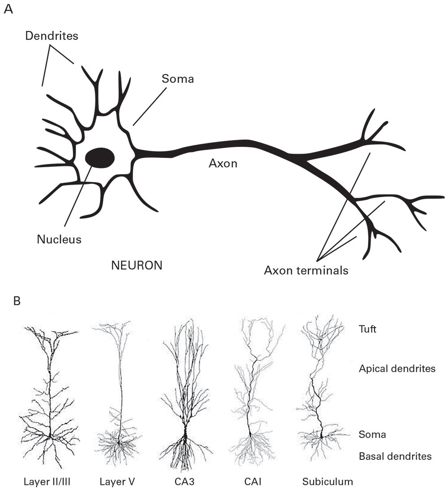
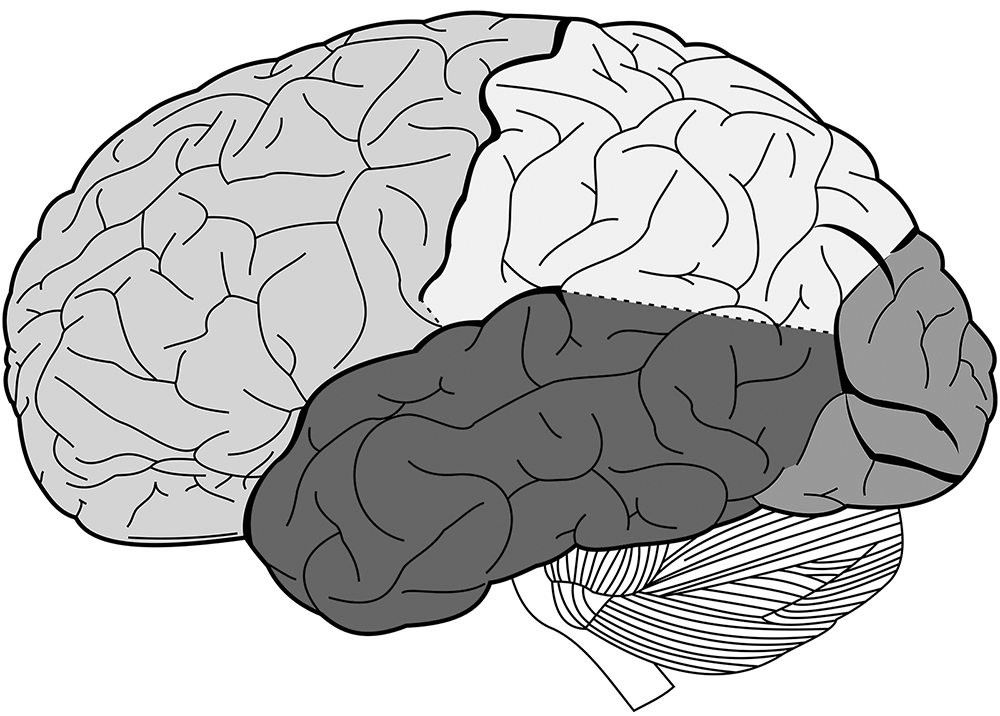
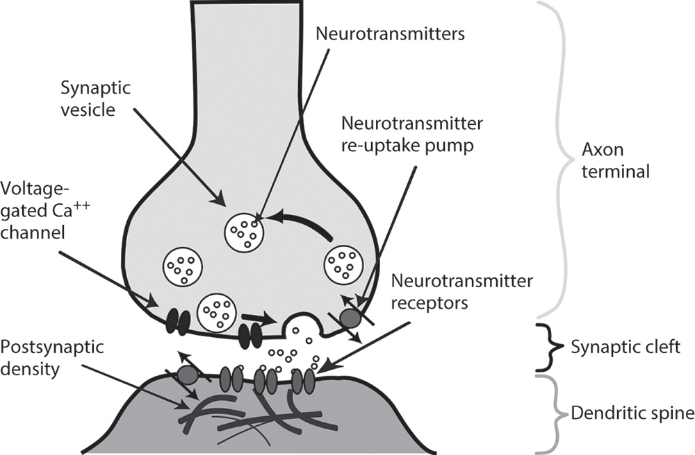
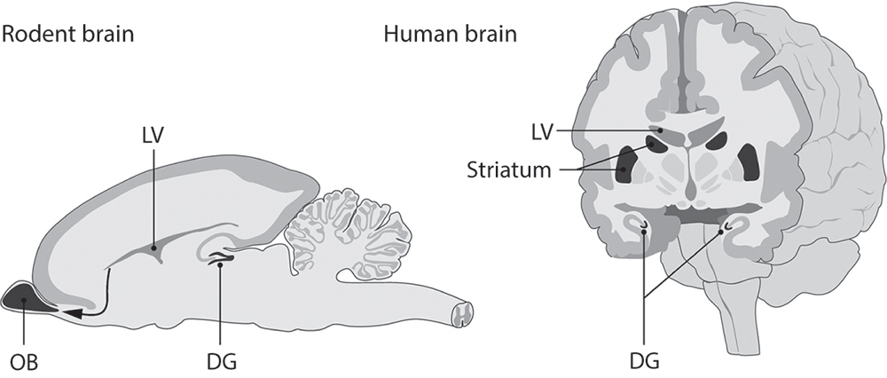
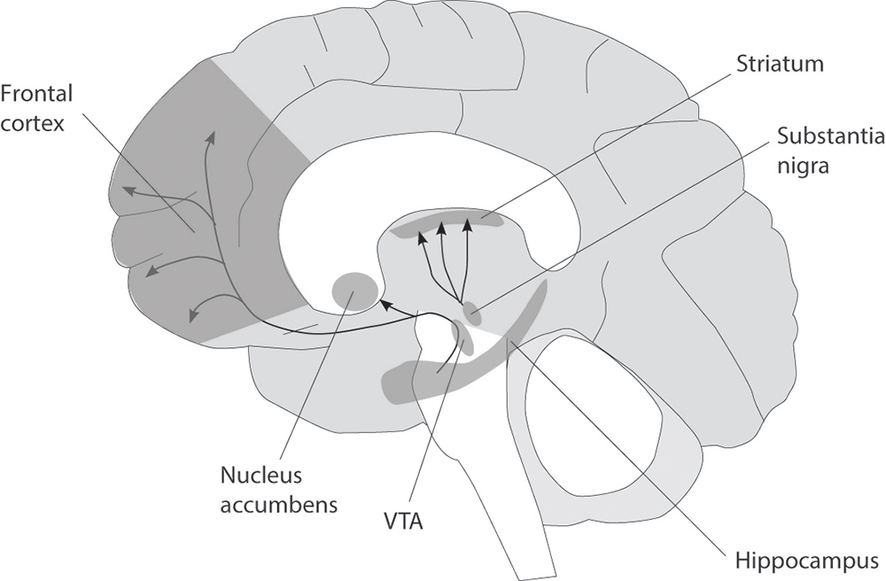

Lời Tựa
MỤC LỤC
Lời tựa của bộ sách, Lời tựa, 1. Giới thiệu, 2. Thay thế cảm giác, 3. Tính dẻo trong phát triển, 4. Tính dẻo synapse, 5. Tế bào thần kinh mới ở người trưởng thành, 6. Huấn luyện não bộ, 7. Tổn thương dây thần kinh và não bộ, 8. Nghiện và đau, 9. Những thay đổi não bộ suốt đời, 10. Kết luận, Ghi chú, Từ vựng, Đọc thêm, Chỉ mục.
LỜI TỰA CỦA BỘ SÁCH
Bộ sách Essential Knowledge của MIT Press cung cấp những cuốn sách bỏ túi dễ đọc, súc tích, được trình bày đẹp mắt về các chủ đề đang được quan tâm. Được viết bởi những tư tưởng gia hàng đầu, các cuốn sách trong bộ sách này mang đến những cái nhìn tổng quan chuyên môn về các chủ đề trải dài từ văn hóa và lịch sử đến khoa học và kỹ thuật. Trong thời đại hôm nay, khi thông tin được thỏa mãn ngay lập tức, chúng ta dễ dàng tiếp cận với những ý kiến, sự biện minh và những mô tả hời hợt. Điều khó tìm kiếm hơn nhiều là kiến thức nền tảng giúp hình thành sự hiểu biết có nguyên tắc về thế giới. Những cuốn sách Essential Knowledge lấp đầy nhu cầu đó. Bằng cách tổng hợp các chủ đề chuyên sâu cho người không chuyên và tiếp cận những vấn đề then chốt qua những kiến thức cơ bản, mỗi cuốn sách nhỏ gọn này mang đến cho độc giả một điểm khởi đầu để tiếp cận các ý tưởng phức tạp. Bruce Tidor, Giáo sư Kỹ thuật Sinh học và Khoa học Máy tính, Viện Công nghệ Massachusetts.
LỜI TỰA
Trong những năm gần đây, các nhà nghiên cứu đã đạt được những bước tiến lớn trong hiểu biết về cách não bộ hoạt động. Thần kinh học vừa mang lại những hứa hẹn, vừa tiềm ẩn những nguy cơ, vì thế sự quan tâm của công chúng đối với lĩnh vực này đã tăng lên rất nhiều — bởi những tiềm năng và lời hứa mà nó mang lại — và một khái niệm thần kinh học đặc biệt đã chiếm được trí tưởng tượng của công chúng: neuroplasticity (tính dẻo thần kinh), hay sự thay đổi của nervous system (hệ thần kinh). Cách đây sáu mươi năm, ý tưởng rằng mô thần kinh có thể thay đổi bị xem là dị giáo đối với thần kinh học. Người ta tin rộng rãi rằng não bộ trưởng thành là một cấu trúc cố định, và do đó “bạn không thể dạy một con chó già những trò mới.” Giáo điều này sau đó đã bị lật đổ bởi một khối lượng nghiên cứu khổng lồ cho thấy không chỉ não bộ có thể thay đổi, mà nó còn thay đổi liên tục suốt cuộc đời, bằng cách này hay cách khác, để đáp ứng với mọi việc chúng ta làm và mọi trải nghiệm chúng ta có.
Neuroplasticity (tính dẻo thần kinh) là một thuật ngữ chung chung chỉ những cách khác nhau mà hệ thần kinh có thể thay đổi. Các nhà thần kinh học định nghĩa nó khá mơ hồ, dùng nó để mô tả nhiều hiện tượng rất đa dạng. Trong công chúng nói chung, khái niệm này thường bị hiểu sai, và những hiểu lầm về tính dẻo thần kinh là gì và nó có thể làm được gì rất phổ biến. Cuốn sách này tóm tắt những kiến thức cốt lõi về tính dẻo thần kinh cho độc giả phổ thông, tập trung vào các phát hiện thí nghiệm then chốt, các phương pháp và công nghệ được dùng để có được những phát hiện đó, cũng như cách tư duy của chúng ta về não bộ đã tiến hóa theo thời gian. Mỗi chương của sách dành cho một chế độ cụ thể của tính dẻo thần kinh. Sau khi trình bày góc nhìn lịch sử, cuốn sách mô tả những thay đổi xảy ra trong quá trình phát triển của não bộ; những thay đổi xảy ra trong não của người mù và người điếc; các cơ chế của synaptic plasticity (tính dẻo synapse) làm nền tảng cho learning (học tập); sự hình thành tế bào mới trong não người trưởng thành; cách các loại training (huấn luyện) khác nhau, chẳng hạn như học chơi nhạc cụ hoặc nói một ngôn ngữ nước ngoài, làm thay đổi não bộ; cách tính dẻo thần kinh đi lệch hướng trong tình trạng addiction (nghiện) và pain (đau); và những thay đổi não bộ then chốt liên quan đến các giai đoạn khác nhau của cuộc đời. Chương kết luận tóm tắt các điểm chính, mô tả một số dạng tính dẻo mới được phát hiện, và khám phá một số trong nhiều câu hỏi vẫn còn chờ được trả lời. Các cơ chế của tính dẻo thần kinh quá nhiều và quá đa dạng đến mức không ai có thể hy vọng bao quát trọn vẹn chủ đề này trong một cuốn sách nhỏ như vậy. Tuy nhiên, tập sách này sẽ mang lại cho độc giả cái nhìn tổng quan tốt về những gì chúng ta biết đối với tính dẻo thần kinh, cũng như sự hiểu biết vững chắc về một số nguyên lý thần kinh học then chốt, kiến thức về những phát triển lịch sử quan trọng trong lĩnh vực này, và một số cái nhìn sâu sắc về quá trình khoa học.
Chương 1: Giới Thiệu
Nếu bạn tìm kiếm trên Google về cụm từ “tái thiết kế não bộ,” tính năng tự động hoàn thành sẽ đưa ra danh sách các cụm từ tìm kiếm phổ biến nhất chứa cụm đó. Theo kết quả của một cuộc tìm kiếm như vậy, bạn có thể “tái thiết kế não bộ” để yêu thương và hạnh phúc, để thành công hơn trong công việc, và thậm chí để tìm thấy ý nghĩa trong cuộc đời mình. Cuộn xuống các kết quả tìm kiếm sẽ hiện ra thêm nhiều lựa chọn: tái thiết kế não bộ để suy nghĩ tích cực, nuôi dưỡng sự tự tin, ngủ ngon hơn, và tránh trì hoãn. Nếu tin vào Internet, bạn có thể tái thiết kế não bộ để cải thiện gần như mọi khía cạnh trong hành vi của mình, và vì vậy, sức mạnh để thay đổi cuộc đời bạn nằm ở khả năng chủ động thay đổi khối thịt nặng 1,4 kg bên trong đầu bạn. Nhưng “tái thiết kế não bộ” thực sự nghĩa là gì? Thuật ngữ này đề cập đến khái niệm tính dẻo thần kinh, một thuật ngữ được định nghĩa rất lỏng lẻo, đơn giản là chỉ một dạng thay đổi nào đó của hệ thần kinh. Chỉ 50 năm trước, ý tưởng rằng não bộ người trưởng thành có thể thay đổi dưới bất kỳ hình thức nào bị coi là dị giáo. Các nhà nghiên cứu chấp nhận rằng não bộ chưa trưởng thành thì dẻo dai, nhưng cũng tin rằng nó dần trở nên cứng lại, như đất sét đổ vào khuôn, thành một cấu trúc cố định vĩnh viễn khi thời thơ ấu kết thúc. Người ta cũng tin rằng chúng ta sinh ra với tất cả các tế bào não mà chúng ta sẽ có, rằng não bộ không có khả năng tự tái tạo, và do đó, bất kỳ tổn thương hay chấn thương nào nó phải chịu đều không thể được sửa chữa. Trên thực tế, không gì có thể xa rời sự thật hơn thế. Não bộ người trưởng thành không chỉ có khả năng thay đổi, mà còn thay đổi liên tục suốt cuộc đời, để đáp ứng với mọi việc chúng ta làm và mọi trải nghiệm chúng ta có. Các hệ thần kinh đã tiến hóa để cho phép chúng ta thích nghi với môi trường và xác định hành động tốt nhất trong bất kỳ tình huống nào, dựa trên những gì đã học được từ kinh nghiệm trong quá khứ. Điều này không chỉ đúng với con người, mà với mọi sinh vật có hệ thần kinh. Nói cách khác, các hệ thần kinh tiến hóa để thay đổi, và vì thế tính dẻo thần kinh là một thuộc tính nội tại và căn bản của mọi hệ thần kinh.
Não bộ người trưởng thành không chỉ có khả năng thay đổi, mà còn thay đổi liên tục suốt cuộc đời, để đáp ứng với mọi việc chúng ta làm và mọi trải nghiệm chúng ta có. Vì vậy, khái niệm tính dẻo thần kinh thấm nhuần mọi nhánh của nghiên cứu não bộ, và các nhà thần kinh học coi là đương nhiên rằng bất kỳ thí nghiệm nào họ tiến hành cũng sẽ gây ra một dạng thay đổi nào đó trong hệ thần kinh của sinh vật đang được nghiên cứu. Các nhà nghiên cứu khác nhau định nghĩa tính dẻo thần kinh theo những cách khác nhau, tùy vào chính xác khía cạnh nào của não bộ và hành vi mà họ đang nghiên cứu, và thuật ngữ này mơ hồ đến mức trở nên gần như vô nghĩa khi được dùng riêng lẻ, không kèm theo giải thích cụ thể về loại thay đổi dẻo nào đang diễn ra. Tuy nhiên, ý tưởng rằng chúng ta có thể chủ động định hình não bộ để thay đổi chính mình là một ý tưởng hấp dẫn, và vì thế khái niệm này đã chiếm được trí tưởng tượng của công chúng.
Ngày nay, tính dẻo thần kinh là một từ thời thượng trong nhiều lĩnh vực khác nhau. “Tái thiết kế não bộ” đã trở thành một dạng khẩu hiệu của các diễn giả truyền cảm hứng và các chuyên gia tự giúp mình, và khái niệm này được viện dẫn bởi các nhà giáo dục cùng các quản trị doanh nghiệp trong nỗ lực nâng cao việc học tập và cải thiện kỹ năng lãnh đạo. Tuy nhiên, sự hiểu lầm là rất phổ biến, và trong những ngữ cảnh này, tính dẻo thần kinh thường được định nghĩa mơ hồ và hay bị hiểu sai. Một số người tin rằng nó có sức chữa lành kỳ diệu, và số khác nói họ có thể khai thác nó thông qua các sản phẩm hay liệu pháp New Age; nhưng những tuyên bố như vậy thường được phóng đại quá mức và đôi khi hoàn toàn vô căn cứ.
Lược Sử Tính Dẻo Thần Kinh
Tính dẻo thần kinh thường được mô tả như một phát hiện cách mạng mới, nhưng khái niệm này đã tồn tại dưới một hình thức hay hình thức khác trong hơn 200 năm. Vào đầu những năm 1780, các bức thư trao đổi giữa nhà tự nhiên học người Thụy Sĩ Charles Bonnet và nhà giải phẫu học người Ý Michele Vincenzo Malacarne đã thảo luận về khả năng rằng bài tập tinh thần có thể dẫn đến sự phát triển của não bộ, và đề cập đến nhiều cách khác nhau để kiểm tra ý tưởng này bằng thực nghiệm. Malacarne sau đó đã làm như vậy, sử dụng các cặp chó cùng một lứa và các cặp chim cùng một ổ trứng. Ông huấn luyện kỹ một con vật trong mỗi cặp trong vài năm rồi kiểm tra não của chúng, và tuyên bố rằng cerebellum (tiểu não) lớn hơn đáng kể ở những con vật được huấn luyện so với những con không được huấn luyện. Ngay sau đó, bác sĩ người Đức Samuel Thomas von Sömmerring đã nêu ý tưởng này trong một cuốn sách giáo khoa giải phẫu có ảnh hưởng xuất bản năm 1791: “Việc sử dụng và vận dụng sức mạnh tinh thần có làm thay đổi dần cấu trúc vật chất của não bộ không,” ông viết, “giống như chúng ta thấy, chẳng hạn, rằng những cơ bắp được sử dụng nhiều trở nên khỏe hơn và lao động nặng làm dày đáng kể lớp biểu bì? Điều đó không phải là không thể, dù dao giải phẫu không dễ chứng minh được điều này.” Đầu thế kỷ mười chín, Johann Spurzheim, một trong những người sáng lập môn phrenology (đoán tính cách qua hình dáng hộp sọ), đã gợi ý rằng sự phát triển của các năng lực tinh thần và các cấu trúc não tương ứng có thể được kích thích bằng bài tập và giáo dục. Và Jean-Baptiste Lamarck, một đối thủ của Charles Darwin, người cho rằng tiến hóa xảy ra thông qua sự di truyền các đặc điểm thu được, tin rằng các vùng não chuyên biệt phát triển thông qua việc sử dụng đúng cách các năng lực tương ứng.1 Vào những năm 1830, nhà sinh lý học Theodore Schwann và nhà thực vật học Matthias Schleiden đã phát triển thuyết tế bào, theo đó tế bào là đơn vị cấu trúc cơ bản của mọi sinh vật. Tuy nhiên, kính hiển vi có sẵn vào thời điểm đó chưa đủ mạnh để phân giải các chi tiết tinh tế của mô thần kinh. Vẫn chưa rõ thuyết tế bào có áp dụng được cho hệ thần kinh hay không, và suốt thế kỷ mười chín đã có cuộc tranh luận về cấu trúc tinh vi của não và tủy sống. Các nhà nghiên cứu chia thành hai phe: những người theo thuyết nơ-ron, cho rằng hệ thần kinh cũng như mọi sinh vật khác phải được tạo thành từ tế bào, và những người theo thuyết mạng lưới, lập luận rằng nó được tạo thành từ một tấm mô liên tục. Cuộc tranh luận cuối cùng được giải quyết vào những năm 1890, phần lớn nhờ công trình của nhà giải phẫu thần kinh người Tây Ban Nha Santiago Ramón y Cajal. Tận dụng những tiến bộ trong kính hiển vi và các phương pháp nhuộm mới, Cajal đã kiểm tra và so sánh mô thần kinh từ các loài khác nhau, bao gồm cả con người, và, là một họa sĩ tài năng, đã ghi lại các quan sát của mình qua những bản vẽ đẹp mắt.
Dựa trên công trình của chính mình và của nhiều người khác, ông đã tích lũy đủ bằng chứng để thuyết phục cộng đồng khoa học rằng mô thần kinh được tạo thành từ các tế bào gọi là neuron (tế bào thần kinh), những tế bào thiết lập các tiếp xúc với nhau. Qua đó, ông đã thiết lập thần kinh học hiện đại thành một ngành học độc lập, và ngày nay được xem là người sáng lập ra ngành này.2

Hình 1 (A) Sơ đồ minh họa các cấu trúc chính của một tế bào thần kinh (https://commons.wikimedia.org/wiki/Neuron#/media/File:Neuron_-_annotated.svg, CC BY-SA 3.0). (B) Các nơ-ron hình chóp từ các tầng và vùng khác nhau của vỏ não, dựa trên các bản vẽ của Cajal.
Darwin đã suy đoán về tính dẻo thần kinh trong tác phẩm The Descent of Man (Nguồn Gốc Của Con Người), xuất bản năm 1874. “Tôi đã chỉ ra rằng não của những con thỏ nuôi trong nhà giảm đáng kể về thể tích so với thỏ rừng hoặc thỏ đồng,” ông viết, “và điều này có thể là do chúng bị giam cầm chặt chẽ qua nhiều thế hệ, nên chúng đã rất ít vận dụng trí tuệ, bản năng, giác quan và các cử động tự nguyện của mình.” Nhưng thuật ngữ “tính dẻo” (plasticity) lần đầu xuất hiện trong một cuốn sách giáo khoa năm 1890 có tên The Principles of Psychology của William James. Tại đây, James định nghĩa tính dẻo là “sở hữu một cấu trúc yếu đến mức có thể nhường trước một ảnh hưởng, nhưng đủ mạnh để không nhường ngay lập tức,” và giải thích sự hình thành thói quen thông qua việc củng cố các synapse (khớp thần kinh) và hình thành các kết nối mới:
“Nếu thói quen là do tính dẻo của vật chất trước các tác nhân bên ngoài, thì chúng ta có thể ngay lập tức thấy được những ảnh hưởng bên ngoài nào — nếu có — mà chất não là dẻo... và chính là những dòng cực kỳ suy giảm đổ vào qua [các rễ dây thần kinh cảm giác] mà vỏ não bán cầu lại tỏ ra đặc biệt nhạy cảm. Những dòng này, một khi đã vào trong, phải tìm một lối ra. Khi ra đi, chúng để lại dấu vết trên những đường đi mà chúng đi qua. Điều duy nhất chúng có thể làm, nói ngắn gọn, là làm sâu thêm những đường cũ hoặc tạo ra những đường mới.” Năm 1894, Cajal gợi ý rằng tính dẻo xảy ra tại các điểm nối giữa các tế bào thần kinh và rằng bài tập tinh thần dẫn đến sự phát triển của các nhánh sợi thần kinh mới. “Lý thuyết về sự phân nhánh tự do của các nhánh tế bào có khả năng phát triển dường như không chỉ rất có khả năng mà còn rất đầy hứa hẹn,” ông nói trong một bài giảng tại Hội Hoàng gia ở London. “Một mạng lưới liên tục được thiết lập sẵn — một dạng hệ thống dây điện tín không có khả năng có thêm trạm hay đường dây mới — là một thứ cứng nhắc và không thể thay đổi, xung đột với ấn tượng của chúng ta rằng cơ quan tư duy, trong những giới hạn nhất định, là dẻo được... đặc biệt là trong thời kỳ phát triển... Chúng ta có thể nói rằng vỏ não giống như một khu vườn được trồng đầy những cái cây — các tế bào hình chóp — mà nhờ được canh tác thông minh, có thể nhân thêm nhánh và đâm rễ sâu hơn, tạo ra trái cây và hoa với sự đa dạng và chất lượng ngày càng tăng.”
Ba năm sau, nhà sinh lý học thần kinh người Anh Charles Sherrington đã đặt tên cho những điểm nối này là “synapses” (khớp thần kinh), từ các từ Hy Lạp syn nghĩa là “cùng nhau” và haptein nghĩa là “ôm chặt,” và khẳng định rằng khớp thần kinh có lẽ là nơi diễn ra việc học tập. Ông đề cập rõ ràng đến sự củng cố khớp thần kinh: “Bị cắt đứt mọi cơ hội tự tái tạo, tế bào thần kinh dồn phần năng lượng bị kìm nén của mình vào việc khuếch đại các kết nối với đồng loại, để đáp ứng với những sự kiện kích thích nó.” Những người khác thách thức quan niệm rằng việc học có thể tạo ra các nhánh sợi thần kinh mới, chỉ ra bằng chứng rằng sự biến đổi về kích thước của não ít hơn rất nhiều so với bất kỳ cơ quan nào khác, và thể tích não dường như không đổi trong phần lớn cuộc đời. Cajal đã đề phòng sự phản đối này bằng cách gợi ý về “sự suy giảm tương hỗ của các thân tế bào hoặc sự co lại của những vùng khác... mà chức năng của chúng không liên quan trực tiếp đến trí tuệ.” Tuy nhiên, chưa đầy 10 năm sau, Cajal dường như đã thay đổi ý kiến. “Một khi sự phát triển kết thúc, các nguồn sinh trưởng của axon (sợi trục) và dendrite (sợi nhánh) đã cạn kiệt không thể đảo ngược,” ông viết trong cuốn sách giáo khoa năm 1913 của mình, Degeneration and Regeneration of Nervous System. “Ở các trung tâm của người trưởng thành, các đường dây thần kinh là thứ đã cố định, kết thúc và bất biến. Mọi thứ đều có thể chết, không có gì có thể được tái tạo.” Quan điểm này nhanh chóng trở thành một trong những giáo điều trung tâm của thần kinh học, và các nhà nghiên cứu đi đến đồng thuận chung rằng não bộ không bị ảnh hưởng vật chất bởi việc học tập, kinh nghiệm hay huấn luyện.3
Rồi, vào năm 1973, Tim Bliss và Terje Lømo báo cáo phát hiện về long-term potentiation (LTP, sự tăng cường dài hạn), một cơ chế sinh lý nhờ đó các khớp thần kinh có thể được củng cố trong những thời gian dài. Đây lại là một phát hiện mang tính mở đường. Ngày nay, sự biến đổi khớp thần kinh được xem rộng rãi là nền tảng tế bào của học tập và memory (trí nhớ), và vì vậy, LTP là chế độ tính dẻo thần kinh được nghiên cứu kỹ và hiểu rõ nhất hiện nay. Kể từ phát hiện ban đầu, các nhà nghiên cứu đã tích lũy được một kho kiến thức phong phú về các cơ chế phân tử nền tảng của LTP và các quá trình liên quan. Thế nhưng, trớ trêu thay, công trình này lại cho chúng ta biết rất ít về cách có thể tăng cường việc học tập và trí nhớ.
Cuộc Cách Mạng Trong Thần Kinh Học Hiện Đại
Vào cuối những năm 1990, bằng chứng trực tiếp hơn cho tính dẻo thần kinh đã xuất hiện, với việc phát hiện ra các stem cells (tế bào gốc) thần kinh trong não người trưởng thành. Điều này, hơn bất cứ điều gì, đã thuyết phục được cộng đồng khoa học: sự đồng thuận lại thay đổi một lần nữa, và tính dẻo thần kinh được ca ngợi như một phát hiện cách mạng mới lật đổ mọi điều chúng ta từng nghĩ là biết về não bộ. Giờ đây, với những công nghệ tiên tiến hơn trong tay, các nhà thần kinh học có thể quan sát não bộ với mức độ chi tiết chưa từng có và điều khiển hoạt động của các nơ-ron với độ chính xác rất cao. Những phương pháp mới này đã phơi bày nhiều chế độ khác của tính dẻo thần kinh và cũng làm sáng tỏ một số cơ chế nền tảng. Tính dẻo thần kinh có thể được thấy dưới nhiều hình thức ở mọi cấp độ tổ chức của hệ thần kinh, từ các cấp độ thấp nhất của hoạt động phân tử và cấu trúc, chức năng của từng tế bào, qua các cấp độ trung gian là những quần thể nơ-ron riêng biệt và các mạng lưới thần kinh lan rộng, đến cấp độ cao nhất là các hệ thống toàn não và hành vi. Một số diễn ra liên tục suốt cuộc đời, số khác chỉ trong những giai đoạn cụ thể của cuộc đời, và các loại khác nhau có thể được tạo ra riêng lẻ hoặc cùng nhau. Tính dẻo thần kinh có thể được thấy dưới nhiều hình thức ở mọi cấp độ tổ chức của hệ thần kinh, từ các cấp độ thấp nhất của hoạt động phân tử đến cấp độ cao nhất là các hệ thống toàn não và hành vi.
Nói chung, có hai loại chính của tính dẻo thần kinh. Tính dẻo chức năng liên quan đến những thay đổi ở một khía cạnh sinh lý nào đó của chức năng tế bào thần kinh, chẳng hạn như tần số của các xung thần kinh hay xác suất giải phóng một tín hiệu hóa học — cả hai đều làm cho các kết nối khớp thần kinh mạnh hơn hoặc yếu hơn — hoặc những thay đổi về mức độ đồng bộ giữa các quần thể tế bào. Tính dẻo cấu trúc bao gồm những thay đổi về thể tích ở các vùng não riêng biệt và sự hình thành các đường dẫn thần kinh mới, được tạo ra hoặc bằng cách hình thành các nhánh sợi thần kinh và khớp thần kinh mới, hoặc bằng cách phát triển và bổ sung tế bào mới. Những chế độ tính dẻo khác nhau này diễn ra trên một phạm vi rất rộng về thời gian. Sự biến đổi khớp thần kinh có thể xảy ra trong thang thời gian mili-giây, các khớp thần kinh và nhánh sợi nhánh được tạo ra hay bị phá hủy trong vài giờ, và tế bào mới có thể sinh ra hay bị tiêu diệt trong vài ngày. Những dạng tính dẻo thần kinh khác diễn ra trong khung thời gian còn dài hơn — ví dụ, sự trưởng thành của não bộ bao gồm một giai đoạn kéo dài với tính dẻo tăng cao, kéo từ cuối thời thơ ấu đến đầu tuổi trưởng thành, và việc mất đi giác quan thị giác hay thính giác, hoặc chịu tổn thương não, sẽ gây ra những thay đổi dần dần xảy ra trong những tuần, tháng và năm sau đó.
Chương 2: Thay Thế Cảm Giác
Vào đầu những năm 1800, thần kinh học bắt đầu phát triển mạnh khi các nhà nghiên cứu điều tra não bộ và xây dựng những lý thuyết mới về cách cấu trúc và chức năng của nó liên hệ với hành vi và các chức năng tinh thần. Trong nửa đầu thế kỷ này, lĩnh vực bị chi phối bởi môn phrenology (đoán tính cách qua hình dáng hộp sọ), một ngành giả khoa học tìm cách xác định các đặc điểm tinh thần của con người qua việc đo lường hộp sọ. Cách tiếp cận này cuối cùng đã mất uy tín, nhường chỗ cho một lý thuyết khác gọi là sự định vị chức năng não bộ, theo đó não được cấu tạo từ những vùng giải phẫu riêng biệt, mỗi vùng chuyên thực hiện một chức năng cụ thể. Công trình sau đó đã xác định các vùng cảm giác và vận động của não, cho thấy không chỉ chúng lần lượt chịu trách nhiệm về cảm giác và cử động, mà các vùng này luôn nằm ở cùng một vị trí trong não. Vì vậy, khi thần kinh học hiện đại ra đời vào khoảng đầu thế kỷ hai mươi, ý tưởng rằng cerebral cortex (vỏ não) được tạo thành từ những vùng riêng biệt chuyên cho ngôn ngữ, xúc giác, thị giác v.v. đã ăn sâu bén rễ. Tuy nhiên, theo thời gian, bằng chứng bắt đầu xuất hiện cho thấy vỏ não thực ra rất dẻo, và cái gọi là tổ chức mô-đun của não không phải là điều gì đó bất di bất dịch. Phần lớn bằng chứng này đến từ các nghiên cứu trên người mù và người điếc, những người mà não bị tước đoạn hoàn toàn một loại đầu vào cảm giác nhất định. Những công trình này cho thấy rõ ràng rằng các vùng vỏ não không chuyên biệt như chúng ta từng nghĩ — ví dụ, các vùng thị giác và thính giác của vỏ não không chỉ có thể xử lý thông tin từ các giác quan khác, mà còn có thể góp phần vào các quá trình phi cảm giác như ngôn ngữ. Tuy nhiên, theo thời gian, bằng chứng bắt đầu xuất hiện cho thấy vỏ não thực ra rất dẻo, và tổ chức mô-đun được cho là đó không phải là điều bất di bất dịch.
Từ Phrenology Đến Việc Định Vị Chức Năng Não Bộ
Môn phrenology (đoán tính cách qua hình dáng hộp sọ) được sáng lập bởi nhà giải phẫu học vĩ đại Franz Joseph Gall, người nói rằng ông lần đầu nghĩ ra ý tưởng của mình lúc chín tuổi. Khi còn là học sinh, Gall nhận thấy một bạn cùng lớp có trí nhớ từ ngữ vượt trội cũng có đôi mắt lồi, và tin rằng hai đặc điểm này xuất hiện cùng nhau ở những người khác. “Dù tôi không có kiến thức chuẩn bị nào, tôi đã nảy sinh ý nghĩ rằng đôi mắt được tạo hình như vậy là dấu hiệu của một trí nhớ xuất chúng,” ông viết. “Sau này… tôi tự nhủ: nếu trí nhớ biểu hiện qua một đặc điểm thể chất, tại sao các đặc điểm khác lại không? Và điều đó đã trở thành động lực đầu tiên cho mọi nghiên cứu của tôi.” Gall bắt đầu giảng về phrenology năm 1796, một năm sau khi tốt nghiệp trường y, và lần đầu công bố lý thuyết của mình năm 1808. Ông dần tin rằng vùng trên mắt dành cho “Năng lực Chú ý và Phân biệt Từ ngữ, Ký ức về Từ ngữ, hay Trí nhớ Từ ngữ.” Về sau, ông ghi nhận trường hợp của hai người đàn ông không thể nhớ tên người thân và bạn bè do các vết thương do kiếm ở phía trên mắt, và ông coi đó là sự xác nhận cho những quan sát ban đầu mình từng thực hiện ở trường học. Ông tin rằng “Tính phá hoại” nằm phía trên tai, vì vùng này nổi bật ở một học sinh khác mà ông biết, người “thích hành hạ động vật,” và ở một người bán thuốc sau này trở thành đao phủ. Ông định vị “Tính tham lam” ở một vùng hơi lùi hơn phía sau, vì vùng đó dường như to bất thường ở những tên móc túi mà ông từng gặp; và “Tính lý tưởng” ở một vùng mà ông tin là nổi bật trong các bức tượng của nhà thơ, nhà văn và những tư tưởng gia vĩ đại khác — vùng đầu mà họ xoa khi viết. Gall thu thập khoảng 400 hộp sọ trong suốt sự nghiệp, bao gồm của những trí thức công chúng và những kẻ tâm thần, và lý thuyết của ông dựa gần như hoàn toàn vào các phép đo ông thực hiện trên chúng. Nhìn chung, ông tuyên bố đã định vị được 27 năng lực tinh thần, và cho rằng 19 trong số đó — kể cả lòng dũng cảm và các giác quan về không gian và màu sắc — cũng có thể được chứng minh ở động vật, trong khi số khác — như sự khôn ngoan, đam mê và khiếu hài hước châm biếm — là độc nhất ở con người. Dù luôn vấp phải chỉ trích, những người theo phrenology vẫn giữ ảnh hưởng đến giữa thế kỷ mười chín. Tuy nhiên, phương pháp của họ cuối cùng bị bác bỏ là phi khoa học — Gall và các cộng sự đã “chọn lọc” bằng chứng, loại bỏ những gì không phù hợp với lý thuyết của mình — và vì vậy, đến những năm 1870, lý thuyết định vị đã được chấp nhận rộng rãi, phần lớn nhờ các cuộc điều tra lâm sàng trên bệnh nhân tổn thương não. Năm 1861, một bác sĩ Pháp tên Pierre Paul Broca đã mô tả một vài bệnh nhân stroke (đột quỵ) được nhập viện nơi ông làm việc, tất cả đều mất khả năng nói. Sau khi họ qua đời, Broca kiểm tra não của họ và nhận thấy tất cả đều bị tổn thương ở cùng một vùng của thùy trán trái. Mười năm sau, nhà bệnh lý học người Đức Karl Wernicke mô tả một nhóm bệnh nhân đột quỵ khác, những người mất khả năng hiểu ngôn ngữ nói do tổn thương ảnh hưởng đến một vùng của thùy thái dương trái. Những người khác tìm thấy thêm bằng chứng cho sự định vị chức năng não bộ. Đáng chú ý, các nhà sinh lý học Gustav Fritz và Eduard Hitzig đã kích thích điện và phá hủy có chọn lọc các bộ phận trong não động vật; qua đó họ xác định vỏ não vận động chính tại hồi trước trung tâm, và xác nhận rằng dải mô não này ở mỗi bán cầu kiểm soát các cử động của phía đối diện của cơ thể. Nhưng chính nhờ công trình của Broca mà lý thuyết định vị vỏ não được chấp nhận rộng rãi.1
Những Người Vẽ Bản Đồ Não
Vào thời điểm thần kinh học hiện đại ra đời khoảng đầu thế kỷ hai mươi, ý tưởng rằng vỏ não được cấu tạo từ các vùng giải phẫu riêng biệt với chức năng chuyên biệt đã được thiết lập vững chắc. Dù vậy, thêm bằng chứng lại xuất hiện trong những thập niên đầu của thế kỷ hai mươi, khiến khái niệm này càng ăn sâu. Vào khoảng thời gian đó, một nhà giải phẫu thần kinh người Đức tên Korbinian Brodmann bắt đầu kiểm tra cấu trúc vi mô của não người, và nhận ra ông có thể phân biệt các bộ phận khác nhau dựa trên cách tế bào được sắp xếp ở mỗi nơi. Dựa trên cơ sở này, Brodmann chia vỏ não thành 52 vùng và gán một con số cho mỗi vùng. Hệ thống phân loại giải phẫu thần kinh của Brodmann vẫn được sử dụng cho đến ngày nay — các vùng Brodmann 1, 2 và 3 tạo nên vỏ não cảm giác thân thể chính, nằm ở hồi sau trung tâm và nhận thông tin xúc giác từ bề mặt da; vùng Brodmann 4 là vỏ não vận động chính; và vùng Brodmann 17 là vỏ não thị giác chính. Vào những năm 1920, bác sĩ phẫu thuật thần kinh người Canada Wilder Penfield đã tiên phong một kỹ thuật kích thích điện não của bệnh nhân động kinh còn tỉnh, nhằm xác định vị trí của mô não bất thường gây ra các cơn co giật. Động kinh thường có thể điều trị hiệu quả bằng thuốc chống co giật, nhưng với thiểu số bệnh nhân không đáp ứng với thuốc, phẫu thuật có thể được thực hiện như biện pháp cuối cùng, để cắt bỏ mô bất thường và giảm bớt các cơn co giật suy nhược. Não là một cơ quan cực kỳ phức tạp, và phẫu thuật thần kinh lúc nào cũng có nguy cơ gây tổn thương lan tỏa đến các vùng liên quan đến những chức năng quan trọng như ngôn ngữ và vận động. Để tránh những tổn thương đó, Penfield cố tình giữ cho bệnh nhân tỉnh táo trong khi ông kích thích điện vỏ não, để họ có thể báo lại những trải nghiệm của mình cho ông. Khi ông kích thích hồi sau trung tâm, chẳng hạn, bệnh nhân mô tả cảm giác chạm ở một bộ phận nào đó trên cơ thể; kích thích hồi trước trung tâm làm cơ ở bộ phận tương ứng của cơ thể giật lên; và kích thích các bộ phận của thùy trán trái cản trở khả năng nói. Bằng cách này, ông có thể xác định ranh giới của mô bất thường và cắt bỏ nó mà không gây tổn thương cho mô xung quanh. Penfield đã mổ cho khoảng 400 bệnh nhân, và trong quá trình đó lập bản đồ các vùng vận động chính và cảm giác thân thể chính tương ứng với hồi trước trung tâm và hồi sau trung tâm.
Ông nhận thấy cả hai dải mô não này đều được tổ chức theo cách phân bố có thứ tự, sao cho các bộ phận cơ thể kề nhau được biểu diễn ở các vùng kề nhau của mô não (với một vài ngoại lệ nhỏ); và không phải bộ phận nào cũng được biểu diễn như nhau trong não: phần lớn vỏ não vận động chính và vỏ não cảm giác thân thể chính dành cho mặt và bàn tay, những bộ phận linh hoạt và nhạy cảm nhất của cơ thể. Penfield tóm tắt những phát hiện quan trọng này trong các sơ đồ homunculus (“người nhỏ”) do thư ký của ông vẽ. Những bản vẽ này minh họa sự tổ chức của vỏ não vận động chính và vỏ não cảm giác thân thể chính, cùng tỷ lệ mô của chúng dành cho từng bộ phận cơ thể, và sau đó được chuyển thể thành các mô hình ba chiều nổi tiếng.2
Thay Thế Cảm Giác
Bằng chứng sớm nhất cho thấy sự định vị chức năng não bộ này không phải là cố định đến từ các nghiên cứu được thực hiện vào cuối những năm 1960 bởi Paul Bach-y-Rita, người đã chế tạo một thiết bị cho phép người mù “nhìn” bằng giác quan xúc giác. Thiết bị này gồm một chiếc ghế nha sĩ được cải tạo, lắp 400 chốt rung lớn xếp thành mạng 20 nhân 20 ở tựa lưng, và được nối với một chiếc máy quay video lớn đặt phía sau trên một giá ba chân lớn. Bach-y-Rita tuyển một vài người mù để thử nghiệm thiết bị, trong đó có một nhà tâm lý học bị mù từ năm bốn tuổi. Để sử dụng, các đối tượng chỉ việc ngồi vào ghế và di chuyển chậm máy quay sang hai bên bằng một tay cầm. Khi họ làm vậy, hình ảnh từ máy quay được chuyển thành một kiểu rung trên mạng chốt ở tựa lưng. Với sự huấn luyện kỹ lưỡng, các đối tượng học được cách dùng cảm giác xúc giác để diễn giải chính xác các cảnh thị giác, bắt đầu, sau khoảng một giờ huấn luyện, với khả năng phân biệt các đường thẳng đứng, ngang, chéo và cong, rồi đến nhận dạng các hình dạng. Sau hơn khoảng 10 giờ huấn luyện, tất cả họ đều có thể nhận ra các vật dụng quen thuộc trong gia đình, phân biệt bóng tối và phối cảnh, và thậm chí nhận dạng người khác qua các đặc điểm khuôn mặt.3
Bach-y-Rita lập luận rằng khả năng này là nhờ các cơ chế “liên giác-quan” (cross-modal), theo đó thông tin thường được truyền bởi một giác quan, chẳng hạn thị giác, bằng cách nào đó được chuyển đổi và truyền tải bởi một giác quan khác, chẳng hạn xúc giác hoặc thính giác. Từ đó, các nhà nghiên cứu đã ghi nhận nhiều ví dụ về tính dẻo liên giác-quan, dùng các kỹ thuật chụp ảnh thần kinh hiện đại như functional magnetic resonance imaging (fMRI, chụp cộng hưởng từ chức năng) và transcranial magnetic stimulation (TMS, kích thích từ xuyên sọ). Các nghiên cứu chụp ảnh não cho thấy vỏ não thị giác chính được kích hoạt khi người mù đọc chữ nổi braille, việc này đòi hỏi kiểm soát vận động tinh và phân biệt xúc giác để nhận ra các kiểu chấm lồi. Sự kích hoạt này đi kèm với hoạt động tăng lên ở các vùng thị giác phía dưới liên quan đến nhận dạng hình dạng, và hoạt động giảm đi ở vùng cảm giác thân thể, so với người nhìn được. Kiểu hình này không chỉ thấy ở người sinh ra đã mù và những người mất thị lực từ nhỏ, mà còn ở những người mù về sau trong cuộc đời. Sự can thiệp vào hoạt động của vỏ não thị giác, chẳng hạn bằng TMS, làm cản trở nhận thức xúc giác ở người mù nhưng không có tác động đó ở nhóm đối chứng nhìn được, xác nhận rằng hoạt động ở vỏ não thị giác thực sự liên quan đến việc xử lý thông tin xúc giác, chứ không chỉ là sự trùng hợp ngẫu nhiên. Người mù cũng có thể học cách định hướng bằng định vị âm thanh (echolocation), bằng cách tạo tiếng tách tách bằng lưỡi hoặc tiếng gõ bằng chân, và dùng thông tin từ những tiếng vang phản hồi để nhận biết các đặc điểm vật lý của môi trường xung quanh. Điều này đòi hỏi rất nhiều huấn luyện, nhưng những người trở nên thành thạo có thể dùng định vị âm thanh để thực hiện những hành động cực kỳ phức tạp mà hầu hết chúng ta không thể tưởng tượng được nếu thiếu thị giác, chẳng hạn chơi trò chơi điện tử hoặc đi xe đạp. Và khi người mù định vị âm thanh, thông tin âm thanh lại được xử lý ở các bộ phận thị giác chứ không phải thính giác của não.4,5

Hình 2 Các thùy của não. Theo chiều kim đồng hồ, từ trái sang phải: thùy trán, thùy đỉnh, thùy chẩm, thùy thái dương. Hệ thị giác thường được chia thành hai đường dẫn riêng biệt chạy song song qua thùy chẩm ở phía sau não — một dòng phía trên xử lý thông tin không gian (đường “ở đâu”) và một dòng phía dưới liên quan đến nhận dạng vật thể (đường “là gì”). Tổ chức này dường như vẫn được bảo tồn ở người mù: khi người mù học định vị âm thanh, phần trên của vỏ não thị giác được kích hoạt khi họ xác định vị trí vật thể, và phần dưới khi họ nhận dạng vật đó.6
Vì vậy, khi bị tước đoạn các đầu vào cảm giác mà nó thường nhận, vỏ não thị giác có thể đổi vai trò và xử lý các loại thông tin cảm giác khác. Đáng chú ý hơn cả, nó có thể thích nghi theo cách thực hiện các chức năng phi cảm giác khác, chẳng hạn ngôn ngữ. Những thí nghiệm chụp não tương tự cho thấy vùng não này được kích hoạt khi người mù tạo ra động từ, nghe ngôn ngữ nói, và thực hiện các nhiệm vụ trí nhớ từ ngữ cùng xử lý từ ngữ cấp cao.
Người mù vượt trội hơn người nhìn được trong những nhiệm vụ này, và mức độ kích hoạt ở vỏ não thị giác của họ tương quan chặt chẽ với kết quả trong các bài kiểm tra trí nhớ từ ngữ. Những nghiên cứu này cũng cho thấy đọc chữ nổi braille ưu tiên kích hoạt đầu trước của vỏ não thị giác, trong khi ngôn ngữ kích hoạt vùng phía sau, và một số phát hiện rằng vỏ não thị giác trái trở nên hoạt động mạnh hơn bên phải trong các nhiệm vụ ngôn ngữ, có lẽ vì các trung tâm ngôn ngữ thường nằm ở bán cầu trái. Và cũng như việc can thiệp vào hoạt động vỏ não thị giác làm gián đoạn khả năng xử lý cảm giác xúc giác và hiểu chữ nổi của người mù, nó cũng làm suy giảm kết quả của họ trong các bài kiểm tra trí nhớ từ ngữ.7 Não của người điếc cũng cho thấy những thay đổi dẻo lớn. Ở người nghe được, thông tin âm thanh từ tai được các vỏ não thính giác ở thùy thái dương xử lý. Tuy nhiên, ở người sinh ra đã điếc, chính những vùng não đó lại được kích hoạt để đáp ứng với các kích thích thị giác. Người điếc cũng dường như có thị lực ngoại vi được tăng cường. Điều này liên quan đến sự gia tăng tổng diện tích của đĩa thị, nơi các sợi của dây thần kinh thị giác rời mắt trên đường đi đến não, và sự dày lên quanh mép của nó; điều này cũng gợi ý rằng dòng “ở đâu” của đường thị giác mạnh hơn. Tính dẻo thần kinh ở người điếc không giới hạn ở các hệ thị giác và thính giác. Dùng diffusion tensor imaging (DTI, chụp cắt lớp ten-xơ khuếch tán) để quan sát sự kết nối của não, các nhà nghiên cứu phát hiện rằng điếc liên quan đến những thay đổi lớn ở các đường dẫn thần kinh tầm xa, đặc biệt là những đường nối giữa các vùng cảm giác của vỏ não với một cấu trúc dưới vỏ gọi là đồi thị. Đồi thị có nhiều chức năng quan trọng, đặc biệt trong việc chuyển tiếp thông tin từ các giác quan đến vùng vỏ não tương ứng, từ đó điều hòa dòng thông tin giữa các vùng khác nhau của vỏ não. Người điếc cho thấy những thay đổi ở cấu trúc vi mô của các kết nối đồi thị–vỏ não ở mọi thùy của não, khi so sánh với người nghe được. Vì vậy, điếc dường như gây ra những thay đổi dẻo trên toàn não, làm thay đổi sâu sắc cách thông tin chảy qua não bộ.8
Với những tiến bộ công nghệ, các thiết bị thay thế cảm giác đã tiến rất xa so với cỗ máy cồng kềnh của Bach-y-Rita. Thay vì chỉ dùng chúng như công cụ thí nghiệm, nhiều nhóm nghiên cứu hiện đang phát triển các thiết bị này thành bộ phận giả giúp người mù và người điếc bù đắp cho sự mất mát giác quan, và vào tháng 6 năm 2015, một thiết bị như vậy đã được Cục Quản lý Thực phẩm và Dược phẩm Hoa Kỳ (FDA) phê duyệt để sử dụng. BrainPort V100 về cơ bản là phiên bản thu nhỏ của thiết bị của Bach-y-Rita, gồm một máy quay video gắn trên kính mát và một mạng 20 nhân 20 điện cực lắp trên một miếng nhựa nhỏ, phẳng được đặt trong miệng. Phần mềm máy tính chuyển đổi hình ảnh từ máy quay và truyền đến các điện cực, để chúng được cảm nhận như một kiểu râm ran trên lưỡi. Trong các thử nghiệm, khoảng 70% người mù học được cách dùng thiết bị để nhận dạng vật thể sau khoảng một năm huấn luyện.
Xử Lý Liên Giác-Quan Và Tích Hợp Đa Giác-Quan
Những nghiên cứu về mù và điếc cho thấy, vỏ não có khả năng tính dẻo đáng kể, và sự định vị chức năng não bộ không nghiêm ngặt như các nhà thần kinh học thế kỷ mười chín từng tin. Những vùng thường chuyên thực hiện một chức năng cụ thể có thể đổi vai trò và xử lý các loại thông tin khác, và đặc biệt vỏ não thị giác đã được chứng minh là có khả năng thực hiện nhiều chức năng phi thị giác. Những vùng thường chuyên thực hiện một chức năng cụ thể có thể đổi vai trò và xử lý các loại thông tin khác, và đặc biệt vỏ não thị giác đã được chứng minh là có khả năng thực hiện nhiều chức năng phi thị giác. Trong điều kiện bình thường, các đường dẫn cảm giác của não không hoàn toàn tách biệt, mà được kết nối với nhau và vì thế có thể tương tác và ảnh hưởng lẫn nhau theo nhiều cách. Và trong khi hầu hết các vùng cảm giác chính chuyên xử lý thông tin từ một giác quan cụ thể, hầu hết các vùng “đầu cuối” phía dưới của chúng là cái gọi là vùng liên hợp, những vùng kết hợp các loại thông tin khác nhau trong một quá trình gọi là tích hợp đa giác-quan. Xử lý liên giác-quan và tích hợp đa giác-quan là những khía cạnh quan trọng của chức năng não bình thường, như hiệu ứng McGurk cho thấy. Hiệu ứng McGurk là một ảo giác mạnh xuất hiện khi có sự khác biệt giữa những gì chúng ta thấy và những gì chúng ta nghe: ví dụ điển hình nhất là một đoạn phim có người nói chữ cái g, được lồng tiếng bằng giọng nói chữ cái b, và người ta cảm nhận là chữ d. Sai lầm nhất quán này cho thấy rõ rằng thị giác và thính giác tương tác với nhau, và sự tương tác đó hỗ trợ nhận thức lời nói của chúng ta. Một số nhà nghiên cứu hiện cho rằng thay thế cảm giác có chung đặc điểm với, và là một dạng nhân tạo của, một tình trạng thần kinh gọi là synesthesia (đồng cảm giác), trong đó thông tin cảm giác thuộc một loại lại gây ra các cảm nhận ở một phương thức cảm giác khác.9 Ví dụ, nhà vật lý Richard Feynman là một người đồng cảm giác chữ-cái-màu, với mỗi chữ cái trong bảng chữ cái gợi ra cảm giác một màu cụ thể, nên ông nhìn thấy các chữ cái có màu khi nhìn vào phương trình. Họa sĩ Wassily Kandinsky có một dạng đồng cảm giác khác. Ông cảm nhận âm thanh khi nhìn màu sắc, và từng nói rằng ông cố tạo ra tương đương thị giác của một bản giao hưởng Beethoven trong tranh của mình. Từng được cho là cực kỳ hiếm, đồng cảm giác hiện được tin là khá phổ biến, và có thể được trải nghiệm bởi một trong mỗi trăm người, hoặc hơn. Hơn 40% người đồng cảm giác có người thân cũng mắc tình trạng này, cho thấy di truyền đóng vai trò lớn. Tuy nhiên, với huấn luyện, người không đồng cảm giác có thể học cách liên tưởng chữ cái với màu sắc hoặc âm thanh, sao cho chúng gợi ra trải nghiệm đồng cảm giác, và rất có thể việc học này cũng xảy ra như kết quả của tính dẻo liên giác-quan. Chính xác thì tính dẻo liên giác-quan phát sinh như thế nào vẫn chưa rõ, nhưng có thể nó liên quan đến một số quá trình. Trong quá trình phát triển, các kết nối thần kinh hình thành khá ngẫu nhiên, rồi sau đó được tỉa bớt để đáp ứng với các trải nghiệm cảm giác tinh chỉnh và điều chỉnh chúng (xem chương 3). Thông thường, hầu hết các kết nối liên giác-quan bị loại bỏ, nhưng một số vẫn tồn tại để phục vụ xử lý đa giác-quan. Tính dẻo liên giác-quan có thể liên quan đến việc “phơi bày” các kết nối và đường dẫn liên giác-quan hiện có đã từng ngủ yên, hoặc sự hình thành hoàn toàn những cái mới, hoặc cả hai. Đồng cảm giác có thể xảy ra nhờ những cơ chế tương tự, và các gen liên quan đến nó có thể đóng vai trò ngăn cản việc tỉa bớt đúng cách các đường dẫn liên giác-quan trong quá trình phát triển não bộ. Câu hỏi về cách các vùng của vỏ não trở nên chuyên biệt để thực hiện một chức năng cụ thể đặc biệt hấp dẫn. Sự chuyên biệt hóa có lẽ xảy ra như kết quả của cả yếu tố di truyền lẫn môi trường. Các tế bào trong một vùng nhất định có thể kích hoạt những tổ hợp gen cụ thể khiến chúng thiên về thực hiện một chức năng cụ thể, dựa trên chính vị trí của chúng và các kết nối chúng thiết lập. Bản thiết kế này sau đó có thể được xây dựng tiếp khi thông tin cảm giác định hình mạch đang phát triển, hoặc được điều chỉnh khi cần thiết trong trường hợp thiếu một loại thông tin này hay loại khác. Bức tranh này được ủng hộ bởi một nghiên cứu năm 2014, cho thấy việc xóa một gen duy nhất có thể xác định lại danh tính của các nơ-ron ở vỏ não cảm giác thân thể chính của chuột trưởng thành, sao cho những tế bào đó xử lý thông tin từ các phương thức cảm giác khác.10
Chương 3: Tính Dẻo Trong Phát Triển
Não bộ con người là một cơ quan có độ phức tạp kinh ngạc, chứa 86 đến 100 tỷ nơ-ron, một số lượng glial cells (tế bào đệm) còn lớn hơn, và khoảng một nghìn tỷ kết nối khớp thần kinh cực kỳ tinh xảo. Chức năng bình thường của hệ thần kinh phụ thuộc vào việc tất cả các kết nối này hình thành đúng đắn; nhưng một cơ quan phức tạp như vậy phát triển như thế nào? Nó đã tiến hóa một chiến lược dự phòng cao — nghĩa là não đang phát triển tạo ra nhiều tế bào thần kinh hơn nhiều so với nhu cầu thực sự, rồi tiêu diệt nhiều tế bào trong số đó, và những tế bào sống sót tiếp tục tạo ra quá nhiều kết nối khớp thần kinh trước khi tỉa bớt những kết nối đi lạc hoặc quá mức. Những quá trình này do di truyền chi phối nhưng phụ thuộc rất nhiều vào môi trường và trải nghiệm trong giai đoạn sơ sinh sớm, những yếu tố tinh chỉnh các mạch nơ-ron ngay khi chúng đang được hình thành.1
Yếu Tố Tăng Trưởng Và Sự Tự Sát Của Tế Bào
Vào cuối những năm 1940, một Rita Levi-Montalcini trẻ tuổi đã gia nhập phòng thí nghiệm của nhà phôi học lừng danh Victor Hamburger và bắt đầu tìm hiểu mối quan hệ giữa hệ thần kinh đang phát triển và các cơ quan cùng mô khác mà nó chi phối. Trong các thí nghiệm của mình, Hamburger đã cắt bỏ các chi đang phát triển từ phôi gà và nhận thấy các nơ-ron cảm giác chính, những tế bào đưa sợi đến cơ ở các chi, không sống sót khi thiếu các mô “đích” của chúng. Ông kết luận rằng tế bào thần kinh phần lớn phụ thuộc vào điểm đến cuối cùng để trưởng thành thành một loại nhất định. Levi-Montalcini lại cho rằng việc loại bỏ mô đích khiến tế bào thần kinh trải qua một quá trình thoái hóa nào đó. Cùng làm việc, họ lặp lại các thí nghiệm của Hamburger và xác nhận những phát hiện ban đầu của ông. Việc cắt bỏ mầm chi làm các nơ-ron cảm giác chết đi và, ngược lại, ghép một chi thừa vào phôi dẫn đến sự sống sót của nhiều tế bào hơn. Điều này dẫn Levi-Montalcini đến giả thuyết rằng các mô đích cung cấp một tín hiệu phản hồi cần thiết cho sự sống sót của nơ-ron, và việc thiếu tín hiệu đó, hoặc tính sẵn có thấp của nó, gây ra cái chết tế bào.2 Levi-Montalcini sau đó tiếp tục tìm cách xác định tín hiệu và mô tả các đặc tính sinh học của nó. Những người khác đã phát hiện rằng dây thần kinh nhanh chóng mọc vào các khối u được cấy ghép vào phôi gà, dẫn Levi-Montalcini đến giả thuyết rằng mô được cấy đang tiết ra một yếu tố khuếch tán được hỗ trợ sự sống sót của nơ-ron. Cùng làm việc với nhà hóa sinh Stanley Cohen, bà thêm nọc độc rắn vào các nơ-ron cảm giác đang mọc trong đĩa Petri, và thấy rằng điều này thực sự tạo ra nhiều sợi thần kinh mọc ra hơn cả khối u.3 Vì vậy Cohen đề xuất họ nghiên cứu tuyến nước bọt của chuột, tương đương ở động vật có vú với tuyến nọc độc của rắn. Rất may, họ thấy tuyến nước bọt là nguồn phong phú của tín hiệu phản hồi, nên đã tinh chế được phân tử và chứng minh đó là một protein nhỏ — mà họ gọi là nerve growth factor (NGF, yếu tố tăng trưởng thần kinh). Cohen và Levi-Montalcini sau đó tạo ra kháng thể kháng NGF, và chứng minh thêm rằng các kháng thể này chặn tác dụng của protein ở động vật gặm nhấm sơ sinh và trên cả tế bào thần kinh đang mọc trong đĩa Petri. Những thí nghiệm này cho thấy dứt khoát rằng NGF là một protein hòa tan được tiết ra bởi một số mô nhất định và thúc đẩy sự sống sót cùng biệt hóa của nơ-ron.4 Công trình của Levi-Montalcini cung cấp bằng chứng trực tiếp rằng cái chết tế bào ồ ạt xảy ra trong quá trình phát triển thần kinh, và giải thích gọn gàng cách hệ thần kinh bao phủ khớp chính xác với kích thước của các cơ quan và mô đích khác. Theo giả thuyết dinh dưỡng thần kinh, tế bào thần kinh ban đầu được tạo ra quá mức nhưng sau đó cạnh tranh một nguồn NGF có hạn từ mô đích; những tế bào nhận được tín hiệu thì sống sót và trưởng thành, còn những tế bào không nhận được thì héo và chết. NGF là yếu tố tăng trưởng đầu tiên được xác định. Việc phát hiện và mô tả nó là một cột mốc quan trọng trong hiểu biết của chúng ta về sự phát triển thần kinh, và Levi-Montalcini cùng Cohen đã chia sẻ Giải Nobel Sinh lý học hoặc Y học năm 1986 cho công trình này.
Từ đó, sự phát triển của các kỹ thuật sinh học phân tử đã dẫn đến việc xác định được hàng chục yếu tố dinh dưỡng thần kinh khác, mỗi yếu tố thúc đẩy sự sống sót của một hay một số quần thể tế bào cụ thể trong hệ thần kinh đang phát triển. Các protein thụ thể màng trung gian truyền tác dụng của chúng cũng đã được xác định, và chúng ta cũng bắt đầu hiểu một số chi tiết về cách chúng hoạt động: sự gắn kết khiến phức hợp protein yếu tố tăng trưởng–thụ thể bị đưa vào bên trong tế bào, rồi được vận chuyển ngược về nhân, tại đó nó có thể bật hoặc tắt các chương trình di truyền.5 Chẳng bao lâu, người ta thấy rõ rằng cái chết tế bào ồ ạt là một đặc điểm bình thường của sự phát triển thần kinh ở mọi sinh vật. Quá trình này được gọi là chết tế bào theo chương trình. Nó điều hòa kích thước của các quần thể nơ-ron, khoảng cách và vị trí thích hợp của tế bào, cũng như sự hình thành hình dạng và cấu trúc, cùng nhiều chức năng khác, vì thế rất quan trọng cho sự phát triển đúng đắn của não bộ. Cái chết tế bào nằm dưới sự kiểm soát di truyền, và cần các gen “đao phủ” mã hóa những enzyme gọi là caspase. Trong quá trình phát triển, sự vắng mặt của tín hiệu dinh dưỡng thần kinh cuối cùng bật các gen chết tế bào này lên. Một khi chương trình tự sát của tế bào được kích hoạt, các protein caspase bắt đầu phá vỡ tế bào từ bên trong: DNA và protein cấu trúc của tế bào bị cắt thành các mảnh, gây ngưng tụ nhiễm sắc thể, co lại tế bào và phồng màng, tất cả tạo cho tế bào đang chết một hình dạng đặc trưng. Cuối cùng, các tế bào miễn dịch gọi là đại thực bào nuốt lấy và dọn sạch các mảnh vụn tế bào.6
Hình Thành Khớp Thần Kinh
Các nơ-ron chưa trưởng thành trong não đang phát triển rất “phóng đãng”, tạo ra nhiều kết nối khớp thần kinh hơn nhiều so với nhu cầu, trước khi tỉa bớt những kết nối quá mức, không khớp và dư thừa. Sự hình thành khớp thần kinh (hay synaptogenesis) được hiểu rõ nhất tại chỗ nối thần kinh–cơ, nơi đầu tận cùng của nơ-ron vận động tiếp xúc với mô cơ xương. Cajal đã sớm nhận ra rằng những khớp thần kinh này dễ tiếp cận và dễ nghiên cứu hơn nhiều so với những khớp trong não, vốn nhỏ hơn nhiều và xếp đặc hơn. “Vì khu rừng đã trưởng thành hóa ra là không thể xuyên qua và không thể mô tả được,” ông viết trong cuốn tự truyện Recollections of My Life (Hồi Ức Cuộc Đời Tôi), “tại sao không quay lại nghiên cứu khu rừng non, ở giai đoạn vườn ươm, như chúng ta có thể nói?” Tại chỗ nối thần kinh–cơ, nơ-ron vận động giải phóng chất dẫn truyền thần kinh acetylcholine, chất này gắn vào các thụ thể trên sợi cơ, làm chúng co lại. Tuy nhiên, ban đầu, cả đầu tận cùng của dây thần kinh lẫn cơ đều chưa sẵn sàng thực hiện quá trình tín hiệu này. Đầu của sợi thần kinh đang phát triển có dạng một nón tăng trưởng — một cấu trúc động được phủ đầy các chỗ nhô ra như ngón tay gọi là filopodia — dò tìm các tín hiệu hóa học trong môi trường tại chỗ để dẫn đầu đang mọc của sợi thần kinh đến đúng đích, lắng đọng vật liệu mới khi nó tiến triển. Tương tự, khối cơ chưa trưởng thành vẫn chưa tách thành các tế bào cơ riêng lẻ, và các phân tử thụ thể acetylcholine của nó được phân bố đều dưới màng. Các nơ-ron chưa trưởng thành trong não đang phát triển rất phóng đãng, tạo ra nhiều kết nối khớp thần kinh hơn nhiều so với nhu cầu, trước khi tỉa bớt những kết nối quá mức, không khớp và dư thừa. Sự hình thành và trưởng thành của khớp thần kinh phụ thuộc rất nhiều vào tương tác giữa dây thần kinh và cơ chưa trưởng thành. Khi nón tăng trưởng đẩy đầu của nó đến sợi cơ, nó giải phóng một đợt acetylcholine, và điều này gây ra sự phân bố lại các thụ thể acetylcholine, trước tiên chúng tụm lại rồi sau đó bị cố định tại những vị trí cụ thể trên màng. Sự chi phối của dây thần kinh đối với cơ làm tăng độ dẫn của các thụ thể đã có sẵn trong cơ, đồng thời gây tổng hợp các phân tử thụ thể mới, được chèn vào màng cơ. Kết quả là, khối cơ cuối cùng tách thành các sợi cơ riêng lẻ, mỗi sợi có một vùng thụ thể chuyên biệt gọi là bản tận cùng. Khi quá trình hoàn tất, sẽ có khoảng 20.000 thụ thể acetylcholine trên mỗi micromet vuông của bản tận cùng, gấp vài nghìn lần mật độ ở các vùng khác của màng cơ. Ở những giai đoạn phát triển sớm nhất, các nón tăng trưởng của nơ-ron tách ra và gửi các nhánh của sợi thần kinh chưa trưởng thành đến hơn một sợi cơ. Nhưng khi sự phát triển tiếp diễn và các nơ-ron trưởng thành, số kết nối khớp thần kinh giảm dần. Hoạt động điện tự phát ổn định một số kết nối, và trải nghiệm củng cố thêm những kết nối đó. Quá trình này cũng ít nhất một phần phụ thuộc vào sự sẵn có của yếu tố tăng trưởng trong tế bào cơ. Vì vậy, các nhánh sợi thần kinh không nhận được nguồn yếu tố tăng trưởng đầy đủ bị co lại, và các khớp thần kinh không được củng cố bởi hoạt động và trải nghiệm bị loại bỏ, sao cho mỗi nơ-ron vận động trưởng thành chỉ chi phối một sợi.7 Các khớp thần kinh trong não và tủy sống khác với chỗ nối thần kinh–cơ ở một số điểm quan trọng. Trong khi chỗ nối thần kinh–cơ nối dây thần kinh với cơ, thì khớp thần kinh trong não nối các thành phần nơ-ron với nhau — một đầu tận cùng thần kinh với thân tế bào thần kinh, một sợi trục, hoặc một sợi nhánh. Và trong khi một nơ-ron vận động trưởng thành kết nối với một sợi cơ duy nhất, các nơ-ron trong não được ước tính tạo ra trung bình khoảng 10.000 kết nối khớp thần kinh với các tế bào khác. Với kích thước nhỏ, độ phức tạp và khó tiếp cận của chúng, chúng ta biết ít hơn nhiều về cách các khớp thần kinh trong não hình thành. Tuy nhiên, người ta tin rằng chúng lắp ráp về cơ bản theo cùng cách như những khớp ở chỗ nối thần kinh–cơ. Ở mọi sinh vật, sự hình thành khớp thần kinh bắt đầu trong quá trình phát triển phôi và tiếp tục trong giai đoạn sơ sinh sớm. Ở người, các khớp thần kinh chức năng đã được quan sát thấy ở tuần thứ 23 của thai kỳ. Một vài nghiên cứu khử tử thi đã được thực hiện cho đến nay gợi ý rằng khớp thần kinh hình thành với tốc độ khác nhau ở các vùng não khác nhau, nhưng thường thì số lượng khớp thần kinh ở hầu hết hoặc tất cả các vùng đạt đỉnh trong năm đầu đời. Ở vỏ não thị giác, chẳng hạn, sự hình thành và ổn định của khớp thần kinh phụ thuộc rất nhiều vào trải nghiệm thị giác (xem bên dưới), và số kết nối khớp thần kinh đạt mật độ cao nhất giữa 2,5 và 8 tháng tuổi. Ngược lại, một số vùng của vỏ não trán đang phát triển tiếp tục tạo khớp thần kinh mới đến tận năm thứ ba của cuộc đời.8
Tỉa Bớt Khớp Thần Kinh
Các kết nối nơ-ron không mong muốn bị loại bỏ khỏi hệ thần kinh đang phát triển bằng một quá trình gọi là tỉa bớt khớp thần kinh. Cho đến gần đây, người ta vẫn tin rộng rãi rằng sự tỉa bớt khớp thần kinh ở vỏ não xảy ra chủ yếu vào tuổi dậy thì và hoàn tất trong giai đoạn đầu vị thành niên. Tuy nhiên, trong vài năm qua, người ta đã thấy rõ rằng sự tỉa bớt khớp thần kinh ở vỏ não trước trán tiếp diễn đến tận thập kỷ thứ ba của cuộc đời trước khi tổng số khớp thần kinh trong não ổn định ở mức của người trưởng thành.9 Vì vậy, trong khi não người đạt kích thước đầy đủ vào khoảng 16 tuổi, vỏ não trước trán chỉ đạt trưởng thành hoàn toàn khi quá trình tỉa bớt này hoàn tất, và những thay đổi dần dần của não đi kèm với những thay đổi trong hành vi. Vỏ não trán liên quan đến các chức năng phức tạp như ra quyết định và đánh giá phần thưởng và, vì nó mất rất lâu mới đạt trưởng thành hoàn toàn, thanh thiếu niên có xu hướng rất coi trọng việc được bạn bè chấp thuận, và thường tham gia vào các hành vi mạo hiểm để đạt được điều đó. Khi tỉa bớt khớp thần kinh tinh chỉnh mạch trước trán trong các thập kỷ thứ hai và thứ ba của cuộc đời, các chức năng điều hành được cải thiện và người lớn cư xử có trách nhiệm hơn.10 Sự hình thành và tỉa bớt khớp thần kinh diễn ra ồ ạt ở não phôi, và rất quan trọng cho sự phát triển đúng đắn của nó. Tuy nhiên, không quá trình nào chỉ giới hạn trong giai đoạn phát triển: não người trưởng thành tiếp tục tạo khớp thần kinh mới và loại bỏ những khớp không mong muốn suốt cuộc đời, và hiện chúng ta biết rằng cả hai quá trình này đều đóng vai trò quan trọng trong học tập, trí nhớ và các khía cạnh khác của chức năng não bình thường (xem chương 4).
Trải Nghiệm Cảm Giác Và Các Giai Đoạn Nhạy Cảm
Phần lớn hiểu biết của chúng ta về cách trải nghiệm cảm giác định hình các mạch thần kinh đang phát triển đến từ một loạt thí nghiệm kinh điển khác, được thực hiện bởi các nhà sinh lý học David Hubel và Torsten Wiesel vào những năm 1960. Dùng microelectrode để kiểm tra đặc tính của các tế bào ở vỏ não thị giác chính của mèo, họ đã xác định được những nơ-ron phản ứng rất chọn lọc với các kích thích thị giác gồm những thanh tối di chuyển theo những hướng cụ thể.11 Họ tiếp tục cho thấy các tế bào chọn hướng này được sắp xếp thành những cột xen kẽ, ưu tiên đáp ứng với đầu vào thị giác từ mắt này hoặc mắt kia.12 Những cột ưu thế mắt này tạo cho vỏ não thị giác chính vẻ ngoài sọc đặc trưng, và một tên gọi khác của nó là vỏ não sọc. Vì vậy, các đầu vào từ mắt trái và mắt phải hội tụ tại vỏ não thị giác chính, và cạnh tranh không gian ở đó, và trong một loạt thí nghiệm khác, Hubel và Wiesel đã chỉ ra sự cạnh tranh đó được thúc đẩy bởi trải nghiệm thị giác. Họ nuôi những mèo con mới sinh với một mí mắt được khâu lại, và phát hiện điều này có tác động mạnh đến sự phát triển của vỏ não thị giác. Kết quả là, các cột ưu thế mắt lẽ ra nhận đầu vào từ mắt bị khâu lại đã không phát triển, trong khi những cột nhận đầu vào từ mắt mở lại phát triển lớn hơn rất nhiều so với bình thường. Điều quan trọng là, các thí nghiệm cũng cho thấy những tác động này có thể đảo ngược, nhưng chỉ nếu mắt được mở lại trước khi mèo con đến một độ tuổi nhất định.13,14 Đây là một bước tiến quan trọng khác trong hiểu biết của chúng ta về sự phát triển thần kinh. Nó cho thấy sự phát triển đúng đắn của vỏ não thị giác phụ thuộc rất nhiều vào kích thích thị giác, và đã thiết lập giai đoạn nhạy cảm — một cửa sổ thời gian phát triển hẹp trong đó hệ thần kinh đặc biệt nhạy với các kích thích môi trường cụ thể — như một khái niệm then chốt không chỉ trong thần kinh học phát triển mà còn trong tâm lý học. Công trình này — nhờ đó Hubel và Wiesel sau này được trao Giải Nobel — cũng dẫn đến một phương pháp điều trị hiệu quả cho nhược thị (mắt lười), một tình trạng mắt ảnh hưởng khoảng 4% trẻ em. Nhược thị xảy ra do sự phát triển mắt không đúng cách, và dẫn đến thị lực giảm, mắt lệch trục và nhận thức chiều sâu kém. Có thể điều trị bằng cách che mắt còn lại, điều này bắt trẻ phải dùng mắt lười và từ đó thúc đẩy sự phát triển của phần đó trong đường thị giác. Kết quả tốt nhất đạt được nếu điều trị được bắt đầu trước 8 tuổi. Các nghiên cứu sau đó đã cho thấy các hệ cảm giác khác cũng tương tự phụ thuộc vào trải nghiệm để phát triển. Nghiên cứu cũng tiết lộ rằng thời điểm của giai đoạn nhạy cảm cho tính dẻo ở vỏ não thị giác được kiểm soát bởi sự trưởng thành của các nơ-ron trung gian ức chế. Các nơ-ron trung gian thường có sợi ngắn giới hạn trong một vùng duy nhất của não; chúng tổng hợp và giải phóng chất dẫn truyền thần kinh gamma-aminobutyric acid (GABA), chất ức chế hoạt động nơ-ron. Chúng đóng vai trò quan trọng trong việc tích hợp thông tin và điều hòa hoạt động của các mạng nơ-ron. Não chứa nhiều loại nơ-ron trung gian, nhưng nhiều loại trong số đó vẫn chưa được mô tả đúng cách, và có lẽ chúng ta vẫn chưa đánh giá hết được sự đa dạng về hình thái và chức năng của chúng. Nhưng một loại đặc biệt — các tế bào giỏ lớn — rõ ràng chịu trách nhiệm về tính dẻo trong hệ thị giác đang phát triển. Các tế bào giỏ lớn có mặt ở vỏ não thị giác chính, nhưng chúng trưởng thành chậm. Khi chuột mới sinh lần đầu mở mắt, một protein gọi là Otx2 được vận chuyển dọc theo dây thần kinh thị giác từ võng mạc đến vỏ não thị giác, nơi nó tích lũy bên trong các tế bào giỏ lớn. Ở giai đoạn này, các tế bào giỏ lớn vẫn chưa trưởng thành, tạo thành nhiều kết nối ức chế yếu với các nơ-ron lân cận. Khi nồng độ Otx2 đạt đến một mức nhất định, các phân tử đi vào nhân, nơi chúng kích hoạt một chương trình di truyền thúc đẩy sự trưởng thành của các tế bào giỏ lớn.15 Khi chương trình này triển khai, các tế bào giỏ lớn bắt đầu tinh chỉnh các kết nối của mình. Một số khớp thần kinh được ổn định và củng cố trong khi số khác bị loại bỏ qua tỉa bớt. Trong khi đó, mạng lưới các tế bào giỏ lớn đang trưởng thành dần được bao bọc bởi một lưới các protein chất nền ngoại bào, giúp củng cố thêm các kết nối khớp thần kinh mới. Vì vậy, trải nghiệm cảm giác tinh chỉnh cấu trúc vi mô của vỏ não thị giác bằng cách thúc đẩy sự trưởng thành của các tế bào giỏ lớn, và điều này lại phanh lại tính dẻo bằng cách củng cố mạch đang hình thành vào thời điểm nó biểu diễn thế giới chính xác nhất.16 Trải nghiệm cảm giác tinh chỉnh cấu trúc vi mô của vỏ não thị giác bằng cách thúc đẩy sự trưởng thành của các tế bào giỏ lớn, và điều này lại phanh lại tính dẻo bằng cách củng cố mạch đang hình thành vào thời điểm nó biểu diễn thế giới chính xác nhất. Phù hợp với ý tưởng này, việc xóa một trong các gen cần thiết cho tổng hợp GABA, hoặc dùng một loại thuốc chặn hoặc giảm sự ức chế trung gian GABA, ngăn cản tính dẻo phụ thuộc trải nghiệm của các cột ưu thế mắt ở chuột. Tương tự, truyền dịch yếu tố dinh dưỡng thần kinh có nguồn gốc từ não (brain-derived neurotrophic factor, BDNF), một yếu tố tăng trưởng cần cho sự sống sót và trưởng thành của các tế bào giỏ lớn, làm nhanh chóng đóng giai đoạn nhạy cảm. Ngược lại, khi một enzyme phá vỡ lưới ngoại bào được tiêm vào não chuột, nó mở lại giai đoạn nhạy cảm; và việc cấy các nơ-ron trung gian chưa trưởng thành vào não chuột mới sinh gây ra một giai đoạn tính dẻo thứ hai tương ứng với sự trưởng thành của các tế bào được cấy.17 Vì vậy, các “giai đoạn nhạy cảm” không nhạy cảm như chúng ta từng nghĩ. Phát hiện bất ngờ rằng thời điểm, sự kiểm soát và sự đóng của các giai đoạn nhạy cảm phụ thuộc vào sự trưởng thành của các mạch ức chế tầm xa đã ngay lập tức gợi ý những cách mà chúng có thể được “mở lại” ở tuổi về sau. Quả thật, các thử nghiệm lâm sàng hiện đang được tiến hành để kiểm tra xem thuốc chặn sự ức chế trung gian GABA có thể mang lại lợi ích cho người lớn bị nhược thị bằng cách khôi phục tính dẻo ở vỏ não thị giác hay không.18
Chương 4: Tính Dẻo Synapse
Các tế bào thần kinh được chuyên biệt hóa để xử lý thông tin và giao tiếp với nhau, bằng ngôn ngữ của điện hóa học. Chúng tạo ra các xung điện mã hóa thông tin và mang chúng dọc theo những sợi mảnh của mình, chuyển tiếp các tín hiệu ấy cho nhau nhờ các chất dẫn truyền hóa học. Synapse (khớp thần kinh) là các điểm nối giữa các tế bào thần kinh, nơi diễn ra sự truyền tín hiệu này (truyền dẫn thần kinh hóa học), và tính dẻo synapse đề cập đến những cách khác nhau mà các khớp thần kinh có thể được biến đổi. Hầu hết các neuron (tế bào thần kinh) có nhiều dendrite (sợi nhánh), hay các nhánh, và một axon (sợi trục) duy nhất. Các sợi nhánh nhận tín hiệu từ các tế bào khác và bắt đầu xử lý chúng ngay tại chỗ, trước khi chuyển tiếp đến thân tế bào. Tại đây, các tín hiệu đầu vào được cộng dồn; một tín hiệu đáp trả sau đó được tạo ra ở đoạn đầu của sợi trục gần thân tế bào và lan truyền dọc theo sợi trục đến đầu tận cùng của dây thần kinh. Các xung thần kinh không thể vượt qua khớp thần kinh, vì vậy khi một xung đến đầu tận cùng, nó được chuyển đổi thành một tín hiệu hóa học.1
Cấu Trúc Chức Năng Của Các Khớp Thần Kinh Trong Não (Functional Architecture of Brain Synapses)
Các khớp thần kinh có hai thành phần cấu trúc và chức năng, được gọi là màng trước khớp và màng sau khớp, lần lượt gửi và nhận các tín hiệu hóa học. Các nơ-ron có thể tạo khớp thần kinh với các yếu tố không phải nơ-ron, chẳng hạn như các sợi cơ xương và các tuyến tiết hormone, tức cái gọi là các cơ quan “hiệu ứng”. Tuy nhiên, trong não bộ, các tế bào thần kinh chỉ hình thành kết nối với nhau, trong đó đầu tận cùng dạng sợi của một tế bào áp sát chặt chẽ với sợi trục, sợi nhánh hoặc thân tế bào của một tế bào khác. Các đầu tận cùng dây thần kinh thường được gọi là các synaptic boutons (nút khớp thần kinh), và các thành phần sau khớp của các khớp thần kinh kích thích được sắp xếp bên trong những chỗ lồi nhỏ gọi là dendritic spines (gai sợi nhánh), trong khi các thành phần của khớp thần kinh ức chế nằm ở những vùng chuyên biệt của màng sau khớp, nằm ngay trên thân sợi nhánh hoặc quanh thân tế bào.2 Khe hở khớp thần kinh, khoảng cách nhỏ bé giữa nút khớp và gai, chỉ rộng 20 đến 40 nanomet (nm, hay một phần tỷ mét). Nhưng dù nhỏ đến vậy, các khớp thần kinh vẫn là những cấu trúc ba chiều được tổ chức chặt chẽ — các nút khớp và gai được chuyên biệt hóa cao để thực hiện chức năng của chúng, và hoạt động của các thành phần tương ứng được phối hợp nhịp nhàng. Dù nhỏ đến vậy, các khớp thần kinh vẫn là những cấu trúc ba chiều được tổ chức chặt chẽ — các nút khớp và gai được chuyên biệt hóa cao để thực hiện chức năng của chúng, và hoạt động của các thành phần tương ứng được phối hợp nhịp nhàng. Nói chung, có hai loại khớp thần kinh trong não bộ: các khớp thần kinh kích thích giải phóng chất dẫn truyền thần kinh glutamate, làm tăng xác suất tế bào sau khớp tạo ra một xung thần kinh, còn các khớp thần kinh ức chế dùng chất dẫn truyền acid gamma-aminobutyric (GABA), và làm giảm xác suất tế bào sau khớp bắn tín hiệu. Ở các tế bào thần kinh đang nghỉ, các phân tử chất dẫn truyền thần kinh được lưu trữ trong những cấu trúc nhỏ, hình cầu, bao bởi màng gọi là các synaptic vesicles (bóng nhánh khớp thần kinh), được “neo” tại “vùng hoạt động” ngay dưới màng đầu tận cùng, chờ một xung thần kinh đến. Khi một xung đến đầu tận cùng, nó gây ra một dòng vào các ion calci qua màng trước khớp, điều này lần lượt khiến một số bóng nhánh hợp nhất với màng và giải phóng nội dung của chúng vào khe hở khớp thần kinh. Sau khi được giải phóng, các phân tử chất dẫn truyền khuếch tán qua khe hở, rồi gắn vào các protein thụ thể nằm trong màng sau khớp, kích thích tế bào tạo ra các xung của riêng nó. Quá trình này được gọi là “lượng tử hóa” (quantized), vì mỗi bóng nhánh chứa một lượng xác định các phân tử chất dẫn truyền, và vì thế tạo thành một lượng tử (nghĩa là một “gói”) của chất dẫn truyền.3 Các chất dẫn truyền thần kinh được giải phóng theo cách này gắn vào các phân tử thụ thể nằm trong màng sau khớp. Một số thụ thể này là các kênh ion, tạo thành các lỗ xuyên qua màng sau khớp, và mở ra khi có sự gắn kết, cho phép dòng điện — dưới dạng các ion natri, kali hoặc calci mang điện tích dương, hoặc các ion clorua mang điện tích âm — đi qua màng, làm thay đổi tính dẫn điện của màng. Những thụ thể khác được ghép nối với cái gọi là các thác tín hiệu chất trung gian thứ hai, những con đường enzyme và protein khác ở hạ lưu, và việc một chất dẫn truyền gắn vào các thụ thể này gây ra những thay đổi sinh hóa kéo dài hơn bên trong tế bào sau khớp.4

Hình 3 Các thành phần trước và sau khớp của một khớp thần kinh (https://commons.wikimedia.org/wiki/File:Synapse_Illustration2_tweaked.svg, CC BY-SA 3.0). Trong tế bào sau khớp, sự di chuyển của các thụ thể chất dẫn truyền thần kinh và của các thành phần khác nhau trong thác tín hiệu hạ lưu của chúng được điều hòa bởi một mạng lưới phức tạp gồm các protein giàn giáo gọi là postsynaptic density (PSD, mật độ sau khớp), có thể nhìn thấy dưới kính hiển vi điện tử như một chỗ dày lên mờ đục ngay dưới màng. PSD gồm hàng chục protein khác nhau, tất cả cùng phối hợp để kiểm soát sự di chuyển của các thụ thể và các phân tử liên quan bên trong tế bào sau khớp.5
Trong tất cả các dạng đã biết của tính dẻo thần kinh, một dạng của tính dẻo synapse gọi là tăng cường dài hạn (long-term potentiation, LTP) được nghiên cứu sâu nhất và do đó được hiểu rõ nhất. LTP là một quá trình làm tăng hiệu quả của sự truyền dẫn khớp thần kinh, hiện được giới khoa học rộng rãi tin là nền tảng thần kinh của hầu hết, nếu không phải là tất cả, các dạng học tập và trí nhớ. Việc biến đổi các khớp thần kinh cũng đóng vai trò quan trọng trong addiction (nghiện), một dạng tính dẻo thần kinh thích nghi sai lệch liên quan đến việc học bất thường (xem chương 8).
Tăng Cường Dài Hạn Và Ức Chế Dài Hạn (Long-Term Potentiation and Long-Term Depression)
Ý tưởng rằng sự hình thành trí nhớ liên quan đến việc biến đổi các kết nối khớp thần kinh đã có hơn 200 năm. Trong các bức thư trao đổi những năm 1780, nhà tự nhiên học người Thụy Sĩ Charles Bonnet và nhà giải phẫu học người Ý Michele Vincenzo Malacarne đã thảo luận ý tưởng rằng bài tập tinh thần có thể gây ra sự phát triển của não bộ. Malacarne đồng ý kiểm chứng ý tưởng này bằng cách lấy các cặp chó và chim, rồi huấn luyện một con trong mỗi cặp. Vài năm sau, ông mổ xác những con vật và nhận thấy những con được huấn luyện có nhiều nếp gấp hơn ở tiểu não so với những con không được huấn luyện.6 Gần một trăm năm sau, nhà triết học Alexander Bain đề xuất rằng “đối với mỗi hành động trí nhớ, mỗi lần rèn luyện năng lực cơ thể, mỗi thói quen, hồi tưởng, dòng ý nghĩ, đều có một nhóm phối hợp cụ thể của cảm giác và vận động, nhờ những sự phát triển cụ thể tại các điểm nối tế bào.” Vào những năm 1940, nhà tâm lý học người Canada Donald Hebb nhận thấy những con chuột thí nghiệm ông đưa về nuôi làm thú cưng cho con mình vượt trội hơn những con khác trong các nhiệm vụ giải quyết vấn đề khi được đưa trở lại phòng thí nghiệm vài tuần sau. Điều này dường như cho thấy trải nghiệm sớm có thể có tác động lớn và lâu dài đến sự phát triển và chức năng của não bộ. Hebb báo cáo những phát hiện này trong cuốn sách có ảnh hưởng xuất bản năm 1949 của ông, The Organization of Behavior (Tổ Chức Của Hành Vi), với kết luận rằng “trải nghiệm phong phú hơn của nhóm thú cưng... đã làm chúng có khả năng tốt hơn trong việc thu lợi từ trải nghiệm mới khi trưởng thành — một trong những đặc điểm của con người ‘thông minh’.”
Trong cuốn sách đó, Hebb giả định rằng trí nhớ được hình thành nhờ sự củng cố các kết nối khớp thần kinh. “Hãy giả định rằng sự dai dẳng hay lặp lại của một hoạt động dội lại (hay ‘dấu vết’) có xu hướng gây ra những thay đổi tế bào lâu dài làm tăng tính ổn định của nó,” ông viết. “Khi sợi trục của tế bào A đủ gần để kích thích tế bào B và lặp đi lặp lại hay dai dẳng tham gia vào việc bắn tế bào đó, một quá trình tăng trưởng hay thay đổi chuyển hóa xảy ra ở một hoặc cả hai tế bào, sao cho hiệu quả của A, với tư cách là một trong những tế bào bắn B, được tăng lên.” Nói cách khác, các nơ-ron bắn cùng nhau thì kết nối với nhau. Ý tưởng này vượt xa thời đại của nó — mãi đến gần 25 năm sau, Timothy Bliss và Terje Lømo mới quan sát được một cơ chế đúng như những gì Hebb đã mô tả. Làm việc trên những con thỏ được gây mê, Bliss và Lømo dùng vi điện cực để kích thích điện các sợi của perforant path (đường xuyên thủng) đồng thời ghi lại đáp ứng điện của các nơ-ron ở dentate gyrus (hồi răng cưa) của hải mã, vốn nằm ở đầu cuối của đường dẫn đó. Như dự kiến, kích thích các sợi của đường xuyên thủng đã gợi ra một đáp ứng điện ở các tế bào hồi răng cưa. Tuy nhiên, Bliss và Lømo còn nhận thấy rằng kích thích lặp lại các sợi (với tần số từ 10 đến 20 Hertz, hay xung mỗi giây) gây ra một sự tăng lớn về độ lớn của đáp ứng điện ở hồi răng cưa. Không chỉ lớn hơn nhiều, các đáp ứng còn kéo dài hơn, khiến các tế bào mất nhiều thời gian hơn để trở về mức nền.7 Sự kích thích lặp lại đã làm tăng mạnh hiệu quả của truyền tín hiệu thần kinh hóa học giữa các sợi đường xuyên thủng và các nơ-ron ở hồi răng cưa, củng cố các kết nối khớp thần kinh giữa chúng. Trong các thí nghiệm ban đầu của Bliss và Lømo, sự củng cố này kéo dài từ 30 phút đến 10 giờ, vì thế họ đặt tên cho nó là tăng cường dài hạn (LTP); nhưng hiện chúng ta biết nó có thể tồn tại trong vài ngày hoặc vài tuần, thậm chí có thể lâu hơn. Sự khởi phát của LTP phụ thuộc vào việc chất dẫn truyền thần kinh kích thích glutamate gắn vào các thụ thể N-methyl-D-aspartate (NMDA). Thụ thể NMDA là một kênh ion cho phép natri, kali và calci đi qua, nhưng lỗ trung tâm cho phép các dòng ion này đi qua bị chặn bởi một ion magie. Trong điều kiện bình thường, sự chặn bằng magie này vẫn còn, và glutamate được giải phóng từ đầu tận cùng dây thần kinh hoạt động qua hai loại thụ thể khác, các thụ thể AMPA và kainate. Kích thích tần số cao kiểu như gây ra LTP làm tăng lượng glutamate được giải phóng bởi đầu tận cùng dây thần kinh và dỡ bỏ sự chặn magie, cho phép dòng chảy qua các thụ thể NMDA. Dòng calci vào đặc biệt quan trọng, vì nó khởi hoạt nhiều enzyme cần thiết cho các quá trình tế bào nền tảng của LTP.8 Vì vậy, các thụ thể NMDA có những đặc tính sinh lý đặc biệt khiến chúng hoàn toàn phù hợp để khởi phát LTP. Sự chặn magie đảm bảo chúng chỉ được kích hoạt để đáp ứng với kích thích tần số cao từ tế bào trước khớp, và các dòng calci chảy qua chúng được khu trú cao độ, tạo ra những “vi vùng” (microdomains) rất riêng biệt có nồng độ ion calci tăng cao, sao cho LTP có thể bị giới hạn ở các gai sợi nhánh riêng lẻ, hoặc một phần của chúng, trên một nơ-ron nhất định.9 LTP liên quan đến những thay đổi ở cả thành phần trước và sau khớp của kết nối đang được củng cố. Tại đầu tận cùng dây thần kinh, mỗi vùng hoạt động thường có một nhóm vài trăm bóng nhánh, nhưng chỉ một tỷ lệ nhỏ trong số đó sẵn sàng để giải phóng tại bất kỳ thời điểm nào. Kích thích tần số cao làm tăng giải phóng glutamate tại đầu tận cùng, bằng cách tăng số bóng nhánh hợp nhất với màng, mở rộng nhóm bóng nhánh sẵn có, tăng tốc quá trình tái chế, hoặc kết hợp các cách trên. Dùng các phương pháp như kính hiển vi đồng tiêu, hiện người ta có thể gắn các phân tử thụ thể riêng lẻ với các phân tử đánh dấu huỳnh quang hoặc các chấm lượng tử, rồi quan sát sự phân bố và theo dõi chuyển động của chúng trong các tế bào sống, được tách từ não động vật và giữ sống trong đĩa Petri. Dùng những phương pháp này, các nhà nghiên cứu đã chỉ ra rằng nơ-ron có các nhóm thụ thể glutamate và GABA di động và cố định trên bề mặt, và các phân tử thụ thể có thể di chuyển nhanh bên trong nơ-ron.
Sự vận chuyển thụ thể này có thể làm tăng khả năng đáp ứng của tế bào sau khớp. Việc khởi phát LTP huy động các thụ thể AMPA, đưa chúng vào màng, rồi di chuyển chúng trong màng để chúng tập trung nhiều ở khớp thần kinh nhưng không ở các phần khác của gai sợi nhánh. Cũng theo cách đó, người ta cho rằng LTP đánh thức các khớp thần kinh “im lặng” bằng cách chèn các thụ thể AMPA vào, vốn thường bị thiếu ở các khớp này. Các thụ thể được huy động được vận chuyển trong những cấu trúc hình cầu bao bởi màng giống như các bóng nhánh khớp thần kinh, và được đưa vào màng bằng xuất bào (exocytosis), cũng là quá trình mà các bóng nhánh hợp nhất với màng trước khớp trong lúc giải phóng chất dẫn truyền thần kinh.10 Tại các khớp thần kinh kích thích, chuyển động của các thụ thể AMPA được điều phối bởi các protein giàn giáo của mật độ sau khớp, vốn chỉ giới hạn ở đầu gai sợi nhánh và giữ các thụ thể cùng các đối tác tín hiệu hạ lưu của chúng neo đúng chỗ. Sau khi LTP được khởi phát, các dòng calci chảy vào qua thụ thể NMDA kích hoạt các enzyme phân phối lại thụ thể bằng cách sắp xếp lại hệ giàn giáo.11 Sau khi LTP đã được thiết lập, tế bào sau khớp gửi một tín hiệu ngược lại cho đối tác trước khớp. Khi tín hiệu này đi vào tế bào trước khớp, nó kích hoạt các gen tổng hợp nhiều protein tế bào cần thiết để duy trì LTP. Chất dẫn truyền thần kinh dạng khí nitric oxide (oxide nitric) được cho là chất trung gian ngược dòng này. Tất cả các cơ chế này đều có thể đảo ngược. Chẳng hạn, tốc độ tái chế các bóng nhánh đã tiêu hao của đầu tận cùng dây thần kinh có thể giảm, dẫn đến suy giảm số bóng nhánh sẵn sàng tại vùng hoạt động. Và các thụ thể có thể bị loại bỏ khỏi màng sau khớp nhanh như cách chúng được chèn vào. Tổng lại, những sự kiện này có tác động ngược lại với tăng cường dài hạn: chúng làm truyền dẫn thần kinh kém hiệu quả hơn, và do đó làm yếu các kết nối khớp thần kinh, trong một quá trình gọi là ức chế dài hạn (long-term depression, LTD). LTD cũng phụ thuộc vào thụ thể NMDA, nhưng được khởi phát bằng kích thích tần số thấp lặp lại một nơ-ron trước khớp khi không có đáp ứng của tế bào sau khớp.12
Bliss và Lømo kết thúc bài báo kinh điển năm 1973 của họ mô tả LTP bằng một lời cảnh báo: “việc con vật nguyên vẹn có sử dụng [LTP] trong đời thực hay không... là một vấn đề khác.” Nhưng thực tế là nó được phát hiện ở hải mã, vùng đã được liên hệ chặt chẽ với trí nhớ từ trước, đã gợi mạnh mẽ rằng LTP là nền tảng của học tập, và từ đó đến nay, bằng chứng cho thấy sự củng cố khớp thần kinh thực sự cần thiết và đủ cho sự hình thành trí nhớ đã dần dần tích lũy. Ví dụ, khi chuột được đặt vào một bể nước tròn, chúng có thể xác định các nền tảng chìm và nhanh chóng hình thành trí nhớ không gian về vị trí chính xác của chúng, để sau đó có thể bơi thẳng tới các nền tảng khi được thả lại vào nước. Nhưng việc dùng thuốc chặn thụ thể NMDA trong quá trình học ngăn cản sự hình thành trí nhớ không gian, khiến chúng không thể tìm thấy các nền tảng ẩn về sau.13 Các nhà nghiên cứu hiện có những phương pháp tinh vi hơn trong tay, và một phương pháp đặc biệt — optogenetics (quang di truyền học) — cho phép điều khiển hoạt động của nơ-ron với độ chính xác chưa từng có. Quang di truyền học liên quan đến việc đưa các gen mã hóa protein tảo gọi là channelrhodopsins (kênh rhodopsin) vào các loại nơ-ron cụ thể. Các tế bào sau đó dùng gen mới của mình để tổng hợp các phân tử protein channelrhodopsin, và chèn chúng vào màng, làm cho tế bào nhạy với ánh sáng. Rồi các tế bào có thể được bật hoặc tắt theo thang thời gian từng mili-giây, tùy vào loại channelrhodopsin chúng đang tổng hợp. Dùng phương pháp này, các nhà nghiên cứu hiện có thể đánh dấu các nơ-ron hải mã bắn trong lúc hình thành trí nhớ, và kích hoạt lại chúng bằng các xung laser chiếu vào não động vật qua sợi quang. Việc kích hoạt lại các nơ-ron hải mã vốn bắn lên khi chuột học cách liên hệ một trải nghiệm khó chịu với một vị trí cụ thể trong môi trường của chúng tạo ra phản ứng sợ hãi ở động vật, gợi mạnh mẽ rằng sự kích hoạt lại dẫn đến việc truy xuất trí nhớ đáng sợ. Phương pháp tương tự cũng có thể được dùng để thao túng trí nhớ theo nhiều cách — biến trí nhớ đáng sợ thành dễ chịu, hoặc ngược lại, và cấy ghép hoàn toàn những trí nhớ đáng sợ giả tạo vào não chuột.14
Những nghiên cứu như thế cung cấp bằng chứng thuyết phục nhất cho đến nay rằng sự biến đổi khớp thần kinh là nền tảng thần kinh của học tập và trí nhớ, và hiện người ta tin rộng rãi rằng cả việc củng cố lẫn làm yếu các khớp thần kinh đều cần thiết cho cả hai quá trình. Quan điểm hiện nay cho rằng trí nhớ hình thành khi những nhóm khớp thần kinh cụ thể được củng cố và những nhóm khác bị làm yếu, trong một mạng lưới phân tán gồm các nơ-ron hải mã, và việc truy xuất đòi hỏi sự kích hoạt lại cùng một mạng lưới nơ-ron.
Hình Thành Khớp Thần Kinh (Synapse Formation)
LTP là một dạng tính dẻo chức năng liên quan đến những thay đổi phân tử thoáng qua ở cả hai phía của khớp thần kinh, nhưng học tập và trí nhớ cũng liên quan đến những thay đổi cấu trúc có thể làm thay đổi đáng kể kiến trúc của nơ-ron. Ngoài việc điều chỉnh độ mạnh của các kết nối khớp thần kinh hiện có, trải nghiệm và học tập còn dẫn đến sự tạo ra hoàn toàn những khớp thần kinh mới. Phần lớn sự truyền dẫn thần kinh kích thích trong não diễn ra tại các gai sợi nhánh, vì vậy các nhà nghiên cứu tập trung sự chú ý vào việc hiểu học tập và trải nghiệm làm thay đổi hình dạng của những cấu trúc nhỏ bé này ra sao. Các gai sợi nhánh được Cajal phát hiện hơn một thế kỷ trước, ở tiểu não của chim, nhưng mãi đến khi kính hiển vi điện tử ra đời vào những năm 1930, các nhà nghiên cứu mới có thể nghiên cứu chúng chi tiết hơn.15 Bằng cách cắt mô não thành một loạt lát cắt siêu mỏng, chụp ảnh từng lát, rồi dựng lại tỉ mỉ tất cả các hình ảnh, họ bắt đầu có cái nhìn rõ hơn về cách các gai và khớp thần kinh được sắp xếp trên sợi nhánh của các nơ-ron sau khớp, cũng như cách chúng có thể được sắp xếp lại để đáp ứng với trải nghiệm cảm giác. Các nghiên cứu sớm đưa ra những bằng chứng mâu thuẫn. Một số cho thấy gai tăng kích thước khoảng 15% trong vòng 2 đến 6 phút sau khi khởi phát LTP ở hải mã, rồi phát triển lớn hơn nữa ở mốc 10 đến 60 phút, trong khi số khác cho thấy LTP gây tăng đáng kể diện tích bề mặt của mật độ sau khớp. Một số nhà nghiên cứu quan sát thấy số gai và khớp thần kinh tăng lên, nhưng không có thay đổi về kích thước, sau khi khởi phát LTP, và lại có những người ghi nhận sự tăng đáng kể về thể tích gai nhưng không phải số lượng.16 Sự phát triển của các kỹ thuật chụp ảnh tua nhanh độ phân giải cao như kính hiển vi quét laser hai photon vào những năm 1990 đã cho phép các nhà nghiên cứu xem xét các quá trình này chi tiết hơn nữa. Ban đầu, những thí nghiệm như vậy được thực hiện trên mô não lấy từ động vật và duy trì trong đĩa Petri, nhưng hiện cũng có thể tiến hành trên động vật sống qua “cửa sổ sọ” — những vùng được làm mỏng của hộp sọ động vật. Kết hợp với việc dùng các phân tử cảm biến phát quang để đáp ứng với sự tăng cục bộ nồng độ ion calci do kích hoạt thụ thể NMDA, chụp ảnh trên cơ thể sống có thể được dùng để theo dõi các quá trình này trong thời gian dài trong các trải nghiệm cảm giác hoặc khi học một kỹ năng vận động mới. Những phương pháp mới hơn này xác nhận các phát hiện trước đó, cho thấy lại rằng trải nghiệm cảm giác có thể gây ra những thay đổi cấu trúc về hình thái gai sợi nhánh, và rằng LTP có thể gây ra những thay đổi nhanh về kích thước, hình dạng và số lượng khớp thần kinh. Sau khi khởi phát LTP, các gai mới hình thành trên sợi nhánh, đôi khi tạo kết nối với chính nút khớp thần kinh đã kích thích sự hình thành của chúng. Đầu của các gai hiện hữu to lên, trong khi cuống gai trở nên ngắn hơn và rộng hơn. Thể tích đầu gai có thể tăng gấp ba trong vòng một phút khi kích thích điện lặp lại. Tất cả những thay đổi này tạo điều kiện cho sự vận chuyển thụ thể vào đầu gai, làm chúng nhạy hơn với glutamate. Học tập và trải nghiệm có thể dẫn đến sự hình thành có quy luật các gai mới dọc theo cùng một nhánh sợi nhánh, và cả trên các nhánh khác của cùng một cây sợi nhánh. Học vận động gây ra sự hình thành các cụm gai mới ở những vị trí kề nhau trên sợi nhánh của các tế bào ở vỏ não vận động của chuột, đồng thời gây yếu và co lại các cụm lân cận; các gai mới tạo thành cụm bền bỉ hơn những gai hình thành đơn lẻ.17 Thật hấp dẫn khi suy đoán rằng sự bền bỉ của trí nhớ liên quan đến sự ổn định của các gai sợi nhánh mới và hoạt động đồng bộ ở các khớp thần kinh lân cận. Những thay đổi cấu trúc ở sợi nhánh liên quan đến sự sắp xếp lại các protein dạng sợi tạo nên mật độ sau khớp, thông qua cùng những con đường tín hiệu được thụ thể NMDA khởi hoạt sau khi LTP được thiết lập. Hơn nữa, các nhiệm vụ vận động khác nhau kích hoạt thụ thể NMDA để tạo ra các vi vùng calci trên những nhánh khác nhau của từng nơ-ron hình chóp riêng lẻ ở vỏ não vận động của chuột. Vì vậy, các nhánh riêng lẻ của cây sợi nhánh, hoặc các nhóm gai con trên đó, có thể đóng vai trò là những đơn vị cơ bản để lưu trữ thông tin. Những cơ chế như vậy có thể giúp giải thích khả năng lưu trữ trí nhớ phi thường của não bộ.18 Tuy nhiên, mối quan hệ chính xác giữa sự biến đổi khớp thần kinh, sự hình thành gai và trí nhớ vẫn chưa rõ ràng, và có một số bằng chứng gợi ý rằng gai mới thực ra không cần thiết cho trí nhớ. Ví dụ, mật độ gai trong não sóc giảm mạnh trong thời kỳ ngủ đông và tăng trở lại sau đó, nhưng động vật vẫn nhớ được các nhiệm vụ chúng học được trước khi bắt đầu ngủ đông. Tương tự, mật độ gai ở hải mã giảm 30% ở chuột cái trong kỳ động dục, nhưng chúng vẫn nhớ được các vật phẩm đã học trước đó trong chu kỳ kinh nguyệt. Những phát hiện như thế gợi ý rằng sự bền bỉ của gai sợi nhánh không cần thiết cho việc lưu trữ dài hạn trí nhớ. Nhưng những phát hiện mâu thuẫn về chính xác cách trải nghiệm và học tập làm thay đổi cấu trúc sợi nhánh có thể một phần là do khác biệt về loại kích thích được dùng, hoặc vùng não được nghiên cứu. Thậm chí có bằng chứng cho thấy chỉ việc xử lý mô não để chuẩn bị cho thí nghiệm cũng có thể làm thay đổi mật độ gai bên trong nó. Thêm vào đó, gai sợi nhánh tồn tại với nhiều hình dạng khác nhau, và người ta cho rằng bất kỳ gai riêng lẻ nào cũng có thể biến đổi và đảm nhận tất cả các hình dạng đó. Có gai hình nấm với đầu to, tròn gắn vào sợi nhánh mẹ bằng một cuống hẹp; gai dài, xuất hiện như những chỗ lồi mảnh, ngón tay; và gai nhỏ, ngắn và mập, không có cuống rõ ràng. Có thể mỗi dạng này góp phần vào những khía cạnh khác nhau của việc lưu trữ trí nhớ, hoặc các loại trí nhớ khác nhau gây ra những thay đổi cấu trúc khác nhau ở cây sợi nhánh.19 Các khớp thần kinh cũng có thể bị làm yếu, và các gai liên quan có thể co lại, tách khỏi đối tác trước khớp, hoặc thậm chí rút lui và bị loại bỏ hoàn toàn. Sự loại bỏ khớp thần kinh, hay tỉa bớt khớp thần kinh, diễn ra rất nhiều trong quá trình phát triển não bộ, và rất quan trọng để định hình và tinh chỉnh các mạch thần kinh khi chúng hình thành (xem chương 3). Việc tỉa bớt cũng diễn ra rộng rãi ở não người trưởng thành và, như LTP và sự hình thành khớp thần kinh, được cho là cần thiết cho học tập và trí nhớ. Vì vậy, học tập, trí nhớ và các trải nghiệm khác có thể tạo ra những kiểu biến đổi khớp thần kinh lan rộng khắp toàn bộ mạng lưới nơ-ron ở các vùng cụ thể của não, tùy theo loại trải nghiệm. Sự biến đổi khớp thần kinh diễn ra liên tục khắp não bộ, và có lẽ hàng triệu khớp thần kinh được biến đổi mỗi giây trong não người bằng cách này hay cách khác. Các phương pháp chụp ảnh hiện nay khá hạn chế về trường nhìn, chỉ giới hạn ở vài nhánh của một cây sợi nhánh, nhưng các kỹ thuật mới nổi như kính hiển vi siêu phân giải chắc chắn sẽ bộc lộ thêm nhiều điều về động lực học của gai sợi nhánh và sự đóng góp của chúng vào trí nhớ dài hạn.
Tế Bào Đệm: Những Đối Tác Trong Tính Dẻo (Glial Cells: Partners in Plasticity)
Các tế bào đệm là những tế bào không phải nơ-ron của hệ thần kinh, đông hơn nơ-ron khoảng mười lần. Chúng được phát hiện vào khoảng cùng thời với nơ-ron, nhưng được cho là chỉ đóng vai trò hỗ trợ như cung cấp dinh dưỡng và cách ly các sợi thần kinh; vì thế mà có tên gọi glia, nghĩa là “keo dán”. Các tế bào đệm quả thực thực hiện những vai trò đó, nhưng hiện chúng ta biết rằng chúng còn đóng góp quan trọng — và cũng then chốt không kém — cho việc xử lý thông tin trong não bộ và tủy sống. Theo truyền thống, người ta cho rằng khớp thần kinh chỉ gồm hai thành phần: nút trước khớp và màng sau khớp. Tuy nhiên, vào đầu những năm 1990, bằng chứng bắt đầu xuất hiện cho thấy thực ra chúng là cấu trúc ba thành phần, và các tế bào đệm gọi là astrocytes (sao bào) điều hòa các tín hiệu hóa học được truyền giữa các nơ-ron. Sao bào là các tế bào hình sao ban đầu được cho là lấp đầy các khoảng không gian ngoại bào trong mô não. Nhưng hiện đã rõ rằng chúng không chỉ đáp ứng với hoạt động của nơ-ron mà còn có thể tạo ra tín hiệu điện của riêng mình, và chúng tổng hợp và giải phóng rất nhiều chất dẫn truyền thần kinh hóa học, kể cả glutamate và GABA. Sao bào là loại tế bào phong phú nhất trong não bộ, vượt xa các loại khác. Mỗi sao bào có nhiều nhánh mảnh tiếp xúc với hàng trăm sợi nhánh và tới 150.000 khớp thần kinh riêng lẻ. Các nhánh này rất linh hoạt, nhanh chóng vươn tới và bao bọc các khớp thần kinh đang hoạt động. Soi mô não dưới kính hiển vi điện tử cho thấy các sợi của chúng tương tác với các gai sợi nhánh lớn để đáp ứng với hoạt động thần kinh, và rằng những sợi này ít linh hoạt hơn các sợi liên quan đến gai nhỏ. Gai lớn có xu hướng bền bỉ hơn gai nhỏ, vì thế có vẻ sao bào giúp ổn định những gai có khớp thần kinh hoạt động. Cũng có một số bằng chứng cho rằng sao bào có thể điều hòa tín hiệu khớp thần kinh bằng cách ôm chặt lấy khớp để hạn chế sự khuếch tán của chất dẫn truyền thần kinh, hoặc nới lỏng độ bám để chúng chảy tự do hơn. Sao bào tạo thành mạng lưới với nhau và với các nơ-ron lân cận. Trong khi truyền dẫn thần kinh diễn ra trong thang thời gian mili-giây, hoạt động của sao bào kéo dài vài giây. Khi một sao bào giải phóng glutamate, nó kích thích toàn bộ các cụm nơ-ron, và hoạt động kéo dài của chúng có thể là một cách đồng bộ hóa hoạt động của toàn bộ quần thể nơ-ron. Hoạt động kéo dài của sao bào cũng có thể góp phần vào LTP bằng cách liên tục kích thích màng sau khớp trùng với các tín hiệu đầu vào.20 Các tế bào vi giao (microglia) cũng đóng vai trò quan trọng trong tính dẻo khớp thần kinh. Đây là các tế bào miễn dịch thường trú của não bộ, cung cấp tuyến phòng thủ đầu tiên chống nhiễm trùng và chấn thương. Chúng được điều động đến các vị trí tổn thương, nơi chúng nuốt chửng mầm bệnh và mảnh vụn tế bào bằng cách bao bọc chúng trong một đoạn màng nhỏ rồi đưa vào bên trong, một quá trình gọi là phagocytosis (thực bào), hay “ăn tế bào”. Các kết nối không mong muốn được “gắn thẻ” để phá hủy bằng các phân tử của hệ miễn dịch gọi là protein bổ thể.
Tế bào vi giao nhận diện điều này như một tín hiệu nói “ăn tôi đi”, rồi nuốt chửng mọi khớp thần kinh được gắn thẻ mà chúng bắt gặp. Hóa ra não đang phát triển cũng đối xử với các kết nối khớp thần kinh không mong muốn theo đúng cách đó. Các kết nối không mong muốn được “gắn thẻ” để phá hủy bằng các phân tử của hệ miễn dịch gọi là protein bổ thể. Tế bào vi giao nhận diện điều này như một tín hiệu nói “ăn tôi đi”, rồi nuốt chửng mọi khớp thần kinh được gắn thẻ mà chúng bắt gặp. Hiện người ta cho rằng tế bào vi giao chịu trách nhiệm về việc tỉa bớt khớp thần kinh trong suốt não đang phát triển, cũng như việc tỉa bớt ồ ạt diễn ra ở tuổi dậy thì (xem các chương 3 và 9). Các khớp thần kinh cũng liên tục bị loại bỏ ở não người trưởng thành, và dường như tế bào vi giao cũng chịu trách nhiệm về điều đó. Chúng liên tục tuần tra vùng mô não của mình, và ưu tiên tiếp xúc với các gai ngắn và mập, vốn thường là những gai kém bền bỉ nhất trong số các gai mới hình thành. Vì vậy, tế bào vi giao dường như giám sát tình trạng của các khớp thần kinh trong vùng của chúng và nuốt chửng những khớp không mong muốn.21
Chương 5: Tế Bào Thần Kinh Mới Ở Người Trưởng Thành
Cấu trúc vi mô của hệ thần kinh là chủ đề của những cuộc tranh luận sôi nổi suốt thế kỷ mười chín. Vào cuối những năm 1830, sau khi quan sát mô thực vật và động vật dưới kính hiển vi, các nhà khoa học Đức Theodor Schwann và Matthias Schleiden đề xuất rằng tế bào là đơn vị xây dựng cơ bản của mọi sinh vật sống, một quan điểm sau này được gọi là thuyết tế bào. Nhưng kính hiển vi có sẵn vào thời đó chưa đủ mạnh để phân giải các khớp thần kinh, vốn có kích thước khoảng 20 đến 40 nanomet (nm, hay một phần tỷ mét), vì vậy vẫn chưa rõ liệu điều đó có áp dụng được cho hệ thần kinh hay không. Các nhà điều tra chia thành hai phe. Một số tin rằng não và tủy sống gồm một mạng lưới (reticulum), hay một hệ thống mô liên tục, trong khi số khác lập luận rằng hệ thần kinh, cũng như mọi sinh vật sống khác, phải được cấu tạo từ tế bào. Với những cải tiến về kính hiển vi và các phương pháp nhuộm và quan sát mẫu vật, các nhà nghiên cứu có thể nhìn thấy mô thần kinh với mức độ chi tiết ngày càng cao, và đến đầu thế kỷ hai mươi, cuộc tranh luận kéo dài đó cuối cùng cũng được giải quyết.1 Nhờ phần lớn công trình của Cajal, các nhà nghiên cứu đã chấp nhận cái gọi là neuron doctrine (học thuyết nơ-ron), theo đó các tế bào chuyên biệt gọi là nơ-ron là những đơn vị cấu trúc và chức năng cơ bản của não và tủy sống. Cajal và những người khác đã nghiên cứu cách hệ thần kinh của con người và các động vật khác phát triển, và mô tả các giai đoạn khác nhau mà nơ-ron trải qua khi trưởng thành: sinh ra bằng phân chia tế bào, tiếp theo là sự di chuyển của các tế bào con, sự phát triển và kéo dài các sợi của chúng, và cuối cùng là sự hình thành chính xác các kết nối khớp thần kinh. Vì họ không bao giờ thấy nơ-ron chưa trưởng thành ở người lớn, họ kết luận rằng cấu trúc não bộ trở nên cố định ngay sau khi sinh. Trong cuốn sách năm 1913 của mình, Degeneration and Regeneration of the Nervous System, Cajal nói rằng các đường dẫn thần kinh ở não và tủy sống của người trưởng thành là
“một cái gì đó cố định, kết thúc và bất biến.” Kết luận này dần được chấp nhận rộng rãi, và trước khi lâu, ý tưởng rằng não người có vú trưởng thành không tạo ra tế bào mới trở thành một giáo điều trung tâm của thần kinh học hiện đại. Hầu hết các nhà nghiên cứu đồng ý rằng dù một lượng lớn nơ-ron và tế bào đệm được tạo ra trong quá trình phát triển, quá trình này kết thúc vào giai đoạn ngay sau khi sinh. Vì vậy, theo logic đó, chúng ta sinh ra với tất cả các tế bào não mà chúng ta sẽ có, và những tế bào bị mất do chấn thương hoặc bệnh tật không bao giờ có thể được thay thế. Giáo điều này tồn tại suốt phần lớn thế kỷ, dù bằng chứng thách thức ý tưởng đó đã bắt đầu xuất hiện từ đầu những năm 1960, sau khi có sự ra đời của một kỹ thuật gọi là [3H]-thymidine (hay phương pháp tự phóng xạ thymidine đánh dấu tritium). Trong quy trình này, động vật được tiêm thymidine phóng xạ, chất này được tế bào hấp thụ và đưa vào DNA mới được tổng hợp trong các tế bào sơ sinh. Não của chúng sau đó được mổ ra, và tia X được dùng để phát hiện bất kỳ độ phóng xạ nào.2 Joseph Altman và Gopal Das thuộc Viện Công nghệ Massachusetts bắt đầu dùng kỹ thuật này để nghiên cứu nhiều loài động vật khác nhau, và họ sớm công bố bằng chứng về sự phát triển của tế bào não mới ở hồi răng cưa, hành khứu giác và vỏ não đại của chuột, cũng như ở vỏ não của mèo.3 Những phát hiện ban đầu này được các nhà khác độc lập lặp lại và xác nhận vào đầu những năm 1980, nhưng chúng bị cộng đồng khoa học hoài nghi và phần lớn bị bỏ qua. 4,5 Sau đó, thêm bằng chứng đến từ não của các loài chim hót. Chim sẻ vàng đực trưởng thành về mặt sinh dục học một bài hát mới mỗi năm, để tán tỉnh bạn tình tiềm năng, và việc học và tạo ra bài hát của chúng được kiểm soát bởi hai nhân não. Fernando Nottebohm thuộc Đại học Rockefeller đã thực hiện một loạt thí nghiệm cho thấy kích thước của hai nhân não này dao động theo mùa: cả hai đều lớn hơn đáng kể vào mùa xuân so với mùa thu. Nottebohm giả định rằng những dao động này là do số lượng khớp thần kinh và nơ-ron tăng rồi giảm trong các nhân tạo bài hát. Khi mùa giao phối kết thúc, một số lượng lớn nơ-ron chết đi, khiến các nhân teo lại; còn vào mùa xuân, tuy nhiên, các nhân được tái tạo bằng cách sản sinh nơ-ron mới, để chim có thể học hát lại. Nottebohm không chỉ phát hiện ra một mối liên hệ rõ ràng và trực tiếp giữa não và hành vi, mà kết quả của ông còn “cho thấy vượt qua mọi nghi ngờ hợp lý rằng nơ-ron được sinh ra ở tuổi trưởng thành và được đưa vào các mạch hiện có.”6,7 Một loạt tiến bộ và phát hiện cuối cùng đã phá vỡ niềm tin kéo dài rằng não người có vú thiếu khả năng tự tái tạo. Vào cuối những năm 1980, Elizabeth Gould và các cộng sự tại Đại học Princeton bắt đầu công bố bằng chứng về nơ-ron sơ sinh ở hải mã của chuột trưởng thành, rồi một thời gian sau, ở cả hải mã lẫn vỏ não đại của khỉ macaque. Về mặt tiến hóa, khỉ gần với con người hơn nhiều so với chuột, vì thế điều này khơi dậy hy vọng rằng não người cũng có thể tiếp tục hình thành tế bào mới suốt cuộc đời.8 Sự phát triển của các kỹ thuật mới dùng kháng thể đánh dấu huỳnh quang gắn vào các protein tế bào cụ thể đã cho phép các nhà nghiên cứu phân biệt giữa nơ-ron và tế bào đệm trong mẫu mô của mình. Năm 1992, hai nhà nghiên cứu tại Đại học Calgary ở Alberta, Canada đã dùng các phương pháp này để xác định rồi cô lập tế bào gốc thần kinh từ não chuột trưởng thành.9 Tế bào gốc thần kinh được gọi là multipotent (đa năng) vì chúng giữ trạng thái chưa biệt hóa, phôi thai, và có thể tiếp tục tạo thành bất kỳ loại tế bào nào có trong não. Nhưng chúng phân chia không đối xứng, nên trong khi tạo ra nơ-ron và tế bào đệm mới, chúng cũng có thể tự đổi mới vô hạn. Nghiên cứu sau đó cho thấy não của chuột và chuột nhắt trưởng thành chứa hai quần thể tế bào gốc thần kinh riêng biệt. Trong giai đoạn phát triển sớm, hệ thần kinh là một ống rỗng chạy dọc lưng phôi, và lớp lót bên trong của ống thần kinh này chật tế bào gốc, những tế bào phân chia để tạo ra nơ-ron chưa trưởng thành di chuyển xuyên qua độ dày của ống. Ở đầu trước của ống, các đợt tế bào di chuyển liên tiếp chen qua nhau để tạo thành các lớp của vỏ não đại, lần lượt từ trong ra ngoài. Ở phía sau hơn, một số lượng nhỏ hơn tế bào di chuyển ra ngoài để tạo thành tủy sống.
Ở người trưởng thành, tế bào gốc thần kinh chỉ giới hạn ở hai vị trí đặc biệt trong thành của não thất bên: subventricular zone (vùng dưới não thất), tạo ra các tế bào di chuyển qua rostral migratory stream (dòng di cư trước) đến đầu của hành khứu giác, và hồi răng cưa của hải mã, nơi các tế bào mới ở gần chỗ sinh ra của chúng và biệt hóa thành nơ-ron hạt.10 Các nơ-ron được hình thành ở những vị trí này dường như rất quan trọng cho chức năng và hành vi của não. Các thí nghiệm dùng kỹ thuật di truyền để tiêu diệt các tế bào mới sinh ngay khi chúng vừa ra đời, hoặc tại một thời điểm cụ thể trong đời động vật, cho thấy việc bổ sung nơ-ron mới vào hành khứu giác là cần thiết cho sự hình thành trí nhớ mùi mới, trong khi những nơ-ron được thêm vào hải mã góp phần vào trí nhớ không gian, nhận dạng vật thể và pattern separation (tách mẫu), quá trình mà não phân biệt giữa các kiểu hoạt động thần kinh tương tự.11 Một số yếu tố môi trường có thể điều hòa quá trình này, ảnh hưởng mạnh đến tốc độ sản sinh nơ-ron mới. Chẳng hạn, hoạt động thể chất, làm giàu môi trường và các nhiệm vụ học tập làm tăng sự tăng sinh của tế bào gốc thần kinh và, trong một số trường hợp, thúc đẩy sự sống sót của nơ-ron sơ sinh, trong khi căng thẳng, một số dạng viêm và thiếu thốn cảm giác có tác động ngược lại.12

Hình 4 Các vị trí tạo tế bào thần kinh ở não loài gặm nhấm và não người.
Hoạt động thể chất, làm giàu môi trường và các nhiệm vụ học tập làm tăng sự tăng sinh của tế bào gốc thần kinh và, trong một số trường hợp, thúc đẩy sự sống sót của nơ-ron sơ sinh, trong khi căng thẳng, một số dạng viêm và thiếu thốn cảm giác có tác động ngược lại. Một bước đột phá lớn khác đến vào năm 1998 với việc công bố một nghiên cứu mang tính mốc lần đầu tiên cung cấp bằng chứng não người cũng hình thành tế bào mới suốt cuộc đời. Cố Peter Eriksson và các cộng sự nhận ra rằng các bác sĩ đang tiêm cho bệnh nhân ung thư bromodeoxyuridine (BrdU) để quan sát và theo dõi sự phát triển của khối u. BrdU, giống như thymidine đánh dấu tritium, là một chất tương tự của một trong bốn baz hóa học có trong DNA; vì thế nó được đưa vào DNA mới tổng hợp của các nơ-ron sơ sinh. Eriksson và các cộng sự xin phép được kiểm tra não của năm bệnh nhân như vậy sau khi họ mất. Họ xử lý các mẫu mô hải mã bằng nhiều kháng thể đánh dấu huỳnh quang khác nhau gắn với BrdU và với các protein được nơ-ron biểu hiện nhưng không phải tế bào đệm, và đã phát hiện nơ-ron sơ sinh trong cả năm mẫu.13 Cuối cùng, tế bào gốc thần kinh cũng được cô lập từ não người. Ở loài gặm nhấm, hai quần thể tế bào gốc thần kinh này tiếp tục tạo ra tế bào mới suốt cuộc đời nhưng tốc độ sản sinh nơ-ron mới giảm theo tuổi; kiểu tương tự cũng thấy ở hải mã người.14 Tuy nhiên, có những khác biệt quan trọng. Dòng di cư trước được tìm thấy ở não người, thậm chí còn có một “dải” đặc biệt tách về phía vỏ não trán. Nhưng rõ ràng đường dẫn này chỉ hoạt động đến đầu thời thơ ấu. Sự di cư ồ ạt diễn ra đến khoảng 18 tháng tuổi, rồi suy giảm ở trẻ lớn hơn và gần như hoàn toàn không có ở người lớn. Về phương diện này, con người dường như là duy nhất trong số các loài có vú.15,16 Ngược lại, một nghiên cứu năm 2013 của các nhà nghiên cứu ở Thụy Điển cho thấy hải mã người sản xuất khoảng 700 tế bào mỗi ngày —
— tương ứng với tỷ lệ thay thế hàng năm khoảng 1,75% tổng số tế bào ở vùng não đó — và tốc độ này chỉ giảm nhẹ theo tuổi.17 Gần đây hơn, cùng nhóm này công bố bằng chứng về sự tạo tế bào thần kinh ở người trưởng thành trong thể vân của người, một cấu trúc dưới vỏ liên quan đến kiểm soát vận động, phần thưởng và động lực. Những tế bào này dường như có nguồn gốc từ vùng dưới não thất rồi tạo thành các nơ-ron trung gian, có sợi giới hạn trong vùng ngay lập tức và các tín hiệu ức chế rất quan trọng cho chức năng mạch.18 Câu hỏi then chốt là, sự tạo tế bào thần kinh ở người trưởng thành trong não người có phục vụ mục đích nào đó hay không, như ở chim và loài gặm nhấm? Mức độ tạo tế bào thần kinh ở người trưởng thành trong hải mã người tương đương với mức thấy ở loài gặm nhấm, vì thế rất có thể các nơ-ron mới góp phần vào chức năng não, nhưng hiện vẫn chưa có bằng chứng trực tiếp. Ở chuột trưởng thành, fluoxetine (Prozac) và các thuốc chống trầm cảm liên quan kích thích sự tạo tế bào thần kinh ở hải mã. Phát hiện này khiến một số nhà nghiên cứu suy đoán rằng sự tạo tế bào thần kinh có thể đóng vai trò then chốt trong sự phát triển và điều trị trầm cảm. Các thí nghiệm trên động vật trong đó sự tạo tế bào thần kinh hải mã ở người trưởng thành bị loại bỏ hoàn toàn đã cho ra kết quả mâu thuẫn: ở một số thí nghiệm, động vật biểu hiện đáp ứng căng thẳng tăng và hành vi giống trầm cảm gia tăng, nhưng ở số khác thì không. Ở người, trầm cảm thực sự liên quan đến sự giảm thể tích hải mã, nhưng chắc chắn không rõ sự giảm này là do tạo tế bào thần kinh bị suy yếu. Có thể tạo tế bào thần kinh suy yếu là một trong nhiều yếu tố góp phần vào căn bệnh phức tạp này, và quan trọng hơn ở một số trường hợp này so với những trường hợp khác. Tương tự, nghiên cứu chỉ ra rằng nơ-ron liên tục được thêm vào thể vân cũng cho thấy các tế bào sinh ra ở tuổi trưởng thành suy giảm trong bệnh Parkinson, nhưng vẫn chưa rõ liệu quá trình này có liên quan đến suy giảm tạo tế bào thần kinh hay không, và nếu có thì như thế nào.19,20 Việc tạo tế bào thần kinh ở người trưởng thành còn có một mặt trái tiềm ẩn khác. Ung thư xuất hiện khi tế bào phân chia không kiểm soát và lan ra khắp cơ thể, vì thế rất có thể các quần thể tế bào gốc thần kinh hiện diện trong não người trưởng thành góp phần vào sự hình thành khối u não.21
Những người hoài nghi cho rằng số tế bào do não người trưởng thành sản xuất là quá ít để có ý nghĩa chức năng. Họ cũng lập luận rằng việc thêm tế bào mới có thể phá vỡ tính ổn định của các mạch nơ-ron hiện có và, vì thế, rằng quá trình này chẳng qua là một tàn tích còn lại từ tổ tiên tiến hóa của chúng ta. Những người hoài nghi cho rằng số tế bào do não người trưởng thành sản xuất là quá ít để có ý nghĩa chức năng. Người hoài nghi lên tiếng mạnh mẽ nhất là nhà sinh học thần kinh phát triển Pasko Rakic, thuộc Đại học Yale. Đầu những năm 1970, Rakic thực hiện một loạt nghiên cứu có ảnh hưởng lớn cho thấy nơ-ron chưa trưởng thành di chuyển như thế nào qua não khỉ đang phát triển, và từ đó ông luôn làm việc với khỉ. Ông nhiều lần không tìm thấy bằng chứng nào về sự tạo tế bào thần kinh ở người trưởng thành trong vỏ não đại của khỉ, và ông chỉ trích các phương pháp đánh dấu dùng để xác định tế bào sơ sinh. Dựa trên công trình của mình ở khỉ, Rakic ước tính các nơ-ron được thêm vào não người trưởng thành có lẽ phải mất khoảng một năm để đạt đến trưởng thành hoàn toàn. Ông nói điều đó khiến việc Prozac và các thuốc tương tự phát huy tác dụng bằng cách kích thích tạo tế bào thần kinh là rất khó xảy ra, vì chúng chỉ mất sáu tuần để phát huy hiệu quả. Tuy nhiên, có một số bằng chứng cho thấy nơ-ron sơ sinh trong não trưởng thành có tính dẻo khớp thần kinh tăng cường, vì thế một số người lập luận rằng một năm chưa trưởng thành thực ra có thể giúp nơ-ron sơ sinh đóng góp tốt hơn vào chức năng não.22 Dù còn tranh cãi, việc phát hiện ra sự tạo tế bào thần kinh và tế bào gốc thần kinh trong não người trưởng thành đã nhanh chóng khơi dậy hy vọng về các liệu pháp dựa trên tế bào gốc cho chấn thương và bệnh thần kinh, đồng thời gợi ý hai hướng tiếp cận tiềm năng để phát triển các liệu pháp đó. Chúng ta biết rằng tế bào gốc thần kinh có thể phân chia để đáp ứng với chấn thương não, gợi ý rằng cơ chế tự sửa chữa này một ngày có thể được khai thác, bằng cách thúc đẩy các tế bào gốc nội sinh của não điều động tế bào mới sẽ đi đến vị trí tổn thương và thay thế những tế bào đã bị hư hại hoặc tiêu diệt. Một chiến lược thay thế là cấy ghép tế bào gốc vào não và hướng chúng đến vị trí tổn thương. Hiểu biết của chúng ta về sinh học tế bào gốc thần kinh vẫn còn rất xa mới đầy đủ, và các nhà nghiên cứu đang nỗ lực phát triển những liệu pháp này phải đối mặt với những thách thức kỹ thuật lớn. Loại tế bào gốc nào phù hợp nhất để cấy ghép, và liệu các loại khác nhau có phù hợp hơn cho một bệnh hoặc loại tổn thương cụ thể hay không? Số lượng tế bào tối ưu để cấy ghép là bao nhiêu? Và làm sao chúng ta có thể chắc rằng các tế bào được cấy sẽ sống đủ lâu để hòa nhập và hỗ trợ phục hồi chức năng thần kinh? Chính vì những khó khăn này, các liệu pháp dựa trên tế bào gốc cho bệnh và chấn thương thần kinh vẫn còn rất xa mới đạt được tiềm năng đầy đủ, và trên thực tế tất cả các thử nghiệm lâm sàng được tiến hành cho đến nay đều thất bại.23 Dù sao, nhận thức của công chúng về những vấn đề này đã dẫn đến sự gia tăng mạnh du lịch tế bào gốc đến các quốc gia có quy định lỏng lẻo, nơi những nhà cung cấp vô đạo đức bán các liệu pháp chưa được phê duyệt — và có thể nguy hiểm — cho những bệnh nhân tuyệt vọng.
Chương 6: Huấn Luyện Não Bộ
Thuật ngữ brain training (huấn luyện não bộ) thường dùng để chỉ các trò chơi máy tính được thiết kế nhằm cải thiện các chức năng tinh thần như sự chú ý và working memory (trí nhớ làm việc). Những trò chơi này được cho là cải thiện các chức năng ấy—cùng với sức khỏe tổng thể của não bộ—bằng cách rèn luyện cơ quan này, cũng như hoạt động thể chất giúp duy trì sức khỏe của cơ thể.
Ngày nay, huấn luyện não bộ là một ngành công nghiệp trị giá hàng chục triệu đô la, với hàng chục công ty bán các trò chơi máy tính, thiết bị và ứng dụng điện thoại thông minh. Nhiều sản phẩm trong số này nhắm đến người cao tuổi và người già, và được cho là cải thiện sức khỏe tổng thể của não bộ, thậm chí giảm nguy cơ mắc bệnh Alzheimer và các dạng sa sút trí tuệ khác.
Tuy nhiên, hiện nay rất ít evidence (bằng chứng) cho thấy các sản phẩm huấn luyện não bộ dẫn đến điều mà các nhà tâm lý học gọi là transfer effects (hiệu ứng chuyển giao): chúng thực sự mang lại những cải thiện đáng kể về các khả năng tinh thần cần thiết để chơi tốt trò chơi, như có thể mong đợi, nhưng vẫn chưa rõ liệu chúng có cải thiện các chức năng nhận thức khác, không liên quan hay không.1
Tháng 10 năm 2014, một nhóm lớn các nhà nghiên cứu uy tín đã đưa ra một tuyên bố chung về vấn đề này. Họ viết: "Chúng tôi phản đối tuyên bố rằng các trò chơi não bộ mang đến cho người tiêu dùng một con đường có cơ sở khoa học để giảm hoặc đảo ngược sự suy giảm nhận thức, khi mà cho đến nay chưa có bằng chứng khoa học thuyết phục nào chứng minh điều đó." "Lời hứa về một giải pháp thần kỳ làm lu mờ bằng chứng tốt nhất hiện có, đó là sức khỏe nhận thức ở tuổi già phản ánh tác động dài hạn của lối sống lành mạnh và năng động. Theo phán đoán [của chúng tôi], những tuyên bố phóng đại và gây hiểu lầm đang khai thác sự lo âu của người cao tuổi về sự suy giảm nhận thức sắp xảy ra. Chúng tôi khuyến khích tiếp tục nghiên cứu và xác thực cẩn thận trong lĩnh vực này."2
Khoảng một năm sau, công ty huấn luyện não bộ Lumosity, có trụ sở tại San Francisco, đã bị Ủy ban Thương mại Liên bang Hoa Kỳ ra lệnh trả 2 triệu đô la tiền bồi thường vì lừa dối khách hàng bằng những tuyên bố vô căn cứ về lợi ích của sản phẩm.3 Tuy nhiên, như chúng ta đã thấy, não bộ liên tục được định hình bởi những trải nghiệm của chúng ta, và hiện nay có rất nhiều bằng chứng cho thấy các loại hình huấn luyện não bộ khác có tác động đáng kể đến cơ quan này.
Các nghiên cứu trên động vật đã cung cấp thông tin quan trọng về các cơ chế tế bào của plasticity (tính dẻo) do huấn luyện gây ra. Ví dụ, huấn luyện chuột đưa ra các phán đoán thời gian tinh tế làm mở rộng độ nhạy băng thông của các neuron (tế bào thần kinh) thính giác, trong khi huấn luyện khỉ cú trên nhiệm vụ phân biệt xúc giác làm thu hẹp các trường tiếp nhận của tế bào thần kinh ở primary somatosensory cortex (vỏ não cảm giác cơ bản), phần của não bộ xử lý thông tin xúc giác.
Các thay đổi bền vững khó nghiên cứu hơn nhiều ở động vật và, cho đến gần đây, ở cả con người. Tuy nhiên, trong khoảng 20 năm qua, việc sử dụng các công nghệ neuroimaging (chụp ảnh thần kinh) đã trở nên phổ biến, và số lượng nghiên cứu dùng các phương pháp này để điều tra các hệ quả thần kinh của huấn luyện dài hạn đang gia tăng. Với những phương pháp này trong tay, các nhà nghiên cứu đã chỉ ra rằng việc học một ngôn ngữ thứ hai có liên quan đến nhiều thay đổi giải phẫu trong não bộ. Tương tự, một số người dành nhiều năm hoặc nhiều thập kỷ để thu nhận các loại kiến thức, kỹ năng hoặc chuyên môn khác. Việc huấn luyện nghiêm ngặt, dài hạn như vậy cũng dẫn đến những thay đổi bền vững về cả cấu trúc lẫn chức năng của não bộ. Vì thế, các vận động viên chuyên nghiệp, nhạc sĩ và những người tương tự là một phòng thí nghiệm tự nhiên hấp dẫn để nghiên cứu neuroplasticity (tính dẻo thần kinh) phụ thuộc vào trải nghiệm.4
Học Ngôn Ngữ (Language Learning)
Một nghiên cứu tiên phong năm 2004 đã dùng voxel-based morphometry (đo hình thái dựa trên voxel) để khảo sát não bộ của những người châu Âu song ngữ và so sánh với những người đơn ngữ. Nghiên cứu cho thấy song ngữ có liên quan đến mật độ gray matter (chất xám) cao hơn ở tiểu thùy đỉnh dưới bên trái, một vùng não được cho là liên quan đến nhiều chức năng quan trọng liên quan đến ngôn ngữ, như phonological working memory (trí nhớ làm việc ngữ âm, tức trí nhớ về âm thanh ngôn ngữ), học từ vựng, và tích hợp thông tin từ nhiều nguồn khác nhau, vì thế sự gia tăng thể tích có thể phản ánh việc thu nhận từ vựng ngôn ngữ thứ hai.
Các nhà nghiên cứu nhận thấy hiệu ứng lớn hơn ở những người học sớm so với người học muộn: những người tham gia bắt đầu học một ngôn ngữ châu Âu thứ hai trước 5 tuổi cho thấy mức tăng thể tích lớn hơn những người học sau này. Mức độ thay đổi cũng liên quan đến năng lực học ngôn ngữ của mỗi cá nhân, theo đó những người thành thạo hơn trong việc thu nhận ngôn ngữ thứ hai cho thấy mức tăng thể tích chất xám lớn hơn những người thấy việc đó khó khăn hơn.5
Các nghiên cứu sau đó đã xác nhận những phát hiện ban đầu này và cũng chứng minh rằng việc học ngôn ngữ thứ hai có liên quan đến các loại thay đổi giải phẫu khác, bao gồm thay đổi độ dày cortex (vỏ não) ở các vùng não liên quan đến ngôn ngữ, cũng như thay đổi cấu trúc của các bó white matter (chất trắng) kết nối chúng. Ngay cả việc huấn luyện ngôn ngữ ngắn hạn cũng làm thay đổi cấu trúc não: nhiều nghiên cứu cho thấy sinh viên đại học và thông dịch viên quân đội tham gia các khóa học ngôn ngữ chuyên sâu ba tháng có sự khác biệt về não bộ so với nhóm đối chứng không tham gia.
Tuy nhiên, các thay đổi giải phẫu liên quan đến việc học ngôn ngữ dường như có thể đảo ngược. Một nghiên cứu chụp não cho thấy người Nhật trưởng thành tham gia khóa tiếng Anh sáu tuần có mật độ chất xám tăng lên, so với nhóm đối chứng, ở một số vùng ngôn ngữ của não. Các lần chụp tiếp theo sau một năm cho thấy mức tăng còn lớn hơn ở những người tiếp tục luyện tập ngôn ngữ. Ở những người đã dừng lại, tuy nhiên, mật độ chất xám ở các vùng não bị ảnh hưởng đã trở về mức trước khi huấn luyện.6
Khác với các sản phẩm huấn luyện não bộ có sẵn trên thị trường, việc học ngôn ngữ dường như thực sự có hiệu ứng chuyển giao, và bằng chứng cho thấy song ngữ suốt đời mang lại một số lợi thế đang bắt đầu xuất hiện. Song ngữ đòi hỏi chuyển đổi giữa các ngôn ngữ và chọn đúng từ vựng, cùng với nhiều nhiệm vụ khác rèn luyện cái gọi là executive functions (chức năng điều hành) như suy luận, chuyển đổi nhiệm vụ và giải quyết vấn đề. Hơn nữa, việc học ngôn ngữ thứ hai dường như có tác động bảo vệ thần kinh; do đó nó có thể làm giảm nguy cơ mắc bệnh Alzheimer và các bệnh thoái hóa thần kinh khác, ngay cả khi điều này diễn ra ở giai đoạn cuối đời, bằng cách tăng "cognitive reserve" (dự trữ nhận thức)—một thuật ngữ khá mơ hồ chỉ khả năng chống lại tổn thương não bộ của tâm trí.7
Huấn Luyện Âm Nhạc và Thể Thao (Musical and Athletic Training)
Các nghiên cứu chụp ảnh thần kinh ban đầu cho thấy các chế độ huấn luyện dài hạn có liên quan đến sự khác biệt ở cả chất xám lẫn chất trắng. Vì vậy, các nhạc sĩ cổ điển bắt đầu huấn luyện trước 7 tuổi có corpus callosum (thể chai) lớn hơn những người bắt đầu huấn luyện muộn hơn và nhóm đối chứng không theo âm nhạc. Bó sợi thần kinh khổng lồ này chứa các sợi vắt ngang từ một bên não sang bên kia và điều phối hoạt động của các chi.8
Và sự khéo léo mà các nghệ sĩ vĩ cầm chuyên nghiệp đòi hỏi có liên quan đến sự tái tổ chức quy mô lớn của vùng đại diện ngón tay ở vỏ não cảm giác cơ bản. Vùng đại diện các ngón tay của bàn tay trái ở vỏ não cảm giác lớn hơn ở các nhạc sĩ so với nhóm đối chứng khỏe mạnh không theo âm nhạc, và sự khác biệt rõ rệt hơn ở những người bắt đầu huấn luyện từ sớm. Vùng đại diện vỏ não của bàn tay phải, mà người chơi nhạc cụ dây dùng để cầm vĩ, vẫn không thay đổi.9
Các nghiên cứu gần đây hơn đưa ra những phát hiện tương tự. Bằng một kỹ thuật chụp ảnh thần kinh gọi là đo hình thái dựa trên voxel, các nhà nghiên cứu đã chỉ ra rằng những người chơi đàn phím chuyên nghiệp có thể tích chất xám lớn hơn ở các vùng não vận động, thính giác và thị giác-không gian so với nhạc sĩ nghiệp dư và nhóm đối chứng không theo âm nhạc, với mức độ thay đổi lại tương quan với thời gian theo đuổi âm nhạc.10
Những người khác đã dùng diffusion tensor imaging (DTI, chụp cộng hưởng từ tensor khuếch tán) để chỉ ra rằng việc luyện piano làm thay đổi các bó chất trắng của não, và tác động phụ thuộc vào giai đoạn tuổi mà huấn luyện diễn ra. Những thay đổi được thấy ở thể chai và ở các sợi đi xuống từ vỏ não cảm giác và vận động, và rõ rệt nhất ở các nghệ sĩ dương cầm chuyên nghiệp bắt đầu huấn luyện trước 7 tuổi.11
Tương tự, những người đai đen karate có các bó chất trắng lớn hơn đáng kể ở vỏ não vận động và cerebellum (tiểu não) so với người mới tập và nhóm đối chứng, giúp họ phối hợp vận động tốt hơn và có thể tạo thêm sức mạnh cho các cú đấm và đá.12
Hầu hết các nghiên cứu này đều tuyển mộ nhóm nhỏ chuyên gia hoặc người chuyên nghiệp và so sánh cấu trúc hoặc chức năng não của họ với nhóm nghiệp dư hoặc người mới tập tại một thời điểm duy nhất. Thiết kế cross-sectional (cắt ngang) này không thể xác lập một cách dứt khoát liệu bất kỳ sự khác biệt nào quan sát được là kết quả của huấn luyện, hay là phản ánh những khác biệt giải phẫu và di truyền có sẵn từ khi sinh ra—có thể là một số người sinh ra đã có não bộ khiến họ dễ thu nhận một kỹ năng hay chuyên môn cụ thể hơn người khác.
Để phân biệt giữa các khả năng này cần có các nghiên cứu dọc, trong đó các thành viên của mỗi nhóm được chụp não nhiều lần trong suốt vài tháng hoặc vài năm. Một vài nghiên cứu MRI dọc đã được thực hiện cho đến nay thực sự gợi ý rằng ít nhất một phần sự khác biệt quan sát được là do huấn luyện. Ví dụ, học tung bóng trong vài tháng làm tăng mật độ chất xám ở vỏ não chẩm-thái dương, vùng chứa các tế bào thần kinh nhạy với chuyển động.13 Nó cũng làm mở rộng các bó chất trắng bên dưới rãnh nội đỉnh, nơi chứa các vùng não tích hợp thông tin nhận thức và vận động, đóng vai trò then chốt trong việc kiểm soát và phối hợp các cử động của tay và mắt.14
The Knowledge (Kiến Thức)
Một loạt nghiên cứu được tiến hành trên các tài xế taxi Luân Đôn trong 15 năm qua cung cấp thêm bằng chứng cho thấy huấn luyện tinh thần thực sự có thể gây ra những thay đổi giải phẫu trong não bộ. Để đủ tư cách trở thành tài xế taxi có giấy phép ở Luân Đôn, các học viên phải trải qua nhiều năm huấn luyện trí nhớ toàn diện để học bố cục chằng chịt của khoảng 26.000 con đường trong bán kính sáu dặm quanh ga Charing Cross, nơi có hàng ngàn địa danh, cũng như cách đi nhanh nhất giữa bất kỳ hai điểm nào trong thành phố.
Những người dự định làm tài xế thường dành ba đến bốn năm để nghiên cứu bản đồ và lái xe khắp thành phố, nhằm thu nhận the Knowledge (Kiến thức) về các con phố Luân Đôn. Trong thời gian này, họ cũng phải làm một loạt kỳ thi nghiêm ngặt được thiết kế để kiểm tra khả năng học không gian của từng quận trong thành phố, và được phép thử số lần có hạn ở mỗi kỳ thi trước khi chuyển sang kỳ thi tiếp theo. Chỉ sau khi vượt qua thành công tất cả các kỳ thi này họ mới đủ tư cách và nhận được giấy phép lái một trong những chiếc taxi đen nổi tiếng của Luân Đôn, và khoảng một nửa số người bắt đầu huấn luyện đã trượt kỳ thi hoặc bỏ cuộc ở một thời điểm nào đó.
Năm 2000, các nhà nghiên cứu tại Đại học College Luân Đôn đã công bố một nghiên cứu cho thấy mật độ chất xám ở hippocampus (hải mã) phía sau lớn hơn đáng kể ở các tài xế taxi Luân Đôn đạt chuẩn so với nhóm đối chứng. Cấu trúc não này được biết là liên quan đến điều hướng không gian, và nghiên cứu cũng cho thấy kích thước của nó tương quan chặt chẽ với thời gian làm tài xế—tài xế càng có kinh nghiệm, hải mã phía sau của họ càng lớn.15
Nghiên cứu này cũng là nghiên cứu cắt ngang, vì thế các nhà nghiên cứu không thể loại trừ khả năng rằng những khác biệt họ quan sát được là do các khác biệt giải phẫu có sẵn từ trước, nhưng họ tiếp tục thực hiện một số nghiên cứu theo dõi xác nhận rằng những thay đổi đó thực sự là do chế độ huấn luyện kéo dài và nghiêm ngặt. Trước hết, họ chụp não của một số tài xế xe buýt Luân Đôn, những người cũng đi lại trên các con phố Luân Đôn nhưng theo những tuyến đường cố định đơn giản hơn nhiều, và nhận thấy mật độ chất xám ở hải mã của họ không khác biệt đáng kể so với nhóm đối chứng.
Tiếp theo, các nhà nghiên cứu tiến hành một nghiên cứu dọc, trong đó họ chụp não nhiều lần các học viên tài xế trong suốt quá trình huấn luyện. Trong 79 học viên tham gia nghiên cứu, 39 người sau đó đạt chuẩn làm tài xế, và 20 người trượt nhưng vẫn đồng ý quay lại để chụp não. Những người đạt chuẩn cho thấy mức tăng mật độ chất xám tương tự, nhưng hải mã của những người trượt trông không khác gì so với đối tượng trong nhóm đối chứng.16 Tổng hợp lại, các nghiên cứu này cho thấy việc huấn luyện trí nhớ toàn diện cần thiết để hoàn thành thành công "the Knowledge" gây ra những thay đổi cụ thể trong giải phẫu não bộ.
Cũng như việc nâng tạ làm tăng kích thước mô cơ, huấn luyện tinh thần cũng có thể mở rộng các phần tương ứng của não bộ. Tuy nhiên, điều này có cái giá của nó—các tài xế taxi Luân Đôn đạt chuẩn dường như kém hơn trong việc thu nhận thông tin thị giác-không gian mới so với người khác, và một số nhà nghiên cứu nghi ngờ rằng việc họ ngày càng sử dụng thiết bị dẫn đường vệ tinh có thể dẫn đến sự thoái hóa dần dần của hải mã.
Như vậy, não bộ là một cơ quan rất năng động, thích nghi với nhu cầu của người sử dụng nó. Huấn luyện chuyên sâu làm thay đổi não bộ theo cách mà nó bắt đầu thực hiện các chức năng phù hợp hiệu quả hơn. Huấn luyện âm nhạc và thể thao nâng cao khả năng thực hiện các chuỗi cử động phức tạp cần thiết, còn các học viên thu nhận "the Knowledge" học cách tổ chức một lượng lớn thông tin không gian rồi sử dụng nó hiệu quả. Bằng cách này, huấn luyện tối ưu hóa các vùng não và đường thần kinh liên quan đến việc thực hiện một nhiệm vụ cụ thể; kết quả là hiệu suất của cá nhân trong nhiệm vụ đó được cải thiện, và cuối cùng nhiệm vụ trở nên tự động và dễ dàng.
Dữ liệu hiện có gợi ý rằng để đạt được chuyên môn trong bất kỳ lĩnh vực nào cần ít nhất bốn giờ huấn luyện mỗi ngày trong khoảng 10 năm. Đáng chú ý là cũng có bằng chứng thuyết phục cho thấy motor imagery (hình ảnh vận động)—tức là hình dung các cử động cụ thể trong tâm trí—cũng có thể nâng cao việc học và thực hiện một số kỹ năng. Như vậy, các cử động tưởng tượng dường như tương đương với những cử động được thực hiện thật, và chỉ việc "diễn lại cử động" trong tâm trí cũng có thể dẫn đến cùng loại thay đổi dẻo trong não bộ.17
Chuột và Người (Of Mice and Men)
Các nghiên cứu chụp ảnh thần kinh đã cung cấp một lượng thông tin phong phú về cách huấn luyện tinh thần chuyên sâu kéo dài làm thay đổi não bộ, nhưng chúng không cho chúng ta biết gì về các cơ chế phân tử và tế bào nằm dưới những thay đổi được quan sát.
Các experiment (thí nghiệm) tiến hành trên loài gặm nhấm cho thấy huấn luyện nghiêm ngặt các nhiệm vụ vận động có thể tạo ra nhiều tác động trên tế bào, chẳng hạn như sự mọc ra và cắt bỏ các dendritic spines (gai sợi nhánh) và nhánh axon (sợi trục) mới. Tuy nhiên, không thể quan sát các quá trình tương tự ở người, vì cả độ phân giải của công nghệ chụp ảnh thần kinh hiện nay còn thấp hơn nhiều so với mức cần để nhìn thấy chúng, lẫn việc các kỹ thuật dùng trên chuột và chuột cống không thể áp dụng để nghiên cứu não người.
Sự gia tăng mật độ và thể tích chất xám có thể được giải thích bằng neurogenesis (sự tạo tế bào thần kinh) ở người trưởng thành. Giải thích này đặc biệt hấp dẫn trong trường hợp các tài xế taxi Luân Đôn, vì hải mã hiện là vùng duy nhất của não người được biết là tiếp tục tạo ra tế bào thần kinh mới suốt cuộc đời (xem chương 5). Nhưng sự gia tăng cũng có thể được giải thích bằng sự hình thành các gai sợi nhánh và synapse (khớp thần kinh) mới cùng sự mọc ra của các nhánh sợi trục mới. Sự gia tăng số lượng tế bào thần kinh đệm, hoặc sự hình thành mạch máu mới để cung cấp máu cho các cấu trúc mới, cũng có thể làm tăng mật độ chất xám. Tương tự, những thay đổi trong cấu trúc chất trắng có thể do nhiều cơ chế khác nhau, chẳng hạn như việc thêm và loại bỏ myelin (bao myelin) khỏi sợi trục, hoặc thay đổi độ dày của myelin hay khoảng cách giữa các nodes of Ranvier (nút Ranvier), tất cả đều làm thay đổi đặc tính dẫn truyền của một tế bào thần kinh.
Mặc dù chụp tensor khuếch tán nhạy với sự biến đổi của myelin, nó vẫn chưa đủ nhạy để phân biệt giữa các cơ chế này.18 Dữ liệu chụp ảnh thần kinh đôi khi có thể dường như trái với trực giác và thường khó giải thích.
Một nghiên cứu gần đây so sánh hoạt động não của các cầu thủ bóng đá chuyên nghiệp và các vận động viên bơi lội khi họ thực hiện cùng một cử động chân, và nhận thấy cầu thủ bóng đá có hoạt động thấp hơn ở vùng vỏ não vận động tương ứng với bàn chân so với người bơi. Các nhà nghiên cứu giải thích điều này có nghĩa là nhiều năm huấn luyện giúp cầu thủ kiểm soát cử động chân hiệu quả đồng thời vẫn tiết kiệm tài nguyên thần kinh.19
Rõ ràng là não bộ rất dẻo, nhưng chúng ta mới chỉ bắt đầu hiểu được nhiều cách mà nó có thể thích nghi với những yêu cầu đặt lên nó. Những tiến bộ công nghệ sẽ cho phép các cách chụp ảnh não bộ ngày càng tinh vi, và chắc chắn sẽ làm sâu sắc thêm kiến thức của chúng ta về cách các loại huấn luyện khác nhau ảnh hưởng đến cấu trúc và chức năng của não.
Chương 7: Tổn Thương Dây Thần Kinh và Não Bộ
Nhiều loại thay đổi dẻo thần kinh khác nhau xảy ra để đáp ứng với tổn thương dây thần kinh và tổn thương não do stroke (đột quỵ) và các chấn thương khác. Tổn thương dây thần kinh dẫn đến những thay đổi ở các sợi thần kinh bị hư hại, cũng như sự tái tổ chức chức năng của các mạch thần kinh ở cả não bộ và tủy sống. Những tác động này có thể kéo dài nhiều tháng hoặc nhiều năm.
Những thay đổi xảy ra sau tổn thương dây thần kinh và cắt cụt chi không dẫn đến bất kỳ sự phục hồi chức năng đáng kể nào, đặc biệt sau một chấn thương nghiêm trọng, mà trái lại có thể là không thích nghi, gây ra neuropathic pain (đau thần kinh), hoặc các cảm giác và cơn đau "ma" mà người bị cắt cụt chi trải qua. Ngược lại, những thay đổi dẻo tự phát xảy ra sau đột quỵ có thể giúp não bộ bù đắp cho tổn thương đã xảy ra.
Các cuộc điều tra về những thay đổi não do chấn thương được tiến hành trên chuột, khỉ và con người. Ở chuột, chúng tập trung chủ yếu vào một vùng của não gọi là barrel cortex (vỏ não dạng thùng), vùng nhận thông tin cảm giác từ râu. Ở khỉ và con người, các nghiên cứu tập trung vào vỏ não cảm giác cơ bản, vùng nhận thông tin cảm giác từ bề mặt da, và vào vỏ não vận động cơ bản, vùng thực hiện các cử động bằng cách gửi mệnh lệnh xuống tủy sống đến cơ bắp.
Các vùng cảm giác của não được cho là tổ chức theo cách topographic (phân bố theo bản đồ). Ví dụ, thông tin xúc giác từ các vùng lân cận của bề mặt da được xử lý ở các vùng lân cận của vỏ não cảm giác cơ bản, trong khi các nhóm cơ lân cận của cơ thể được kiểm soát bởi các tế bào ở những vùng lân cận của vỏ não vận động cơ bản. Bằng cách này, cơ thể được "ánh xạ" lên bề mặt của vỏ não cảm giác và vận động cơ bản.
Kích thước của các vùng đại diện vỏ não này được xác định bởi số lượng đầu dây thần kinh hoặc cơ ở bộ phận tương ứng của cơ thể, chứ không phải bởi kích thước thực tế của bộ phận đó. Vì vậy, phần lớn mô thần kinh ở vỏ não cảm giác và vận động cơ bản được dùng tương ứng để xử lý thông tin từ, và gửi mệnh lệnh vận động tới, khuôn mặt và bàn tay, những bộ phận nhạy cảm và linh hoạt nhất của cơ thể.
Những vùng đại diện vỏ não này có thể bị thay đổi bởi trải nghiệm, co lại khi bị thiếu thông tin cảm giác hoặc mở rộng khi bộ phận tương ứng được sử dụng nhiều hơn. Quá trình này, gọi là remapping (tái ánh xạ), diễn ra sau tổn thương dây thần kinh và tổn thương não, và trong một số trường hợp có thể được gây ra một cách nhân tạo bằng nhiều phương pháp kích thích não không xâm lấn, nhằm hỗ trợ rehabilitation (phục hồi chức năng).
Tổn Thương Dây Thần Kinh Ngoại Vi (Peripheral Nerve Injury)
Một số bằng chứng trực tiếp sớm nhất về tính dẻo thần kinh đến từ các nghiên cứu trên động vật về tổn thương dây thần kinh, được thực hiện vào đầu những năm 1980. Khi dây thần kinh trung ương ở cánh tay khỉ bị cắt đứt, các vùng tương ứng của vỏ não cảm giác cơ bản bị mất tín hiệu đầu vào, nhưng những vùng đó không vì thế mà ngừng hoạt động. Trong những tuần sau chấn thương, vỏ não cảm giác cơ bản tự tái tổ chức để các vùng mô não lân cận, vốn nhận tín hiệu từ các bộ phận kề bên của cơ thể, mở rộng và lấn chiếm vùng bị thiếu tín hiệu.
Ở chuột, việc cắt dây thần kinh tọa gây ra sự mở rộng gấp ba lần vùng cảm giác vốn dành cho tín hiệu từ dây thần kinh hiển lân cận; hiện tượng này bắt đầu một đến hai ngày sau khi dây thần kinh bị cắt và kéo dài tới sáu tháng. Và hai đến tám tháng sau khi cắt cụt một ngón tay ở khỉ, vùng vỏ não cảm giác cơ bản trước đây phản ứng với ngón tay bị cắt giờ phản ứng khi các ngón kề bên được chạm vào.1 Sự tái tổ chức của vỏ não vận động diễn ra theo cách tương tự, nhưng với hậu quả khác.
Ở chuột, dây thần kinh mặt thường kiểm soát cử động râu, và khi nó bị cắt, vùng vận động tương ứng ban đầu im lặng và không đáp ứng với kích thích điện. Tuy nhiên, vài giờ sau đó, kích thích gây ra sự co cơ ở cẳng tay và mí mắt.
Các nhà nghiên cứu hiện có thể phát hiện những thay đổi như vậy đang diễn ra trong não người, bằng các kỹ thuật kích thích não không xâm lấn như transcranial magnetic stimulation (TMS, kích thích từ xuyên sọ) và transcranial direct current stimulation (tDCS, kích thích dòng điện một chiều xuyên sọ). Những thay đổi này bắt đầu xảy ra vài phút sau khi chặn dây thần kinh tạm thời, và vài tuần sau chấn thương tủy sống. Ngay sau khi chặn dây thần kinh bằng thuốc gây tê tại chỗ, chẳng hạn, vùng vỏ não vận động tương ứng với khu vực bị liệt trở nên im lặng, và các vùng lân cận tăng đầu ra tới các nơ-ron vận động ở tủy sống. Tuy nhiên, tác động này có thể đảo ngược và biến mất khoảng 20 phút sau khi thuốc gây tê hết tác dụng.
Cùng loại tái tổ chức vỏ não cũng diễn ra sau khi cắt cụt cánh tay. Như trong các nghiên cứu trên động vật, vùng vỏ não cảm giác tương ứng với cánh tay bị cắt dần co lại, và các vùng xung quanh bắt đầu mở rộng và lấn vào nó. Hầu hết người bị cắt cụt chi đều trải qua hiện tượng phantom limb (chi ma), cảm giác sống động rằng chi đã mất vẫn còn gắn với cơ thể họ, và điều này thường có thể cực kỳ đau đớn.
Người ta cho rằng chi ma xuất hiện ít nhất một phần là do sự tái tổ chức vỏ não diễn ra sau khi cắt cụt. Ở vỏ não cảm giác và vận động, vùng đại diện thần kinh của bàn tay nằm ngay cạnh vùng đại diện của khuôn mặt; vì vậy, sau khi cắt cụt một cánh tay, chính vùng đại diện khuôn mặt mở rộng và xâm lấn vùng lân cận bị thiếu tín hiệu. Do đó, chạm vào một số vùng nhất định trên mặt người bị cắt cụt có thể gợi ra những cảm giác ma sống động, gợi ý rằng vùng bị thiếu tín hiệu bằng cách nào đó vẫn lưu giữ ký ức về chức năng trước đây của nó.2
Tuy nhiên, rất khó giải thích sự tái tổ chức vỏ não bằng các cơ chế tế bào, vì công nghệ chụp não vẫn còn rất xa mới đủ nhạy để phát hiện những quá trình như vậy ở người. Nhưng các nghiên cứu trên động vật cho chúng ta một ý tưởng tốt về những gì có thể đang diễn ra.
Chúng cho thấy các tế bào thần kinh có sợi bị cắt đứt nhanh chóng co rút dendrites (sợi nhánh) của mình, khiến chúng tách rời khỏi các đầu dây thần kinh liên quan và làm giảm tổng số synapse (khớp thần kinh) mà tế bào nhận được. Tại chỗ tổn thương, bất kỳ sợi trục còn nguyên vẹn nào cũng có thể mọc các nhánh mới phát triển vào vùng bị hư hại, và sự không khớp giữa các sợi với mục tiêu mới của chúng có thể góp phần gây đau thần kinh.
Người ta cho rằng các giai đoạn đầu của tái tổ chức vỏ não liên quan đến việc "phơi bày" các kết nối trước đây im lặng, bao gồm các kết nối ngang giữa các vùng lân cận ở những phần tương ứng của vỏ não và các kết nối dọc từ thalamus (đồi thị), một vùng chuyển tiếp mọi loại thông tin cảm giác từ các cơ quan cảm giác đến vùng thích hợp của vỏ não não bộ. Các kết nối được phơi bày được cho là được củng cố bởi LTP (tăng cường dài hạn, xem chương 3), nhưng những thay đổi bền vững hơn có lẽ được ổn định bằng sự mọc ra của các nhánh sợi trục mới, sự kéo dài và phân nhánh của sợi nhánh, và sự hình thành các kết nối khớp thần kinh mới.
Các nghiên cứu trên động vật gợi ý rằng sợi trục và sợi nhánh có thể phát triển với quãng đường tới 3 milimet trong quá trình tái tổ chức vỏ não cảm giác, trong khi ranh giới của các vùng đại diện ở vỏ não vận động có thể dịch chuyển nhanh tới 2 milimet.3
Đột Quỵ (Stroke)
Nhiều nghiên cứu đã khảo sát sự tái tổ chức vỏ não diễn ra sau đột quỵ. Đột quỵ là một nguyên nhân hàng đầu gây tử vong và tàn tật, và liên quan đến sự gián đoạn nguồn cung cấp máu cho não, do mạch máu bị tắc hoặc vỡ, dẫn đến cái chết của các tế bào thiếu oxy. Các thùy trán và thùy thái dương của não đặc biệt dễ tổn thương khi thiếu oxy, vì thế đột quỵ thường làm hư hại các vùng này, dẫn đến các triệu chứng đặc trưng là khiếm khuyết ngôn ngữ và yếu cơ hoặc liệt hoàn toàn một bên cơ thể.
Vì bán cầu não trái kiểm soát phía bên phải của cơ thể, và ngược lại, đột quỵ gây liệt các chi ở phía đối diện với vùng tổn thương. Khác với tính dẻo do tổn thương dây thần kinh gây ra, vốn hiếm khi có ích, sự tái tổ chức vỏ não diễn ra sau đột quỵ được cho là đóng góp đáng kể vào sự phục hồi chức năng vận động.
Sự liệt xảy ra vì tổn thương do đột quỵ làm gián đoạn đường thần kinh đi xuống từ vỏ não vận động cơ bản đến các nơ-ron vận động ở tủy sống. Não bắt đầu tự bù đắp cho điều này, đi vòng qua vùng tổn thương bằng cách kích hoạt các đường vận động thay thế chạy song song với đường bị hư. Các đường này có thể bắt nguồn từ vỏ não vận động cơ bản ở phía đối diện của não, hoặc từ vùng vận động thứ cấp ngay sát vùng bị tổn thương.4 Dù bằng cách nào, một kết nối hoạt động giữa não và tủy sống cũng có thể được thiết lập lại.
Tuy nhiên, những đường mới này là gián tiếp. Trong điều kiện bình thường, thông tin vận động được gửi xuống từ não đến cơ bắp chỉ đi qua một khớp thần kinh—kết nối giữa các nơ-ron ở vỏ não vận động cơ bản và các nơ-ron vận động ở tủy sống. Các đường vận động mới liên quan đến nhiều kết nối hơn, và chúng kích hoạt toàn bộ nhóm cơ thay vì từng sợi cơ riêng lẻ. Vì vậy, mặc dù chúng có thể mang lại sự cải thiện tổng thể về chức năng vận động, bệnh nhân đang hồi phục vẫn có thể gặp khó khăn khi cử động từng ngón tay chẳng hạn.
Các nghiên cứu chụp não cho thấy đột quỵ cũng gây ra những thay đổi cấu trúc và chức năng dài hạn ở vỏ não cảm giác cơ bản. Bệnh nhân đột quỵ mạn tính cho thấy độ dày vỏ não tăng từ 4% đến 13%, tương đương với sự gia tăng thể tích thấy ở vỏ não vận động của chuột sau huấn luyện vận động và cũng tương đương với những thay đổi cấu trúc liên quan đến huấn luyện âm nhạc (xem chương 6). Sự dày lên này liên quan đến phản ứng tăng của vỏ não đối với cảm giác chạm, và độ nhạy chạm cao hơn ở bệnh nhân đột quỵ so với nhóm đối chứng.5
Phục hồi sau đột quỵ về cơ bản bao gồm việc học lại cách kiểm soát các cử động của mình với những đường thần kinh mới này. Các đường mới kém hiệu quả hơn những đường bị hư mà chúng thay thế, nhưng phục hồi chức năng có thể giúp củng cố chúng và tạo điều kiện phục hồi các chức năng đã mất.
Cần có vật lý trị liệu chuyên sâu trong những tháng sau đột quỵ, bao gồm các cử động lặp đi lặp lại của chi bị ảnh hưởng, giúp củng cố các đường vận động mới. Tuy nhiên, bệnh nhân thường thiếu động lực để duy trì chế độ tập luyện, và hiện nay các nhà vật lý trị liệu đang thiếu hụt, vì vậy trong những năm gần đây phục hồi chức năng ngày càng dựa vào công nghệ robot.6
Chức năng vận động ở bệnh nhân đột quỵ có thể được cải thiện bằng một phương pháp gọi là constraint-induced therapy (liệu pháp gây hạn chế), trong đó bệnh nhân bị bắt phải sử dụng các chi yếu nhiều nhất có thể bằng cách buộc cố định chi không bị ảnh hưởng.7 Nhưng có những khác biệt cá nhân lớn về mức độ hồi phục của bệnh nhân đột quỵ.
Ở khoảng một phần ba bệnh nhân, phục hồi chức năng có thể dẫn đến cải thiện đáng kể cả về vận động lẫn lời nói; ở một phần ba khác, sự cải thiện nhỏ hơn nhiều; và ở những người còn lại, hầu như không thấy cải thiện. Lý do cho những kết quả khác nhau này vẫn chưa rõ, nhưng các yếu tố di truyền và môi trường có thể đóng vai trò. Thời điểm chẩn đoán và điều trị cũng rất quan trọng—tình trạng thiếu oxy xảy ra do đột quỵ giết chết hàng triệu tế bào não mỗi phút, vì vậy can thiệp nhanh giúp giảm thiểu mức độ tổn thương, và hiện nay rõ ràng là phục hồi bắt đầu càng sớm thì kết quả cho bệnh nhân càng tốt.
Một cách đầy hứa hẹn để phục hồi bệnh nhân đột quỵ liên quan đến việc thay đổi cân bằng hoạt động giữa bán cầu não trái và phải. Thông thường, hai bán cầu ức chế lẫn nhau thông qua các sợi vắt ngang não ở thể chai, nhằm phối hợp cử động của cả bốn chi. Ngay sau đột quỵ, bán cầu không bị tổn thương có thể trở nên hoạt động mạnh hơn, có thể là do sự ức chế chéo từ phía bị tổn thương giảm đi. Tương tự, sự hoạt động quá mức của bán cầu bị tổn thương có thể cản trở phục hồi.
Sự cân bằng này có thể bị xáo trộn bằng TMS, thiết bị dùng một cuộn từ để truyền các từ trường tới một vùng cụ thể của não. Từ tính tạo ra một điện trường kéo dài khoảng một phần mười giây, làm tăng hoặc ức chế hoạt động của các tế bào trong vùng được nhắm tới.
Các nghiên cứu bắt đầu cho thấy việc dùng TMS để làm gián đoạn hoạt động của một nửa não có thể thúc đẩy phục hồi, nhưng cho đến nay kết quả còn không đồng nhất. Ở một số bệnh nhân, việc ức chế hoạt động ở phía không bị tổn thương của não cải thiện chức năng vận động ở các chi bị ảnh hưởng, nhưng ở những người khác thì không. Tuy nhiên, có một số bằng chứng cho thấy các bán cầu não có thể chuyển từ ức chế sang kích thích lẫn nhau, vào một thời điểm nào đó sau đột quỵ, nhằm thúc đẩy phục hồi.
Vì vậy, dùng TMS để ức chế hoạt động ở bán cầu bị tổn thương, hoặc tăng cường hoạt động ở phía không bị tổn thương, có thể thúc đẩy phục hồi bằng cách tăng hoạt động vận động ở phía bị tổn thương, nhưng chính phương pháp điều trị này có thể phản tác dụng nếu được áp dụng sau khi đã chuyển sang kích thích chéo.8 Tìm hiểu thêm về cách não tự thích nghi với đột quỵ chắc chắn sẽ giúp các bác sĩ lâm sàng nâng cao hiệu quả của những phương pháp điều trị này.
tDCS là một phương pháp không xâm lấn khác được dùng để điều chỉnh hoạt động não. Phương pháp này dùng các điện cực đặt trên da đầu để áp dòng điện một chiều biên độ thấp vào các vùng riêng biệt của não, và hiện chúng ta biết rằng những dòng điện này gây ra LTP ở vùng được nhắm tới.9 Cả tDCS và TMS hiện đều được sử dụng rộng rãi trong lâm sàng, như các phương pháp hỗ trợ điều trị phục hồi và, vì chúng cũng có thể dùng để đánh giá hoạt động thần kinh và kết nối não bộ, cho mục đích chẩn đoán và tiên lượng.10
Chụp ảnh thần kinh chức năng cũng ngày càng được dùng để đánh giá tổn thương do đột quỵ và dự đoán mức độ hồi phục của bệnh nhân. Các nghiên cứu fMRI cho thấy, ví dụ, cử động của bệnh nhân càng bị suy giảm thì các vùng vận động thứ cấp ở phía bị tổn thương càng hoạt động mạnh trong các nhiệm vụ nắm đơn giản. Việc TMS làm gián đoạn hoạt động ở vùng não này làm suy giảm vận động ở bệnh nhân đột quỵ nhưng không ở nhóm đối chứng khỏe mạnh, gợi ý rằng các vùng vận động thứ cấp này đóng góp quan trọng vào quá trình phục hồi.
Ngược lại, can thiệp vào hoạt động của các vùng vận động thứ cấp ở phía không bị tổn thương lại gây gián đoạn lớn hơn nhiều ở bệnh nhân bị tổn thương nặng, gợi ý rằng họ phụ thuộc vào những đường mới đó nhiều hơn so với bệnh nhân bị tổn thương nhẹ hơn.11
Một số nhà nghiên cứu cũng đang điều tra việc liệu các kỹ thuật kích thích não không xâm lấn có thể được dùng để phục hồi chức năng ngôn ngữ hay không. Ở hầu hết mọi người, chức năng ngôn ngữ được định vị ở các vùng cụ thể của thùy trán và thùy thái dương bên trái, và bán cầu trái được cho là bán cầu ưu thế (xem chương 1). Những vùng này thường bị tổn thương do đột quỵ, và hệ quả là khoảng 20% đến 40% bệnh nhân trải qua khiếm khuyết ngôn ngữ nghiêm trọng sau đột quỵ.
Tính dẻo bù trừ trong các mạng lưới ngôn ngữ của não dường như tương tự như ở các đường vận động. Tổn thương các trung tâm ngôn ngữ có thể dẫn đến việc huy động các vùng xung quanh ở bán cầu trái bị tổn thương, huy động các trung tâm ngôn ngữ ngủ quên ở bán cầu phải, hoặc cả hai. Vì chức năng ngôn ngữ thường được bên hóa sang bán cầu trái, và vì sự mất ức chế chéo giữa các bán cầu được cho là tạo điều kiện phục hồi, nên can thiệp vào cân bằng hoạt động giữa bán cầu trái và phải có thể là chìa khóa để phục hồi ngôn ngữ.
Tuy nhiên, nghiên cứu này vẫn còn ở giai đoạn sơ khởi, và cho đến nay cách tiếp cận này cho ra những kết quả mâu thuẫn. Cũng như với phục hồi chức năng vận động, hiểu rõ hơn về cách tính dẻo bù trừ tự phát thay đổi theo thời gian cuối cùng có thể giúp tối ưu hóa các phương pháp điều trị này và cải thiện kết quả cho bệnh nhân.12
Nghiên cứu khác cho thấy việc kê sớm fluoxetine (Prozac) và các thuốc chống trầm cảm liên quan làm tăng cường phục hồi vận động sau ba tháng ở bệnh nhân đột quỵ đang vật lý trị liệu. Tuy nhiên, vẫn chưa rõ tại sao lại như vậy. Nhóm thuốc này được biết là có tác động chống viêm, có thể bảo vệ não của bệnh nhân khỏi tổn thương thêm; chúng cũng có thể tạo điều kiện học lại bằng cách thúc đẩy LTP trong các đường vận động mới hình thành.13
Chương 8: Nghiện và Đau
Khả năng dẻo thần kinh của não bộ là nền tảng cho khả năng học hỏi từ trải nghiệm để hình thành memory (trí nhớ) và thu nhận kỹ năng mới, cũng như khả năng thích nghi và phục hồi sau chấn thương não, hoặc ít nhất là bù đắp và đi vòng qua bất kỳ tổn thương đã xảy ra. Nhưng mối quan hệ giữa não bộ và hành vi không phải là một chiều.
Trải nghiệm và hành vi của chúng ta gây ra những thay đổi dẻo trong não bộ, và những thay đổi này lần lượt có thể ảnh hưởng đến hành vi và trải nghiệm tương lai của chúng ta. Và hệ quả của tính dẻo thần kinh không phải lúc nào cũng mong muốn. Addiction (nghiện) và pain (đau) là những ví dụ được hiểu rõ nhất về các tình trạng liên quan đến những dạng dẻo thần kinh không thích nghi.
Các loại thuốc gây nghiện kích hoạt và chiếm quyền kiểm soát hệ thống phần thưởng của não, và những thay đổi kết quả có thể tồn tại rất lâu sau khi chất đó đã được thanh thải khỏi não, dẫn đến cảm giác thèm muốn và hành vi tìm kiếm thuốc mang tính cưỡng ép. Đau kéo dài có thể gây tái tổ chức các mạch tủy sống liên quan đến việc xử lý rồi truyền các kích thích đau lên não, và những thay đổi này tương tự có thể tồn tại rất lâu sau khi các kích thích ban đầu gây đau đã được loại bỏ, dẫn đến các trạng thái đau mạn tính có thể kéo dài nhiều tháng hoặc nhiều năm.
Phần Thưởng, Động Lực và Nghiện (Reward, Motivation, and Addiction)
Các loại thuốc ma túy và thuốc kê đơn gây nghiện tác động và làm biến đổi các hệ thống não liên quan đến phần thưởng và động lực. Quan trọng nhất trong số các hệ thống này là mesolimbic pathway (đường mesolimbic), bắt đầu ở một vùng nhỏ của não giữa gọi là ventral tegmentum (vùng tegmentum bụng). Trong não người, vùng tegmentum bụng chứa khoảng 400.000 tế bào thần kinh.
Các tế bào này tổng hợp và giải phóng chất dẫn truyền thần kinh dopamine, rồi gửi các sợi trục dài của chúng đến nucleus accumbens (hạt nhân accumbens), một phần của nhóm cấu trúc dưới vỏ não gọi là basal ganglia (hạch nền), vốn liên quan đến học tập thủ tục, hình thành thói quen và kiểm soát cử động tự ý.
Ngược lại, hạt nhân accumbens gửi tín hiệu đến nhiều vùng não khác, bao gồm các phần của vỏ não liên quan đến trí nhớ và ra quyết định, và amygdala (hạch hạnh nhân), một cấu trúc nhỏ hình hạt hạnh nhân liên quan đến sợ hãi, lo âu và việc gán cảm xúc cho trải nghiệm của chúng ta. Thông thường, các cấu trúc này phối hợp để chuyển động lực thành hành động hướng đến mục tiêu nhằm thu được các phần thưởng tự nhiên như thức ăn, nước uống và tình dục. Hạt nhân accumbens đóng vai trò trung tâm trong các quá trình này.
Mọi thứ chúng ta thấy dễ chịu đều khiến các nơ-ron ở vùng tegmentum bụng phát xung và giải phóng dopamine vào hạt nhân accumbens, rồi hạt nhân này đánh giá mức độ bổ ích của nó dựa trên lượng dopamine được giải phóng. Vì lý do này, hạt nhân accumbens được gọi phổ biến là "trung tâm phần thưởng" của não, còn dopamine được gọi là "phân tử niềm vui", dù cả hai còn đảm nhận nhiều chức năng khác.1
Tất cả các loại thuốc gây nghiện đều nhắm vào vùng tegmentum bụng và tác động lên nó theo một cách này hay cách khác để tăng cường truyền dopamine, làm tăng nồng độ chất dẫn truyền này ở cả vùng đó lẫn ở hạt nhân accumbens và các vùng chiếu khác của nó. Nicotine làm tăng tần suất phát xung của các nơ-ron sản xuất dopamine ở tegmentum bụng bằng cách tác động lên các thụ thể nicotinic biểu hiện trên bề mặt của chúng; opioid, cannabinoid và benzodiazepine làm tăng tần suất phát xung một cách gián tiếp, bằng cách ức chế hoạt động của các interneuron sản xuất GABA ở tegmentum bụng; còn các chất kích thích tâm thần như cocaine, amphetamine và ecstasy chặn chất vận chuyển dopamine, một protein màng thường tái hấp thu dopamine sau khi nó được các nơ-ron giải phóng vào khe khớp thần kinh.
Vì mọi hoạt động dễ chịu đều làm tăng giải phóng dopamine ở hạt nhân accumbens, nên chúng cũng có thể gây nghiện, và hiện có bằng chứng cho thấy các hoạt động như cờ bạc, tình dục và mua sắm có thể dẫn đến những thay đổi não tương tự, khiến người ta thực hiện chúng một cách cưỡng ép.
Các loại thuốc chiếm quyền đường phần thưởng vì chúng hiệu quả hơn các phần thưởng tự nhiên trong việc tăng giải phóng dopamine ở đường mesolimbic. Một liều duy nhất cocaine, morphine, nicotine, rượu hoặc benzodiazepine gây ra LTP ở vùng tegmentum bụng (xem chương 3), và hiện tượng này kéo dài tới một tuần. Các chất gây nghiện cũng có thể gây thay đổi cấu trúc cho tế bào thần kinh: dùng cocaine hoặc một chất kích thích liên quan làm tăng, trong khi dùng morphine mạn tính làm giảm, mật độ gai sợi nhánh ở vùng tegmentum bụng. Hầu hết những phát hiện này đến từ các thí nghiệm trên lát cắt mô não giữa được cắt từ não chuột, nhưng các nghiên cứu chụp não trên người xác nhận rằng thuốc gây nghiện làm tăng nồng độ dopamine ở hạt nhân accumbens và sự gia tăng này liên quan chặt chẽ với tác động dễ chịu của các chất.2,3

Hình 5. Đường mesolimbic (phần thưởng) ở người.
Nghiện có thể được xem như một quá trình chuyển tiếp từ sử dụng giải trí, khi thuốc được dùng tự nguyện vì tác động dễ chịu của nó, sang sử dụng thành thói quen, khi quyền kiểm soát việc dùng bị mất và người dùng bị ép phải tìm và dùng thuốc ngay cả khi nó có thể có tác động bất lợi. Một khi thuốc đã chiếm quyền, người nghiện rơi vào một vòng luẩn quẩn: dùng thuốc dồn dập để đạt trạng thái phấn khích, rồi bắt đầu trải qua các triệu chứng cai nghiện, từ đó gợi ra cảm giác thèm muốn khiến người dùng tìm và dùng thêm thuốc.
Hiện người ta cho rằng sự tiến triển từ người dùng giải trí thành người nghiện đi kèm với một chuỗi thay đổi não chức năng và cấu trúc trong đường phần thưởng. Vì vậy, việc sử dụng ban đầu một chất gây nghiện gây ra LTP ở vùng tegmentum bụng và hạt nhân accumbens, tạo ra tác động hưng phấn. Khi tiếp tục sử dụng, các thay đổi bắt đầu xảy ra ở những phần của đường này liên quan đến trí nhớ và chức năng điều hành. Người dùng học cách liên hệ việc dùng thuốc với những môi trường, con người và đồ dùng nhất định, và mỗi liều sau lại củng cố các hành vi dẫn đến việc dùng thuốc. Não bộ thích nghi theo cách khiến người dùng đánh giá quá cao tác động bổ ích của thuốc, và việc dùng nó trở nên thành thói quen và cưỡng ép.4
Chúng ta hiện biết rằng các loại thuốc kê đơn dùng để điều trị bệnh Parkinson có thể ảnh hưởng mạnh mẽ đến những hành vi này. Bệnh Parkinson do sự thoái hóa của các tế bào sản xuất dopamine ở một vùng não giữa khác gọi là substantia nigra (chất đen), dẫn đến khiếm khuyết vận động và các vấn đề nhận thức. Một số triệu chứng này có thể được giảm nhẹ bằng thuốc làm tăng mức dopamine trong não, nhưng vì các loại thuốc này cũng tác động lên đường mesolimbic, trong trường hợp hiếm hoi chúng có thể dẫn đến cờ bạc bệnh lý, tăng tính dục và các hành vi cưỡng ép khác.5
Đường Dẫn Đau (The Pain Pathway)
Đau cơ thể thực hiện chức năng cổ xưa về mặt tiến hóa và quan trọng là cảnh báo chúng ta về những chấn thương có thể đe dọa tính mạng. Nhưng nó cũng có thể tạo ra những thích nghi bền vững trong hệ thần kinh—những thay đổi có thể góp phần vào nhiều dạng đau dai dẳng, bệnh lý.
Khả năng cảm nhận các kích thích có hại của chúng ta được trung gian bởi các nơ-ron cảm giác sơ cấp của hệ thần kinh ngoại vi. Những nơ-ron cảm nhận đau này có thân tế bào tập trung ở các dorsal root ganglia (hạch rễ lưng), nằm ngay bên ngoài tủy sống. Chúng có một sợi duy nhất tách làm hai gần thân tế bào. Một nhánh vươn ra tới một vùng cụ thể ngay dưới bề mặt da; nhánh này chứa nhiều thụ thể nhạy với các loại kích thích đau cụ thể như áp lực cơ học quá mức, nhiệt độ nóng và lạnh có hại, và một số thành phần của hỗn hợp hóa chất tràn ra từ các tế bào bị hư hại.
Nhánh kia vươn một quãng ngắn hơn nhiều vào phía sau của tủy sống, nơi nó tạo các khớp thần kinh với các nơ-ron cảm giác bậc hai chiếu lên não.6
Khi các nơ-ron cảm nhận đau này được kích hoạt, chúng tạo ra các xung thần kinh đi lên vào tủy sống và được truyền đến các nơ-ron cảm giác bậc hai trong tủy sống, rồi các tín hiệu này được chuyển tiếp lên vỏ não cảm giác. Chỉ khi các tín hiệu này được xử lý thì chúng ta mới nhận biết được cơn đau, và sau đó hành động để ngăn nó lại nhằm ngừa không cho tổn thương thêm xảy ra.
Những thay đổi dẻo có thể xảy ra ở đầu ngoại vi của các nơ-ron cảm nhận đau dưới da, cũng như tại các khớp thần kinh mà chúng tạo với các nơ-ron cảm giác bậc hai trong tủy sống. Việc kích hoạt các cảm biến protein phân bố lại chúng nhanh chóng trong đầu dây thần kinh và làm thay đổi đặc tính chức năng của chúng để hạ ngưỡng kích hoạt.
Điều này làm tăng độ nhạy quá mức cho mô bị hư hại, khiến các kích thích vốn vô hại được cảm nhận là đau, điều này hỗ trợ sửa chữa bằng cách giảm thiểu tiếp xúc với mô bị tổn thương. Nó cũng làm tăng tần suất phát xung của các nơ-ron cảm nhận đau, và tăng xác suất giải phóng chất dẫn truyền thần kinh từ các đầu dây thần kinh của chúng ở tủy sống.
Những thay đổi ngắn hạn này thường có thể đảo ngược. Tuy nhiên, trong một số trường hợp có thể có những biến đổi bền vững hơn trong hệ thống đau. Trong quá trình viêm, các yếu tố tăng trưởng được giải phóng từ tế bào bị hư hại có thể kích hoạt tổng hợp và vận chuyển các thụ thể đau cùng các phân tử tín hiệu liên quan trong các nơ-ron cảm nhận đau, làm cho tế bào nhạy hơn với kích thích đau.
Các chuỗi xung do những tế bào này tạo ra sau đó có thể gây ra LTP tại các khớp thần kinh ở tủy sống. Điều này khuếch đại phản ứng của các nơ-ron cảm giác bậc hai đối với tín hiệu đau đầu vào, sao cho các tín hiệu lặp đi lặp lại, tần số thấp tạo ra đầu ra ngày càng lớn hơn—một quá trình gọi là wind-up (hiệu ứng tăng dần).7,8
Đau mạn tính hoặc dai dẳng cũng liên quan đến những thay đổi chức năng và cấu trúc ở vỏ não cảm giác cơ bản, nhưng các loại đau và chấn thương khác nhau gây ra những thay đổi này theo cách khác nhau. Ví dụ, vùng đại diện vỏ não của các ngón tay đau mở rộng trong carpal tunnel syndrome (hội chứng ống cổ tay), có thể làm trầm trọng thêm cơn đau mà người bệnh cảm nhận, trong khi vùng đại diện của bộ phận cơ thể bị ảnh hưởng co lại trong complex regional pain syndrome (hội chứng đau vùng phức tạp), có thể do không sử dụng.
Sự tái tổ chức vỏ não diễn ra qua nhiều bước: trong vài phút sau chấn thương ban đầu, các kết nối trước đây bị ức chế được "phơi bày"; về sau, sự mọc nhánh sợi trục có thể xảy ra trong mô đang được tái tổ chức.9
Chương 9: Những Thay Đổi Não Bộ Suốt Đời
Tính dẻo thần kinh là một quá trình suốt đời. Một số dạng tính dẻo, chẳng hạn như sự biến đổi của các kết nối synap, diễn ra liên tục và thiết yếu cho các chức năng tinh thần hằng ngày như học tập và trí nhớ (xem chương 4). Ở chiều ngược lại, neurogenesis (sự tạo tế bào thần kinh) phần lớn chỉ giới hạn ở giai đoạn phát triển trước khi sinh, đạt đỉnh vào tuần thứ 10 đến 16 của thai kỳ, trong thời gian đó não phôi tạo ra khoảng 250.000 nơ-ron mỗi phút. Não tiếp tục sản sinh tế bào mới sau khi sinh, nhưng nhịp độ sản xuất suy giảm nhanh chóng trong vài năm đầu đời. Não người trưởng thành cũng tạo ra tế bào mới nhưng, theo như chúng ta biết, khả năng làm vậy bị hạn chế nghiêm trọng (xem chương 5). Tương tự, sự hình thành synap bắt đầu trong bụng mẹ. Vào thời điểm sinh, ước tính có khoảng 2 triệu synap được hình thành mỗi phút, nhưng hoạt động của các gen tham gia vào sự hình thành synap đạt đỉnh vào khoảng 5 tuổi. Những trải nghiệm đầu đời có ảnh hưởng đáng kể đến các mạch nơ-ron đang phát triển, và những ảnh hưởng đó dường như có thể kéo dài suốt cuộc đời. Vì thế, những trải nghiệm chúng ta có khi còn nhỏ có thể khiến chúng ta dễ có những kiểu hành vi nhất định khi trưởng thành. Tuổi dậy thì cũng được đánh dấu bằng những thay đổi đáng kể trong phân bố chất trắng, cũng như bằng việc loại bỏ một số lượng khổng lồ synap, làm giảm tổng số synap trong não đi khoảng 40%. Cả hai quá trình này đều thiết yếu cho sự trưởng thành đúng đắn của não bộ, và cả hai đều gắn liền với những thay đổi trong hành vi. Sự hình thành và tỉa bớt synap cũng diễn ra liên tục suốt cuộc đời, và hiện cả hai đều được cho là thiết yếu cho chức năng não bình thường (xem chương 4). Có vẻ như não già hóa cũng trải qua những thay đổi tính dẻo thần kinh điển hình có liên quan đến những thay đổi của chức năng tinh thần; sự lão hóa cũng vậy, dường như được đánh dấu bằng những thay đổi cấu trúc và chức năng của não góp phần không chỉ vào sự suy giảm dần dần của chức năng tinh thần mà còn vào khả năng bù đắp, hoặc tìm cách né tránh, những thay đổi đi kèm với suy giảm nhận thức theo tuổi tác.
Tính Dẻo Trước Khi Sinh (Prenatal Plasticity)
Sự phát triển đúng đắn của não bộ phụ thuộc rất nhiều vào kích thích cảm giác và hoạt động tự phát của não trong thời sơ sinh và những năm đầu tuổi thơ. Những thay đổi cấu trúc và chức năng do hoạt động này gây ra là then chốt cho sự xuất hiện của các mạch nơ-ron khỏe mạnh, hoạt động tốt. Những quá trình phát triển này nằm trong số các thay đổi tính dẻo thần kinh được biết đến và hiểu rõ nhất, nhờ công trình tiên phong của Hubel và Wiesel trong những năm 1960 (xem chương 2). Trên thực tế, tính dẻo thần kinh bắt đầu định hình các mạch thần kinh ngay khi chúng đang được thiết lập trong bụng mẹ. Vào giữa tam cá nguyệt thứ hai (20–23 tuần), các kết nối tầm xa của các hệ cảm giác bắt đầu hình thành, cho phép thai nhi phát hiện các kích thích môi trường thuộc nhiều loại; những kích thích ấy có thể tinh chỉnh mạch nơ-ron từ rất lâu trước khi sinh, giống như chúng vẫn làm trong giai đoạn đầu đời. Tuy nhiên, hiểu biết của chúng ta về tính dẻo trước khi sinh vẫn còn hạn chế, chủ yếu vì việc điều tra các quá trình này trong tử cung khó khăn hơn nhiều. Các nghiên cứu sớm tiến hành vào những năm 1950 đã dùng electroencephalography (EEG, điện não đồ): các điện cực được đặt trên bụng người mẹ để ghi lại sóng não của thai nhi trong lúc sinh. Dù khá thô sơ, phương pháp này cho thấy có những kiểu sóng não riêng biệt liên quan đến suy thai, các bất thường thần kinh và tổn thương não phát sinh lúc sinh, gợi ý rằng hoạt động não trong giai đoạn trước khi sinh đôi khi có thể dự báo kết quả phát triển. Ngày nay, ngày càng nhiều nghiên cứu dùng các kỹ thuật chụp ảnh thần kinh chức năng để điều tra chức năng não của thai nhi. Hệ thính giác hiện là hệ được nghiên cứu kỹ nhất, vì việc truyền kích thích âm thanh đến thai nhi rất dễ dàng. Các tế bào lông trong ốc tai, vốn chuyển sóng âm thành xung điện, đã hoạt động được vào giữa tam cá nguyệt thứ hai; ngược lại, hệ thị giác lúc này chỉ nhận rất ít đầu vào cảm giác và mãi đến sau khi sinh mới hoạt động đầy đủ. Vì vậy, khả năng phân biệt âm thanh hình thành ngay trong bụng mẹ—giúp trẻ sơ sinh nhận ra những âm thanh đã nghe trước khi sinh và phân biệt giọng nói của mẹ với giọng của người khác—và đạt độ trưởng thành hoàn toàn trong ba tuần đầu đời.1 Công trình này cho thấy rõ rằng các quá trình nhận thức như chú ý và trí nhớ đã hiện diện trước khi sinh, và các nhà nghiên cứu hiện đang dùng nhiều kỹ thuật chụp ảnh thần kinh khác nhau để tìm hiểu thêm về cách thức và thời điểm những quá trình này xuất hiện. Công việc này vẫn còn trong giai đoạn sơ khởi, nhưng khi kiến thức và công nghệ của chúng ta ngày càng tinh vi, chắc chắn chúng ta sẽ học được nhiều hơn nữa. Hiểu rõ hơn những quá trình này có thể mang lại cái nhìn mới về các tình trạng như autism (tự kỷ), dyslexia (chứng khó đọc), và có thể cả schizophrenia (tâm thần phân liệt), mà hiện một số người coi là một rối loạn phát triển.
Những Trải Nghiệm Đầu Đời (Early Life Experiences)
Một nghiên cứu mang tính bước ngoặt công bố năm 2004 cho thấy chất lượng chăm sóc mà chuột con nhận từ mẹ ảnh hưởng đến hành vi của chúng khi trưởng thành. Chuột mẹ biểu hiện những khác biệt cá nhân trong việc chăm sóc con, trong đó một số con chăm sóc và cho con bú thường xuyên hơn những con khác. Những chú chuột con được mẹ liếm và chải chuốt lặp đi lặp lại trong tuần đầu đời có khả năng đối phó với căng thẳng và những tình huống đáng sợ tốt hơn khi trưởng thành, so với những chú hầu như không được mẹ tiếp xúc. Những khác biệt này liên quan đến sự thay đổi hoạt động của gen thụ thể glucocorticoid trong hải mã. Thụ thể glucocorticoid đóng vai trò then chốt trong phản ứng căng thẳng, và những chú chuột con được mẹ chăm sóc nhiều biểu hiện gen này ở mức cao hơn những chú được ít quan tâm hơn. Những ảnh hưởng này bắt nguồn từ các biến đổi biểu sinh trên DNA, vốn làm thay đổi biểu hiện gen bằng cách thay đổi cấu trúc vật lý của vùng nhiễm sắc thể chứa các gen. Việc liếm và chải chuốt thường xuyên dẫn đến những biến đổi biểu sinh mở rộng vùng nhiễm sắc thể chứa gen thụ thể glucocorticoid, làm cho vùng này dễ tiếp cận hơn với bộ máy tổng hợp protein của tế bào, trong khi việc thiếu sự chăm sóc của mẹ gây ra những biến đổi biểu sinh khác đóng chặt nhiễm sắc thể lại và làm giảm hoạt động của gen.2 Các cơ chế biểu sinh cho phép bản chất và nuôi dưỡng, hay gen và môi trường, tương tác với nhau, và cung cấp một cách để các đặc điểm thu được được truyền qua các thế hệ. Một phát hiện then chốt của nghiên cứu này là các biến đổi biểu sinh—cùng với những hành vi liên quan đến chúng—có thể đảo ngược: khi chuột con sinh ra từ những bà mẹ bỏ bê được nuôi dưỡng bởi những bà mẹ ân cần hơn, việc được liếm và chải chuốt sẽ xóa sạch các dấu biểu sinh làm im lặng gen thụ thể glucocorticoid, khiến phản ứng căng thẳng của chúng tương tự như của những chú chuột con luôn được chăm sóc tốt. Các dấu này cũng có thể được đảo ngược bằng cách cho chuột con dùng một hợp chất hóa học chặn đúng loại biến đổi biểu sinh đó.3 Một nghiên cứu tiếp theo của chính nhóm nghiên cứu này gợi ý rằng những phát hiện đó áp dụng được cho con người. Họ đã tiến hành khám nghiệm tử thi não của những nạn nhân bị lạm dụng thời thơ ấu đã tự tử khi trưởng thành, và so sánh với não của những nạn nhân tự tử không bị lạm dụng hồi nhỏ cũng như với não của những người chết vì nguyên nhân khác. Họ nhận thấy hải mã của những nạn nhân tự tử từng bị lạm dụng hồi nhỏ có mức RNA thông tin của thụ thể glucocorticoid thấp hơn đáng kể so với hai nhóm còn lại.4
Trong khoảng 15 năm qua, các nhà nghiên cứu ngày càng quan tâm đến việc tìm hiểu mối quan hệ giữa sự phát triển não bộ và địa vị kinh tế-xã hội. Chúng ta đã biết từ nhiều năm rằng những người nghèo hơn có xu hướng kém khỏe mạnh hơn, ít tiếp cận dịch vụ chăm sóc y tế hơn, và chết sớm hơn những người khá giả hơn, và bức tranh đang dần hiện lên là việc lớn lên trong nghèo khó có ảnh hưởng nghiêm trọng và dai dẳng đến sự phát triển não bộ, có thể tác động đến cả sức khỏe tinh thần lẫn thể chất khi trưởng thành. Công trình này cho thấy nói chung, địa vị kinh tế-xã hội có liên quan đến những khác biệt về thành phần và chức năng của một số cấu trúc não. Trẻ em từ hoàn cảnh khó khăn có thể tích gray matter (chất xám) ở hải mã nhỏ hơn, chẳng hạn, và cũng biểu hiện những khác biệt về hoạt động của hạch hạnh nhân và vỏ não trước trán, so với những trẻ khá giả hơn. Những đặc điểm này liên quan đến các suy giảm trong những lĩnh vực như chú ý, trí nhớ và điều hòa cảm xúc.5 Não người đạt khoảng 80% kích thước trưởng thành vào 2 tuổi, và sự phát triển của nó gần như hoàn tất vào năm 10 tuổi. Tuy nhiên, hiện chúng ta biết rằng những thay đổi dẻo quy mô lớn vẫn tiếp tục diễn ra ở cuối tuổi vị thành niên và sau đó. Công trình về địa vị kinh tế-xã hội và biểu sinh phù hợp với các phát hiện từ nhiều nghiên cứu trên động vật về ảnh hưởng của việc làm giàu môi trường, cũng như với những nghiên cứu trước đó về sự thiếu thốn chăm sóc của mẹ. Có vẻ như điều này xác nhận rằng kích thích tinh thần và các mối quan hệ yêu thương là thiết yếu cho sự phát triển đúng đắn của não bộ, và nó ngay lập tức gợi ra nhiều can thiệp có thể phá vỡ vòng lẩn quẩn của nghèo đói, đảo ngược hoặc ít nhất là giảm thiểu hậu quả của sự bỏ bê hay lạm dụng thời thơ ấu. Các nghiên cứu về trẻ em bị bỏ rơi trong các trại trẻ mồ côi nghèo khó ở Romania dường như ủng hộ ý tưởng này. Sự thiếu thốn đã khiến hầu hết những đứa trẻ này bị suy giảm nhận thức nặng và khó khăn học tập, nhưng những điều đó có thể được đảo ngược ít nhất một phần nhờ việc được nhận nuôi: một đứa trẻ càng sớm được đưa vào gia đình nuôi thì mức độ khiếm khuyết về sau càng nhẹ.6 Nhưng rất khó kiểm tra xem các biến đổi biểu sinh liên quan đến căng thẳng đầu đời có đảo ngược được ở người hay không, và nhiều nhà nghiên cứu thay vào đó tập trung vào việc điều gì khiến một số người kiên cường hơn những người khác trước ảnh hưởng của căng thẳng và nghịch cảnh đầu đời.
Các nghiên cứu chụp não cho thấy có những mối tương quan nhất định, chứ không phải quan hệ nhân-quả, giữa nghèo đói với cấu trúc và chức năng não. Địa vị kinh tế-xã hội là một khái niệm phức tạp thường bao gồm trình độ học vấn, thu nhập và nghề nghiệp của một cá nhân; lớn lên trong nghèo khó gây ra căng thẳng mãn tính, bản thân nó có ảnh hưởng lớn đến sự phát triển não bộ, nhưng nó thường kéo theo nhiều yếu tố khác như suy dinh dưỡng, vì vậy hiện không thể xác định chính xác thành phần nào đang ảnh hưởng đến sự phát triển não. Tuy nhiên, một số người coi những phát hiện này là mang tính kết luận, và chúng đã bắt đầu định hình các chính sách ủng hộ nhiều can thiệp ngay từ những năm đầu đời.
Tuổi Dậy Thì (Adolescence)
Não người đạt khoảng 80% kích thước trưởng thành vào 2 tuổi, và sự phát triển gần như hoàn tất vào năm 10 tuổi. Tuy nhiên, hiện chúng ta biết rằng những thay đổi dẻo quy mô lớn tiếp tục diễn ra ở cuối tuổi vị thành niên và sau đó, do đó não chỉ đạt trưởng thành hoàn toàn vào khoảng giữa tuổi hai mươi, hoặc có thể muộn hơn nữa. Hình ảnh điển hình của một thiếu niên là nội tiết tố dâng cao và cảm xúc mãnh liệt, rất coi trọng sự chấp thuận của bạn bè, và có thể chấp nhận rủi ro lớn để có được điều đó. Thanh thiếu niên và người trưởng thành trẻ tuổi có nguy cơ cao hơn bị lo âu, căng thẳng, trầm cảm và tâm thần phân liệt, và tất cả những điều này liên quan chặt chẽ đến các thay đổi đang diễn ra trong não từ cuối tuổi thơ đến đầu tuổi trưởng thành. Đặc biệt, vỏ não trước trán trải qua những thay đổi cấu trúc và chức năng kéo dài suốt thời vị thành niên, và hiện chúng ta biết rằng vùng này chỉ đạt trưởng thành hoàn toàn vào cuối tuổi hai mươi. Vùng não này thường được cho là nơi ngự trị của trí tuệ: nó đảm nhiệm các chức năng điều hành như lập kế hoạch, ra quyết định và điều hòa cảm xúc. Việc khám nghiệm mô não sau khi chết của những người ở các độ tuổi khác nhau cho thấy mật độ các gai sợi nhánh ở vỏ não trước trán tăng lên trong thời thơ ấu, rồi bắt đầu giảm dần sau tuổi dậy thì. Các nghiên cứu dọc, trong đó tình nguyện viên được chụp não lặp lại sau mỗi hai năm, còn cho thấy mật độ chất xám và độ dày của vùng trước trán tăng lên ở cuối tuổi thơ và đầu tuổi dậy thì, đạt đỉnh ở 12 tuổi. Tương tự, thể tích chất trắng ở vỏ não trước trán tăng ổn định trong suốt tuổi thơ và vị thành niên, rồi đi vào ổn định ở tuổi trưởng thành. Sự tăng và giảm mật độ chất xám thường được cho là do sự hình thành và tỉa bớt synap, còn sự thay đổi thể tích chất trắng là do sự phân bố lại bao myelin bởi các tế bào oligodendrocyte. Chụp não không thể xác nhận rằng bất kỳ thay đổi nào quan sát được xảy ra vì những quá trình này; tuy nhiên, những thay đổi ấy dần tinh chỉnh các mạch trước trán, sắp xếp lại các kết nối synap và tăng cường khả năng kết nối với các vùng khác của não. Kết quả là vỏ não trước trán trở nên hiệu quả hơn, và nhờ thế mà việc ra quyết định cùng các chức năng điều hành khác được cải thiện.7
Việc Làm Cha Mẹ (Parenthood)
Trở thành cha mẹ là một trải nghiệm tự nhiên khác gây ra tính dẻo thần kinh. Tuy nhiên, chúng ta mới chỉ bắt đầu hiểu cách việc làm cha mẹ thay đổi não bộ. Phần lớn công trình được thực hiện cho đến nay là trên động vật gặm nhấm, nhưng hiện các nhà nghiên cứu đã bắt đầu dùng kỹ thuật chụp ảnh thần kinh chức năng để quan sát não người thay đổi như thế nào trong thời kỳ mang thai và sau đó. Chuột con mới sinh phát ra tiếng kêu tần số thấp “rùng mình” khi đói, và tiếng kêu siêu âm tần số cao khi cảm thấy bị cô lập. Chuột mẹ học cách đáp ứng phù hợp với từng loại tiếng kêu, nhưng khi mới tiếp xúc với chúng lần đầu, các nơ-ron ở vỏ não thính giác chính của mẹ bắt đầu thay đổi phản ứng với âm thanh để mẹ có thể xử lý và hiểu chúng đúng cách. Các thí nghiệm ghi lại hoạt động của những tế bào này bằng vi điện cực cho thấy tiếng kêu tần số cao của chuột con làm tăng tỷ lệ các nơ-ron trung gian bắn nhanh ở vỏ não thính giác chính của mẹ được điều chỉnh theo tần số đó. Điều này có thể làm thay đổi sự cân bằng giữa dẫn truyền thần kinh kích thích và ức chế, vốn đóng vai trò quan trọng trong việc xác định mức độ đồng bộ giữa hoạt động của các quần thể nơ-ron thính giác với hoạt động của các tế bào ở những vùng não khác. Chỉ việc tiếp xúc với mùi của chuột con cũng làm tăng phản ứng của nơ-ron ở vỏ não thính giác chính của mẹ đối với tiếng kêu của con, cũng như hoạt động tự phát của các tế bào. Nó cũng dường như làm giảm hoạt động của các nơ-ron trung gian bắn nhanh, qua đó cũng có thể làm thay đổi sự cân bằng giữa kích thích và ức chế. Các thí nghiệm khác trên động vật cho thấy việc làm mẹ sớm liên quan đến cả sự tái cấu trúc cấu trúc lẫn sự gia tăng thể tích chất xám ở nhiều vùng não, gồm vỏ não trước trán, đồi thị (vùng chuyển tiếp thông tin cảm giác đến các vùng thích hợp của vỏ não), vùng dưới đồi (vùng tổng hợp hormone mẹ), hạch hạnh nhân (vùng xử lý thông tin cảm xúc), và thể vân (vùng tham gia vào phần thưởng và động lực). Một số thay đổi này dường như gắn chặt với thái độ của mẹ đối với con—sự khác biệt lớn hơn được thấy ở não của những động vật tương tác với con nhiều hơn, so với những con tương tác ít hơn. Tất cả những thay đổi này là nền tảng của hành vi làm mẹ, chuẩn bị não bộ cho việc làm mẹ và tăng động lực nuôi dưỡng con cái của mẹ.8,9 (Phù hợp với những phát hiện này, những bà mẹ mới sinh bị trầm cảm sau sinh ít nhạy cảm với tiếng khóc của con hơn, và họ cũng biểu hiện sự kết nối giảm giữa các vùng não then chốt cùng sự dẫn truyền glutamate bị thay đổi ở vỏ não trước trán, so với những người không bị.10) Các nghiên cứu chụp ảnh thần kinh dọc xác nhận rằng những thay đổi cấu trúc tương tự xảy ra ở các bà mẹ người ngay sau khi sinh. Và cũng như thái độ của chuột mẹ đối với con ảnh hưởng đến mức độ thay đổi não bộ khi làm mẹ, thái độ của các bà mẹ người đối với con trong tháng đầu sau sinh dự báo mức độ gia tăng thể tích chất xám trong những tháng tiếp theo. Theo truyền thống, mẹ là người chăm sóc chính của con, còn cha chỉ được coi là quan trọng trong vai trò kiếm sống. Tuy nhiên, đàn ông đang ngày càng tham gia nhiều hơn vào việc nuôi dạy con cái.
Tầm quan trọng của mối quan hệ giữa cha và con hiện đã được thừa nhận, và nghiên cứu đang bắt đầu tiết lộ rằng việc làm cha cũng gây ra những thay đổi dẻo trong não. Nghiên cứu chụp ảnh thần kinh dọc đầu tiên điều tra những thay đổi giải phẫu của não liên quan đến việc làm cha đã được công bố năm 2014. Nghiên cứu này tiết lộ rằng một số thay đổi diễn ra tương tự như những thay đổi xảy ra trong não của các bà mẹ mới sinh. Bốn tháng đầu sau sinh là giai đoạn thiết yếu để mối giao cảm giữa cha và con phát triển, và trong thời gian này, người ta quan sát thấy thể tích chất xám tăng ở vùng dưới đồi, hạch hạnh nhân, thể vân và vỏ não trước trán. Ngược lại, thể tích của những vùng não khác, ở vỏ não quỹ đạo trán, hồi đai và đảo, lại được thấy là giảm. Những thay đổi này được cho là liên quan đến sự thay đổi trong hành vi và thái độ của người cha, làm cho sự gắn bó trở nên có phần thưởng và củng cố mối giao cảm giữa cha và con; tuy nhiên, chính xác các yếu tố này liên hệ với nhau như thế nào vẫn còn rất chưa rõ ràng.11
Não Bộ Khi Già Đi (The Aging Brain)
Khi chúng ta già đi, hầu hết chúng ta trải qua sự suy giảm các chức năng tinh thần liên quan đến tuổi tác như chú ý, học tập, trí nhớ và chuyển đổi nhiệm vụ, nhưng những khía cạnh khác của nhận thức—chẳng hạn như trí nhớ về sự kiện và con số, và khả năng điều hòa cảm xúc—đôi khi lại có thể cải thiện. Tất cả những thay đổi này có thể được giải thích ít nhất một phần bằng những thay đổi dần dần về cấu trúc và chức năng của não. Não già hóa trải qua nhiều thay đổi như vậy. Đặc biệt, các nơ-ron chết đi và tính toàn vẹn của chất trắng suy giảm khi chúng ta già, rõ rệt nhất ở vỏ não trước trán và hải mã, mà vì lý do nào đó dường như đặc biệt dễ tổn thương trước ảnh hưởng của tuổi tác. Kết quả là thể tích vỏ não trước trán suy giảm mạnh, và trọng lượng tổng thể của não giảm đáng kể.
Nghiên cứu trên động vật gặm nhấm cho thấy chuột già có ít synap hơn ở hải mã so với động vật trẻ, và điều này liên quan đến các suy giảm trí nhớ. Chuột già cũng biểu hiện các khiếm khuyết về tăng cường dài hạn (LTP), và dễ bị đảo ngược LTP cũng như dễ trải qua LTD hơn. Động lực học của mạng lưới nơ-ron ở hải mã cũng bị suy yếu ở chuột già, và điều này đã được liên hệ với các khiếm khuyết trong học tập không gian.12 Các nghiên cứu chụp não trên người cũng cho thấy những khác biệt đáng kể về hoạt động não theo tuổi tác, nhưng một số phát hiện trong đó khó giải thích. Ví dụ, người lớn tuổi đôi khi cho thấy sự kích hoạt mạnh hơn ở một số vùng não, dù họ làm cũng tốt như người trẻ trong nhiệm vụ thí nghiệm được giao. Điều này có thể có nghĩa là não họ đang bù đắp cho những thay đổi bất lợi liên quan đến tuổi tác bằng cách huy động thêm tài nguyên thần kinh, nhưng nó cũng có thể phản ánh việc xử lý thông tin kém hiệu quả hơn.13 Vì vậy, dù chúng ta đã học được rất nhiều về não già hóa trong những năm qua, vẫn chưa rõ chính xác các thay đổi chức năng và cấu trúc quan sát được liên quan như thế nào đến những thay đổi về chức năng tinh thần và hành vi. Tuy nhiên, rất khó có khả năng chỉ một thay đổi đơn lẻ trong não chịu trách nhiệm cho sự suy giảm nhận thức liên quan đến tuổi tác, và trong tương lai, các nghiên cứu chụp ảnh thần kinh dọc chụp lặp lại cùng một cá nhân khi họ già đi chắc chắn sẽ dẫn đến những phát hiện quan trọng mới trong lĩnh vực này. Tất nhiên, có thể có những khác biệt quan trọng giữa các cá nhân. Hầu hết chúng ta cuối cùng sẽ trải qua suy giảm nhận thức liên quan đến tuổi tác, đó là một phần bình thường của việc già đi. Ở hầu hết mọi người, cũng có sự tích lũy dần trong não các mảng xơ hóa tuổi già, một trong những dấu hiệu bệnh lý đặc trưng
Chương 10: Kết Luận
của bệnh Alzheimer. Các mảng xơ hóa được tạo thành từ những lắng đọng không hòa tan của một protein nhỏ gọi là amyloid-beta, tích tụ trong các khoảng giữa các tế bào thần kinh. Nhiều nhà nghiên cứu về Alzheimer tin rằng các mảng này độc hại đối với tế bào não, và sự lắng đọng của chúng là nguyên nhân chính gây ra bệnh Alzheimer, nhưng vẫn chưa rõ liệu có đúng như vậy không. Các mảng có thể chỉ là hệ quả của căn bệnh, chứ không phải nguyên nhân, và một số nhà nghiên cứu hiện tin rằng chính những mảnh nhỏ của protein amyloid-beta mới là thứ độc hại, và việc hình thành mảng thực ra bảo vệ mô não bằng cách cô lập các mảnh độc hại đó. Với hầu hết mọi người, sự lắng đọng mảng xảy ra theo tuổi tác dường như tương đối vô hại, nhưng ở một nhóm nhỏ, quá trình lão hóa não dường như tăng tốc, dẫn đến sự phát triển của căn bệnh. Tuy nhiên, có những người dường như hoàn toàn không bị ảnh hưởng bởi tuổi tác. Dù đã ở tuổi tám mươi, những “Siêu Lão” này vượt trội hơn người trưởng thành trẻ tuổi trong các bài kiểm tra trí nhớ, và khi họ qua đời, người ta thấy họ có mật độ mảng thấp và vỏ não dày hơn ở một số vùng, so với nhóm đối chứng khỏe mạnh cùng độ tuổi.14 Những khác biệt này có thể là do sự kết hợp của di truyền, môi trường và trải nghiệm sống. Ví dụ, những người Siêu Lão có tần suất thấp hơn các biến thể gen làm tăng nguy cơ mắc bệnh Alzheimer, và có ngày càng nhiều bằng chứng rằng một số hoạt động và lựa chọn lối sống—chẳng hạn như tập luyện thể chất, ăn uống, và học một ngôn ngữ thứ hai hoặc một nhạc cụ—cũng có thể mang lại sự bảo vệ chống lại bệnh Alzheimer và các dạng sa sút trí tuệ khác.15,16,17
Khoảng một trăm năm trước, Santiago Ramón y Cajal, cha đẻ của thần kinh học hiện đại, đã tuyên bố rằng não người trưởng thành là “cố định” và “bất biến,” và tuyên bố này nhanh chóng trở thành một giáo điều trung tâm của lĩnh vực này. Tuy nhiên, quan điểm của chính Cajal về khả năng tính dẻo của não lại mơ hồ, và thực tế, sau nhận định nổi tiếng bi quan đó, ông đã nói thêm rằng “khoa học của tương lai sẽ thay đổi, nếu có thể, sắc lệnh khắc nghiệt này.”
Tính Dẻo Thần Kinh Như Chúng Ta Biết (Neuroplasticity as We Know It)
Như chúng ta đã thấy trong các chương trước, các thế hệ nhà thần kinh học sau đó quả thực đã thay đổi sắc lệnh đó, bằng cách chứng minh nhiều cách mà cấu trúc và chức năng não có thể thay đổi. Trái với quan niệm cố định, não là một cấu trúc cực kỳ năng động, trải qua những thay đổi đáng kể không chỉ trong quá trình phát triển mà còn suốt toàn bộ cuộc đời. Tính dẻo thần kinh đơn giản là sự thay đổi của hệ thần kinh, và là thuật ngữ chung chỉ tất cả các quá trình làm thay đổi cấu trúc và chức năng của não. Não bộ tiến hóa để đáp ứng và thích nghi với môi trường, vì vậy tính dẻo thần kinh là một đặc tính nội tại của mô thần kinh, diễn ra ở mọi cấp độ tổ chức, từ cấp độ gen đến cấp độ hành vi. Các cơ chế của tính dẻo thần kinh vô cùng đa dạng, bao gồm những thay đổi về tính chất điện của nơ-ron chỉ kéo dài vài mili-giây, và những thay đổi cấu trúc quy mô lớn phát triển dần trong nhiều tháng và nhiều năm.
Một số chế độ tính dẻo diễn ra liên tục, chẳng hạn như sự củng cố, suy yếu, tạo ra và loại bỏ các synap; những thay đổi này được cho là then chốt cho học tập và trí nhớ. Số khác được dùng vào những thời điểm và địa điểm cụ thể, hoặc trong những hoàn cảnh đặc biệt —sự tạo tế bào thần kinh diễn ra ồ ạt trong quá trình phát triển nhưng bị hạn chế nghiêm trọng ở người trưởng thành, trong khi sự tái tổ chức vỏ não quy mô lớn thường chỉ xảy ra như hệ quả của việc huấn luyện khéo léo hoặc tổn thương dây thần kinh. Cùng một cơ chế có thể có những ảnh hưởng khác nhau, tùy thuộc vào thời điểm và địa điểm nó diễn ra; tương tự, một ảnh hưởng nhất định có thể do những cơ chế khác nhau hoặc sự kết hợp của chúng gây ra. Các loại tính dẻo khác nhau có thể hoạt động riêng lẻ và phối hợp với nhau, và mỗi loại được dùng ở những vùng não cụ thể vào những thời điểm nhất định—và bất cứ khi nào khác cần đến—để đảm bảo sự phát triển đúng đắn của não, duy trì chức năng não hằng ngày bình thường, và thích nghi với môi trường thông qua học tập và trải nghiệm. Tuy nhiên, nhìn chung khả năng tính dẻo suy giảm theo tuổi tác. Não dễ định hình nhất trong quá trình phát triển và thời thơ ấu, khi nó rất nhạy với mọi loại kích thích môi trường; khả năng định hình đó giảm dần theo tuổi tác, khiến việc học ngày càng khó khăn hơn. Điều này giúp giải thích tại sao một trẻ 6 tuổi có thể sống hoàn toàn bình thường sau khi bị cắt bỏ toàn bộ một bán cầu não, còn người trưởng thành thì không, và tại sao những đứa trẻ học một ngôn ngữ (hoặc những nhạc công học chơi nhạc cụ) từ nhỏ lại có những thay đổi cấu trúc rõ rệt hơn những người học muộn hơn.1
Trong công chúng nói chung, ý tưởng về tính dẻo thần kinh được nhìn nhận tích cực, và một số người gán cho nó sức mạnh chữa lành gần như kỳ diệu. Nhờ có tính dẻo mà chúng ta có thể tiếp thu kiến thức và kỹ năng mới, và phục hồi—ít nhất là ở một mức độ nào đó—sau những tổn thương não tàn khốc. Dù chúng ta mới bắt đầu học cách tăng cường tính dẻo để hỗ trợ phục hồi, công trình này vẫn đang ở giai đoạn thử nghiệm sơ khởi, và các phương pháp điều trị được phát triển cho đến nay chỉ mang lại lợi ích khiêm tốn, nếu có. Và tính dẻo thần kinh, dù vẫn chưa được hiểu đầy đủ, chắc chắn phải có những giới hạn trong khuôn khổ vật lý của các nền tảng thần kinh của nó. Tính dẻo thần kinh không phải là một phương thuốc kỳ diệu chữa được mọi căn bệnh, biến đổi cuộc đời bạn, hay mang lại tiềm năng thay đổi vô hạn. Nó cũng có thể có hậu quả tiêu cực. Nghiện có thể được coi là một dạng học tập thích nghi sai lầm, liên quan đến sự biến đổi các synap trong mạch phần thưởng và động lực của não. Tương tự, các biến đổi synap trong đường dẫn đau chịu trách nhiệm cho một số tình trạng đau mãn tính. Và thời kỳ kéo dài với tính dẻo tăng cao xảy ra trong tuổi dậy thì, dù rất quan trọng cho sự trưởng thành của vỏ não trước trán, cũng khiến thanh thiếu niên dễ bị nghiện và mắc bệnh tâm thần hơn.
Những Dạng Mới Của Tính Dẻo Thần Kinh (Novel Forms of Neuroplasticity)
Như câu nói sáo rỗng thường dùng, não người là vật thể phức tạp nhất trong vũ trụ đã biết. Vì vậy, nó không dễ dàng phơi bày bí mật của mình, và sự hiểu biết của chúng ta về tính dẻo thần kinh, cũng như về chức năng não nói chung, vẫn còn rất kém. Ngay cả khi các nhà nghiên cứu đang vật lộn để hiểu những dạng tính dẻo thần kinh đã biết, họ vẫn tiếp tục vấp phải những cơ chế mới, một số trong đó thách thức những giả định lâu nay của chúng ta về cách não hoạt động. Hãy xét bao myelin, chẳng hạn—mô mỡ do các tế bào oligodendrocyte trong não và các tế bào Schwann ở hệ thần kinh ngoại biên tạo ra. Mỗi tế bào oligodendrocyte trong não có vài nhánh nhỏ tạo thành một tấm myelin rộng, mỗi tấm quấn quanh một đoạn ngắn của một sợi trục đơn lẻ. Vì vậy, các sợi trục riêng lẻ trong não được cách điện bằng nhiều đoạn myelin ngắn, bắt nguồn từ nhiều tế bào oligodendrocyte khác nhau và ngăn cách nhau bởi những đoạn sợi trần rất ngắn gọi là các nút Ranvier. Cách sắp xếp này tăng tốc độ dẫn truyền các xung thần kinh dọc theo sợi, bằng cách cho chúng nhảy từ nút này sang nút kia.2 Bao myelin rất quan trọng cho sự dẫn truyền xung thần kinh trong não—điều rõ rệt qua sự tàn phá do bệnh xơ cứng rải rác và bại liệt gây ra, cả hai đều liên quan đến sự thoái hóa myelin. Với tầm quan trọng đó, sự phân bố myelin khắp não được cho là rất ổn định. Chúng ta đã thấy rằng các đường dẫn thần kinh có thể được củng cố và tạo ra những đường mới để đáp ứng với việc huấn luyện khéo léo hoặc những chấn thương nghiêm trọng như đột quỵ; cả hai quá trình đều liên quan đến việc bổ sung myelin mới hình thành, nhưng điều này diễn ra dần dần trong nhiều tuần, nhiều tháng, thậm chí lâu hơn. Tuy nhiên, một khối lượng nghiên cứu ngày càng tăng trên động vật hiện gợi ý rằng sự phân bố lại myelin có thể diễn ra trong những khung thời gian ngắn hơn nhiều. Ví dụ, chỉ huấn luyện ngắn hạn chuột trưởng thành chạy trên bánh xe quay đã tạm thời tăng tốc độ sản xuất tế bào oligodendrocyte trong não, và việc chặn sự tăng trưởng tế bào mới này ngăn không cho động vật thành thạo kỹ năng mới.3 Các nghiên cứu gần đây khác cho thấy sự giải phóng chất dẫn truyền thần kinh điều hòa số lượng bao myelin do mỗi tế bào oligodendrocyte tạo ra, và các tế bào oligodendrocyte ưu tiên quấn myelin mới quanh những sợi trục hoạt động điện, gợi ý rằng myelin có thể được phân bố lại theo cách phụ thuộc vào hoạt động. Những thay đổi ngắn hạn trong phân bố myelin có thể ảnh hưởng đến mức độ đồng bộ giữa các vùng não xa nhau—một đặc tính ngày càng được coi là khía cạnh quan trọng của xử lý thông tin.4,5
Các nhà nghiên cứu vẫn tiếp tục tranh luận về số lượng loại nơ-ron khác nhau trong não, và các loại tế bào được phân loại theo nhiều cách, nhưng có sự đồng thuận chung rằng một khi tế bào não đã trưởng thành, danh tính của nó vẫn cố định. Tuy nhiên, nghiên cứu công bố trong những năm gần đây cho thấy danh tính của nơ-ron cũng có thể thay đổi. Người ta cho rằng hầu hết nơ-ron chỉ tổng hợp và giải phóng một chất dẫn truyền thần kinh hóa học, vì thế chúng được phân loại là “dopaminergic”, “GABAergic” hay “glutamatergic” tùy theo chất chúng dùng. Nhưng hiện đã rõ rằng ít nhất một số nơ-ron có thể dùng nhiều hơn một chất dẫn truyền và, điều đáng ngạc nhiên hơn, rằng các nơ-ron trưởng thành có thể đổi chất dẫn truyền họ dùng, biến các synap kích thích của chúng thành synap ức chế, hoặc ngược lại.6 Nơ-ron cũng có thể được phân loại theo tính chất điện của chúng. Ví dụ, các tế bào giỏ (basket cells), những nơ-ron trung gian kiểm soát sự đóng của giai đoạn nhạy cảm ở vỏ não thị giác, được cho là tồn tại tới 20 loại khác nhau, trong đó nổi tiếng nhất là loại “bắn nhanh” và “bắn chậm”, được đặc trưng theo khung thời gian của phản ứng. Nhưng hóa ra những tế bào này có thể chuyển qua lại giữa hoạt động bắn nhanh và bắn chậm để đáp ứng với hoạt động thần kinh. Chúng dường như liên tục theo dõi hoạt động của mạng lưới nơ-ron và thay đổi đặc tính bắn của mình cho phù hợp thông qua một protein đi vào nhân và điều hòa biểu hiện của các kênh kali, vốn quyết định tần suất bắn của tế bào. Điều này gợi ý rằng 20 loại tế bào giỏ tưởng chừng khác nhau thực ra là một và như nhau, và chúng biến đổi theo một dải liên tục phụ thuộc vào hoạt động. Các tế bào giỏ tạo thành những mạng lưới điều hòa hoạt động của mạng nơ-ron, vì vậy cơ chế đổi danh tính này có thể tác động đáng kể đến động lực học của quần thể nơ-ron bằng cách thay đổi tỷ lệ giữa tế bào bắn nhanh và bắn chậm trong một mạng lưới nơ-ron nhất định.7
Vì sự đa dạng của các cơ chế này, các nhà thần kinh học vẫn chưa định nghĩa đầy đủ tính dẻo thần kinh, và hiện vẫn chưa có một lý thuyết chung cho nó. Vì vậy, còn nhiều câu hỏi chưa được giải đáp. Ví dụ, các loại tính dẻo khác nhau có được liên kết với nhau bằng những cơ chế chung bên dưới, sao cho mọi trải nghiệm nhất định gây ra một loạt thay đổi liên quan trên nhiều cấp độ tổ chức không? Hay có những tình huống mà một loại tính dẻo cụ thể có thể xảy ra độc lập với các loại khác? Những câu hỏi như vậy rất khó trả lời, bởi dù các nhà nghiên cứu có thể dùng kính hiển vi để kiểm tra các thay đổi tế bào trong não của động vật thí nghiệm, và chụp ảnh thần kinh để quan sát những thay đổi cấu trúc quy mô lớn ở người, họ vẫn chưa thể phân tích đồng thời các thay đổi ở nhiều cấp độ tổ chức.8 Cuối cùng, các nhà thần kinh học hy vọng thu hẹp khoảng cách giữa các sự kiện phân tử và các hành vi cùng quá trình tư duy, và hiểu mối liên hệ giữa chúng. Não ngày càng được xem như một mạng lưới khổng lồ duy nhất chứa hàng trăm “trung tâm” kết nối phong phú với nhau, và hiện người ta đang dành rất nhiều tiền bạc cùng công sức để lập bản đồ kết nối não ở nhiều quy mô. Ở quy mô nhỏ, sự kết nối của não dường như luôn thay đổi, nhưng ở quy mô lớn nó lại có vẻ ổn định hơn nhiều. Tuy nhiên, như chúng ta đã thấy, ngay cả những cấu trúc tưởng chừng ổn định, chẳng hạn như các bó chất trắng tầm xa, cũng chịu những thay đổi diễn ra trong thời gian dài hơn.9 Vì vậy, tính dẻo thần kinh đặt ra một thách thức nhất định cho những người lập bản đồ kết nối não, vì vẫn chưa rõ chính xác loại thay đổi nào tương quan chặt chẽ nhất với hành vi của chúng ta—hay quy mô kết nối nào hữu ích nhất để lập bản đồ. Hơn nữa, dù có nhiều điểm tương đồng giữa não của các cá nhân, vẫn có những khác biệt quan trọng. Điều này có thể đúng với tính dẻo thần kinh: não của mỗi cá nhân có thể khác nhau về khả năng thay đổi dẻo, nên cùng một trải nghiệm có thể gây ra mức độ tính dẻo thần kinh và những loại thay đổi dẻo khác nhau ở những người khác nhau. Vì thế, dù những thay đổi tính dẻo thần kinh xảy ra để đáp ứng với việc mất giác quan thị giác hay thính giác đã được ghi nhận rõ ràng (xem chương 1), các nhà nghiên cứu đôi khi vẫn mô tả những bệnh nhân mà các thay đổi đó không xảy ra. Ví dụ, một nhóm nhà tâm lý học ở Hoa Kỳ gần đây đã mô tả trường hợp của một bệnh nhân được gọi là M.M., người bị mù từ 3 đến 46 tuổi. Năm 2000, ông đã trải qua ca ghép giác mạc và phẫu thuật tế bào gốc, giúp khôi phục thị lực ở một mắt. Các bài kiểm tra tiến hành trong hai năm sau ca phẫu thuật cho thấy ông vẫn bị nhược thị nặng, và mười năm sau, khả năng nhận dạng vật thể và khuôn mặt của ông vẫn suy giảm nghiêm trọng.10 Thực tế, những khác biệt về cấu trúc và chức năng giữa các bộ não cá nhân có lẽ lớn hơn những điểm tương đồng. Rất có thể không có hai bộ não nào giống hệt nhau và, vì thế, không hề có cái gọi là “bộ não sách giáo khoa”. Não của bạn, ở mức độ lớn, là độc nhất, được chế tạo riêng từ những trải nghiệm sống bạn đã có kể từ khi còn trong bụng mẹ, để đáp ứng những yêu cầu bạn đặt ra cho nó ngày nay. Vì vậy, tính dẻo thần kinh nằm ở trung tâm của điều làm nên con người chúng ta, và của điều khiến mỗi chúng ta khác biệt với mọi người khác.
Ghi Chú
- Chapter 1 1. Rosenzweig, M. R. 1996. Aspects of the search for neural mechanisms of memory. Annual Review of Psychology 47: 1–32. 2. Costandi, M. 2006. The discovery of the neuron. Neurophilosophy blog, 29 August, 2006. https://neurophilosophy.wordpress.com/2006/08/29/the-discovery-of-the-neuron/. 3. Rosenzweig, M. R. 1996. Aspects of the search for neural mechanisms of memory. Annual Review of Psychology 47: 1–32. Chapter 2 1. Finger, S. 1994. Origins of Neuroscience: A History of Explorations into Brain Function. Oxford University Press. 2. Costandi, M. 2008. Wilder Penfield: Neural cartographer. Neurophilosophy blog. https://neurophilosophy.wordpress.com/2008/08/27/wilder_penfield_neural_cartographer/. 3. Bach-y-Rita, P., C. C. Collins, F. A. Saunders, B. White, and L. Scadden. 1969. Visual substitution by tactile image projection. Nature 221(5184): 963–964. 4. Thaler, L., S. R. Arnott, and M. A. Goodale. 2011. Neural correlates of natural human echolocation in early and late blind echolocation experts. PLoS ONE 6(5): e20162. DOI: 10.1371/journal.pone.0020162. 5. Striem-Amit, E., and A. Amedi. 2014. Visual cortex extrastriate body-selective area activation in congenitally blind people “seeing” by using sounds. Current Biology 24(6): 687–692. 6. Voss, P., and R. J. Zattore. 2012. Organization and reorganization of sensory-deprived cortex. Current Biology 22(5): R168–173. 7. Sadato, N. 2005. How the blind “see” braille: Lessons from functional magnetic resonance imaging. Neuroscientist 11(6): 577–582. 8. Lyness, R. C., I. Alvarez, M. I. Sereno, and M. MacSweeney. 2014. Microstructural differences in the thalamus and thalamic radiations in the congenitally deaf. NeuroImage 100: 347–357. 9. Ward, J., and T. Wright. 2014. Sensory substitution as an artificially acquired synaesthesia. Neuroscience and Biobehavioral Reviews 41: 26–35. 10. Zembrzyckia, A., C. G. Perez-Garcia, C.-F. Wang, S.-J. Choub, and D. D. M. O’Leary. 2014. Postmitotic regulation of sensory area patterning in the mammalian neocortex by Lhx2. Proceedings of the National Academy of Sciences 112(21): 6736–6741. Chapter 3 1. Purves, D., and J. W. Lichtman. 1985. Principles of Neural Development. Sinaeur. 2. Hamburger, V., and R. Levi-Montalcini. 1949. Proliferation, differentiation and degeneration in the spinal ganglia of the chick embryo under normal and experimental conditions. Journal of Experimental Zoology 111(3): 457–502. 3. Cohen, S., R. Levi-Montalcini, and V. Hamburger. 1954. A nerve growth stimulating factor isolated from sarcomas 37 and 180. Proceedings of the National Academy of Sciences USA 40(10): 1014–1018. 4. Aloe, L. 2004. Rita Levi-Montalcini: The discovery of nerve growth factor and modern neurobiology. Trends in Cell Biology 14 (7): 395–399.
- 5. Harrington, A. W., and D. D. Ginty. 2013. Long-distance retrograde neurotrophic factor signaling in neurons. Nature Reviews Neuroscience 14(3): 177–187. 6. Yamaguchi, Y., and M. Miura. 2015. Programmed cell death in neurodevelopment. Developmental Cell 32 (4): 478–490. 7. Kandel, E. R., J. H. Schwartz, and T. M. Jessell. 1995. Essentials of Neural Science and Behavior. Appleton & Lange. 8. Webb, S. J., C. S. Monk, and C. A. Nelson. 2001. Mechanisms of postnatal neurobiological development: Implications for human development. Developmental Neuropsychology 19(2): 147– 171. 9. Petanjek, Z., M. Judaš, G. Šimić, M. L. Rašin, H. B. M. Uylings, P. Rakic, and I. Kostović. 2011. Extraordinary neoteny of synaptic spines in the human prefrontal cortex. Proceedings of the National Academy of Sciences 108(32): 13281–13286. 10. Selemon, L. D. 2013. A role for synaptic pruning in the adolescent development of executive function. Translational Psychiatry 3: e238. 11. Hubel, D. H. and T. N. Wiesel 1959. Receptive fields of single neurones in the cat’s striate cortex. Journal of Physiology 148(3): 574–591. 12. Hubel, D. H., and T. N. Wiesel. 1962. Receptive fields, binocular interaction and functional architecture in the cat’s visual cortex. Journal of Physiology 160(1): 106–154. 13. Hubel, D. H., and T. N. Wiesel. 1965. Binocular interaction in striate cortex of kittens reared with artificial squint. Journal of Neurophysiology 28(6): 1041–1059. 14. Wiesel, T. N., and D. H. Hubel. 1965. Extent of recovery from the effects of visual deprivation in kittens. Journal of Neurophysiology 28(6): 1060–1072. 15. Sugiyama, S., A. A. Di Nardo, S. Aizawa, I. Matsuo, M. Volovitch, A. Prochiantz, and T. K. Hensch. 2008. Experience-dependent transfer of Otx2 homeoprotein into the visual cortex activates postnatal plasticity. Cell 134(3): 508–520. 16. Hensch, T. K. 2005. Critical period mechanisms in developing visual cortex. Current Topics in Developmental Biology 69: 215–237. 17. Southwell, D. G., R. C. Froemke, A. Alvarez-Buylla, M. P. Stryker, and S. P. Gandhi. 2010. Cortical plasticity induced by inhibitory neuron transplantation. Science 327(5969): 1145–1148. 18. Bardin, J. 2012. Unlocking the brain. Nature 487(7405): 24–26. Chapter 4 1. Kandel, E. R., J. H. Schwartz, and T. M. Jessell. 1995. Essentials of Neural Science and Behavior. Appleton & Lange. 2. Sheng, M., and E. Kim. 2011. The postsynaptic organization of synapses. Cold Spring Harbor Perspectives in Biology 3: a005678. 3. Südhof, T. C. 2013. A molecular machine for neurotransmitter release: Synaptotagmin and beyond. Nature Medicine 19(10): 1227–1231. 4. Kandel, E. R., J. H. Schwartz, and T. M. Jessell. 1995. Essentials of Neural Science and Behavior. Appleton & Lange. 5. Sheng, M., and E. Kim. 2011. The postsynaptic organization of synapses. Cold Spring Harbor Perspectives in Biology 3: a005678. 6. Rosenzweig, M. R. 1996. Aspects of the search for neural mechanisms of memory. Annual Review of Psychology 47: 1–32. 7. Bliss, T. V., and T. Lømo. 1973. Long-lasting potentiation of synaptic transmission in the dentate area of the anaesthetized rabbit following stimulation of the perforant path. Journal of Physiology 232(2): 331–356.
- 8. Kandel, E. R., J. H. Schwartz, and T. M. Jessell. 1995. Essentials of Neural Science and Behavior. Appleton & Lange. 9. Malenka, R. C. 2003. The long-term potential of LTP. Nature Reviews Neuroscience 4(11): 923– 926. 10. Malinov, R., and R. C. Malenka. 2002. AMPA receptor trafficking and synaptic plasticity. Annual Review of Neuroscience 25: 103–126. 11. Sheng, M., and E. Kim. 2011. The postsynaptic organization of synapses. Cold Spring Harbor Perspectives in Biology 3: a005678. 12. Lüscher, C., and R. C. Malenka. 2011. Drug-evoked synaptic plasticity in addiction: From molecular changes to circuit remodeling. Neuron 69(4): 650–663. 13. Morris, R. G., E. Anderson, G. S. Lynch, and M. Baudry. 1986. Selective impairment of learning and blockade of long-term potentiation by an N-methyl-D-aspartate receptor antagonist, AP5. Nature 319(6056): 774–776. 14. Tonegawa, S., M. Pignatelli, D. S. Roy, and T. J. Ryan. 2015. Memory engram storage and retrieval. Current Opinion in Neurobiology 35: 101–109. 15. Yuste, R. 2015. The discovery of dendritic spines by Cajal. Frontiers in Neuroanatomy 9(18). DOI: 10.3389/fnana.2015.00018. 16. Sala, C., and M. Segal. 2014. Dendritic spines: The locus of structural and synaptic plasticity. Physiological Review 94(1): 141–188. 17. Lamprecht, R., and J. LeDoux. 2004. Structural plasticity and memory. Nature Reviews Neuroscience 5(1): 45–54. 18. Cichon, J., and W. B. Gan. 2006. Branch-specific dendritic Ca2+ spikes cause persistent synaptic plasticity. Nature 520(7546): 180–185. 19. Nimchinsky, E. A., B. L. Sabatini, and K. Svoboda. 2002. Structure and function of dendritic spines. Annual Review of Physiology 64: 313–353. 20. Allen, N. J. 2014. Synaptic plasticity: Astrocytes wrap it up. Current Biology 24(15): R697–699. 21. Tremblay, M.-È., B. Stevens, A. Sierra, H. Wake, A. Bessis, and A. Nimmerjahn. 2011. The role of microglia in the healthy brain. Journal of Neuroscience 31(45): 16064–16069. Chapter 5 1. Costandi, M. 2006. The discovery of the neuron. Neurophilosophy blog, 29 August, 2006. https://neurophilosophy.wordpress.com/2006/08/29/the-discovery-of-the-neuron/. 2. Gross, C. G. 2012. A Hole in the Head: More Tales in the History of Neuroscience. MIT Press. 3. Altman, J., and G. D. Das. 1965. Autoradiographic and histological evidence of postnatal hippocampal neurogenesis in rats. Journal of Comparative Neurology 124(3): 319–336. 4. Kaplan, M. S. 1981. Neurogenesis in the 3-month-old rat visual cortex. Journal of Comparative Neurology 195(2): 323–338. 5. Costandi, M. 2012. Fantasy fix. New Scientist 213(2854): 38–41. 6. Ibid. 7. Nottebohm, F. 1981. A brain for all seasons: Cyclical anatomical changes in song control nuclei of the canary brain. Science 214(4527): 1368–1370. 8. Gould, E., and C. G. Gross. 2002. Neurogenesis in adult mammals: Some progress and problems. Journal of Neuroscience 22(3): 619–623. 9. Reynolds, B. A., and S. Weiss. 1992. Generation of neurons and astrocytes from isolated cells of the adult mammalian central nervous system. Science 255(5052): 1707–1710. 10. Costandi, M. 2012. Fantasy fix. New Scientist 213(2854): 38–41.
- 11. Braun, S. M., and S. Jessberger. 2014. Adult neurogenesis: Mechanisms and functional significance. Development 141(10): 1983–1986. 12. Gould, E., and C. G. Gross. 2002. Neurogenesis in adult mammals: Some progress and problems. Journal of Neuroscience 22(3): 619–623. 13. Eriksson, P. S., E. Perfilieva, T. Björk-Eriksson, A.-M. Alborn, C. Nordborg, D. A. Peterson, and F. H. Gage. 1998. Neurogenesis in the adult human hippocampus. Nature Medicine 4(11): 1313–1317. 14. Knoth, R., I. Singec, M. Ditter, G. Pattazis, P. Capetian, R. P. Meyer, V. Horvat, B. Volk, and G. Kempermann. 2010. Murine features of neurogenesis in the human hippocampus across the lifespan from 0 to 100 years. PLoS One 5: e8809. 15. Sanai, N., A. D. Tramontin, A. Quiñones-Hinojosa, N. M. Barbaro, N. Gupta, S. Kunwar, M. T. Lawton, M. W. McDermott, A. T. Parsa, J. Manuel-García Verdugo, M. S. Berger, and A. Alvarez- Buylla. 2004. Unique astrocyte ribbon in adult human brain contains neural stem cells but lacks chain migration. Nature 427(6976): 740–744. 16. Sanai, N., T. Nguyen, R. A. Ihrie, Z. Mirzadeh, H.-H. Tsai, M. Wong, N. Gupta, M. S. Berger, E. Huang, J. Manuel-García Verdugo, D. H. Rowitch, and A. Alvarez-Buylla. 2011. Corridors of migrating neurons in the human brain and their decline during infancy. Nature 478(7369): 382– 386. 17. Spalding, K. L., O. Bergmann, K. Alkass, S. Bernard, M. Salehpour, H. B. Huttner, E. Boström, I. Westerlund, C. Vial, B. A. Buchholz, G. Possnert, D. C. Mash, H. Druid, and J. Frisén. 2013. Dynamics of hippocampal neurogenesis in adult humans. Cell 153(6): 1219–1227. 18. Ernst, A., K. Alkass, S. Bernard, M. Salehpour, S. Perl, J. Tisdale, H. Druid, and J. Frisén. 2014. Neurogenesis in the striatum of the adult human brain. Cell 156(5): 1072–1083. 19. Hanson, N. D., M. J. Owens, and C. B. Nemeroff. 2011. Depression, antidepressants, and neurogenesis: A critical reappraisal. Neuropsychopharmacology 36(13): 2589–2602. 20. Ernst, A. and J. Frisén. 2015. Adult neurogenesis in humans: Common and unique traits in mammals. PLoS Biology 13(1): e1002045. 21. Vescovi, A. L., R. Galli, and B. A. Reynolds. 2006. Brain tumor stem cells. Nature Reviews Cancer 6(6): 425–436. 22. Costandi, M. 2012. Fantasy fix. New Scientist 213(2854): 38–41. 23. Casarosa, S., Y. Bozzi, and L. Conti. 2014. Neural stem cells: Ready for therapeutic applications? Molecular and Cellular Therapies 2: 31. DOI: 10.1186/2052-8426-2-31. Chapter 6 1. Owen, A. M., A. Hampshire, J. A. Grahn, R. Stenton, S. Dajani, A. S. Burns, R. J. Howard, and C. G. Ballard. 2010. Putting brain training to the test. Nature 465(7299): 775–778. 2. Max Planck Institute for Human Development and Stanford Center on Longevity. 2014. A Consensus on the Brain Training Industry from the ScientiDc Community. Accessed on 4 September, 2015, from http://longevity3.stanford.edu/blog/2014/10/15/the-consensus-on-the-brain-training- industry-from-the-scientific-community/. 3. Federal Trade Commission. 2016. Lumosity to pay $2 million to settle FTC deceptive advertising charges for its “brain training” program. Accessed on 23 February, 2016, from https://www.ftc.gov/news-events/press-releases/2016/01/lumosity-pay-2-million-settle-ftc- deceptive-advertising-charges/. 4. Münte, T. F., E. Altenmüller, and L. Jäncke. 2002. The musician’s brain as a model of neuroplasticity. Nature Reviews Neuroscience 3(6): 473–478. 5. Mechelli, A., J. T. Crinion, U. Noppeney, J. O’Doherty, J. Ashburner, R. S. Frackowiak, and C. J. Price. 2004. Structural plasticity in the bilingual brain. Nature 431(7010): 757.
- 6. Li, P., J. Legault, and K. A. Litcofsky. 2014. Neuroplasticity as a function of second language learning: Anatomical changes in the human brain. Cortex 58: 301–24. 7. Costandi, M. 2014. Am I too old to learn a new language? The Guardian. http://www.theguardian.com/education/2014/sep/13/am-i-too-old-to-learn-a-language/. 8. Schlaug, G., L. Jäncke, Y. Huang, J. F. Staiger, and H. Steinmetz. 1995. Increased corpus callosum size in musicians. Neuropsychologia 33(8): 1047–1055. 9. Elbert, T., C. Pantev, C. Wienbruch, B. Rockstroh, and E. Taub. 1995. Increased cortical representation of the fingers of the left hand in string players. Science 270(5234): 305–307. 10. Gaser, C., and G. Schlaug. 2003. Brain structures differ between musicians and non-musicians. Journal of Neuroscience 23(27): 9240–9245. 11. Bengtsson, S. L., Z. Nagy, S. Skare, L. Forsman, H. Forssberg, and F. Ullén. 2005. Extensive piano practicing has regionally specific effects on white matter development. Nature Neuroscience 8(9): 1148–1150. 12. Roberts, R. E., P. G. Bain, B. I. Day, and M. Husain. 2012. Individual differences in expert motor coordination associated with white matter microstructure in the cerebellum. Cerebral Cortex 23(10): 2282–2292. 13. Driemeyer, J., J. Boyke, C. Gaser, C. Büchel, and A. May. 2008. Changes in gray matter induced by learning—Revisited. PLoS ONE 3(7): e2669. DOI: 10.1371/journal.pone.0002669. 14. Scholz, J., M. C. Klein, T. E. J. Behrens, and H. Johansen-Berg. 2009. Training induces changes in white matter architecture. Nature Neuroscience 12(11): 1370–1371. 15. Maguire, E. A., D. G. Gadian, I. S. Johnsrude, C. D. Good, J. Ashburner, R. J. S. Frackowiak, and C. D. Frith. 2000. Navigation-related structural change in the hippocampi of taxi drivers. Proceedings of the National Academy of Sciences 97(8): 4398–4403. 16. Woollett, K., and E. A. Maguire. 2011. Acquiring “the Knowledge” of London’s layout drives structural brain changes. Current Biology 21(24): 2109–2114. 17. Debarnot, U., M. Sperduti, F. Di Rienzo, and A. Guillot. 2014. Expert bodies, expert minds: How physical and mental training shape the brain. Frontiers in Human Neuroscience 8(280): DOI: 10.3389/fnhum.2014.00280. 18. Zatorre, R. J., R. D. Fields, and H. Johansen-Berg. 2012. Plasticity in gray and white: Neuroimaging changes in brain structure during learning. Nature Neuroscience 15(4): 528–536. 19. Naito, E., and S. Hirose. 2014. Efficient motor control by Neymar’s brain. Frontiers in Human Neuroscience 8. DOI: 10.3389/fnhum.2014.00594. Chapter 7 1. Buonomano, D. V., and M. M. Merzenich. 1998. Cortical plasticity: From synapses to maps. Annual Review of Neuroscience 21: 149–186. 2. Ramachandran, V. S., and D. Rogers-Ramachandran. 2000. Phantom limbs and neural plasticity. Archives of Neurology 57(3): 317–320. 3. Navarro, X., M. Vivó, and A. Valero-Cabré. 2007. Neural plasticity after peripheral nerve injury and regeneration. Progress in Neurobiology 82(4): 163–201. 4. Pascual-Leone, A., A. Amedi, F. Fregni, and L. B. Merabet. 2005. The plastic human brain cortex. Annual Review of Neuroscience 28: 377–401. 5. Schaechter, J. D., C. I. Moore, B. D. Connell, B. R. Rosen, and R. M. Dijkhuizen. 2006. Structural and functional plasticity in the somatosensory cortex of chronic stroke patients. Brain 129(10): 2722–2733. 6. Costandi, M. 2014. Machine recovery. Nature 510(7506): S8–S9.
- 7. Pascual-Leone, A., A. Amedi, F. Fregni, and L. B. Merabet. 2005. The plastic human brain cortex. Annual Review of Neuroscience 28: 377–401. 8. Ibid. 9. Rohan, J. G., K. A. Carhuatanta, S. M. McInturf, M. K. Miklasevich, and R. Jankord. 2015. Modulating hippocampal plasticity with in vivo brain stimulation. Journal of Neuroscience 35(37): 12824–12832. 10. Pilato, F., P. Profice, L. Florio, R. Di Iorio, F. Iodice, D. Marisa, and D. L. Vincenzo. 2013. Non- invasive brain stimulation techniques may improve language recovery in stroke patients modulating neural plasticity. Journal of Neurology and Translational Neuroscience 1: 1012. 11. Ward, N. 2011. Assessment of cortical reorganisation for hand function after stroke. Journal of Physiology 589(23): 5625–5632. 12. Shah, P. P., J. P. Szaflarski, J. Allendorfer, and R. H. Hamilton. 2013. Induction of neuroplasticity and recovery in post-stroke aphasia by non-invasive brain stimulation. Frontiers in Human Neuroscience 7. DOI: 10.3389/fnhum.2013.00888. 13. Chollet, F., J. Tardy, J.-F. Albucher, C. Thalamas, E. Berard, C. Lamy, Y. Bejot, S. Deltour, A. Jaillard, P. Niclot, B. Guillon, T. Moulin, P. Marque, J. Pariente, C. Arnaud, and I. Loubinoux, (2011). Fluoxetine for motor recovery after acute ischemic stroke (FLAME): A randomized placebo- controlled trial. The Lancet Neurology 10(2): 123–130. Chapter 8 1. Koob, G. F., and N. D. Volkow. 2010. Neurocircuitry of addiction. Neuropsychopharmacology Reviews 35(1): 217–238. 2. Ibid. 3. Lüscher, C., and R. C. Malenka. 2012. NMDA receptor-dependent long-term potentiation and long-term depression (LTP/LTD). Cold Spring Harbor Perspectives in Biology 4: a005710. 4. O’Brien, C. P. 2009. Neuroplasticity in addictive disorders. Dialogues in Clinical Neuroscience 11(3): 350–353. 5. Dodd, M. L., K. J. Klos, J. H. Bower, Y. E. Geda, K. A. Josephs, and J. E. Ahlskog. 2005. Pathological gambling caused by drugs used to treat Parkinson’s disease. Archives of Neurology 62(9): 1377–1381. 6. Lumpkin, E. A., and M. J. Caterina. 2007. Mechanisms of sensory transduction in the skin. Nature 445(7130): 858–865. 7. Woolf, C. J., and M. W. Salter 2000. Neuronal plasticity: Increasing the gain in pain. Science 288(5472): 1765–1768. 8. Luo, C., T. Kuner, and R. Kuner. 2014. Synaptic plasticity in pathological pain. Trends in Neurosciences 37(6): 343–355. 9. Gustin, S. M., C. C. Peck, L. B. Cheney, P. M. Macey, G. M. Murray, and L. A. Henderson. 2012. Pain and plasticity: Is chronic pain always associated with somatosensory cortex activity and reorganization? Journal of Neuroscience 32(43): 14874–14884. Chapter 9 1. Anderson, A., and M. E. Thomason. 2013. Functional plasticity before the cradle: A review of neural functional imaging in the human fetus. Neuroscience and Biobehavioral Reviews 37(9B): 2220– 2232. 2. Sweatt, J. D. 2013. The emerging field of neuroepigenetics. Neuron 80(3): 624–632. 3. Weaver, I. C. G., N. Cervoni, F. A. Champagne, A. C. D’Alessio, S. Sharma, J. R. Seckl, S. Dymov, M. Szyf, and M. M. Meaney 2004. Epigenetic programming by maternal behavior. Nature
- Neuroscience 7(8): 847–854. 4. McGowan, P. O., A. Sasaki, A. C. D’Alessio, S. Dymov, B. Labonté, M. Szyf, G. Turecki, and M. J. Meaney. 2009. Epigenetic regulation of the glucocorticoid receptor in human brain associates with childhood abuse. Nature Neuroscience 12(3): 342–348. 5. Brito, N. H., and K. G. Noble. 2014. Socioeconomic status and structural brain development. Frontiers in Neuroscience 8: 276. 6. Davidson, R. J., and B. S. McEwan. 2011. Social influences on neuroplasticity: Stress and interventions to promote well-being. Nature Neuroscience 15(5): 689–695. 7. Blakemore, S.-J. 2012. Imaging brain development: The adolescent brain. NeuroImage 61(2): 397– 406. 8. Elyada, Y. M., and A. Mizrahi. 2015. Becoming a mother: Circuit plasticity underlying maternal behavior. Current Opinion in Neurobiology 35: 49–56. 9. Kim, P., J. F. Leckman, L. C. Mayes, R. Feldman, X. Wang, and J. E. Swain. 2010. The plasticity of human maternal brain: Longitudinal changes in brain anatomy during the early postpartum period. Behavioral Neuroscience 124(5): 695–700. 10. McEwan, A. M., D. T. A. Burgess, C. C. Hanstock, P. Seres, P. Khalili, S. C. Newman, G. B. Baker, N. D. Mitchell, J. Khudabux-Der, P. S. Allen, and J.-M. LeMelledo. 2012. Increased glutamate levels in the medial prefrontal cortex in patients with postpartum depression. Neuropsychopharmacology 37(11): 2428–2435. 11. Kim, P., P. Rigo, L. C. Mayes, R. Feldman, J. F Leckman,. and J. E. Swain. 2014. Neural plasticity in fathers of human infants. Social Neuroscience 9(5): 522–535. 12. Burke, S. N., and C. A. Barnes. 2006. Neural plasticity in the aging brain. Nature Reviews Neuroscience 7(1): 30–40. 13. Grady, C. 2012. Trends in neurocognitive aging. Nature Reviews Neuroscience 13(7): 491–505. 14. Rogalski, E. J., T. Gefen, J. Shi, M. Samimi, E. Bigio, S. Weintraub, C. Geula, and M. M. Mesulam. 2013. Youthful memory capacity in old brains: Anatomic and genetic clues from the Northwestern SuperAging Project. Journal of Cognitive Neuroscience 25(1): 29–36. 15. Abutalebi, J., M. Canini, P. A. Della Rosa, L. P. Sheung, D. W. Green, and B. S. Weekes. 2014. Bilingualism protects anterior temporal lobes integrity in aging. Neurobiology of Aging 35(9): 2126– 2133. 16. Costandi, M. 2014. Am I too old to learn a new language? The Guardian. http://www.theguardian.com/education/2014/sep/13/am-i-too-old-to-learn-a-language/. 17. Wong, C., L. Chaddock-Heyman, M. W. Voss, A. Z. Burzynska, C. Basak, K. I. Erickson, R. S. Prakash, A. N. Szabo-Reed, S. M. Phillips, T. Wojcicki, E. L. Mailey, E. McAuley, and A. F. Kramer. 2015. Brain activation during dual-task processing is associated with cardiorespiratory fitness and performance in older adults. Frontiers in Aging Neuroscience 12(7): 154. DOI: 10.3389/fnagi.2015.00154. Chapter 10 1. Steele, C. J., J. A. Bailey, R. J. Zatoore, and V. B. Penhune. 2013. Early musical training and white matter plasticity: Evidence for a sensitive period. Journal of Neuroscience 33(3): 1282–1290. 2. Kandel, E. R., J. H. Schwartz, and T. M. Jessell. 1995. Essentials of Neural Science and Behavior. Appleton & Lange. 3. McKenzie, I. A., D. Ohayon, H. Li, J. P. de Faria, B. Emery, K. Tohyama, and W. D. Richardson. 2014. Motor skill learning requires active central myelination. Science 346(6207): 318–322. 4. Mensch, S., M. Baraban, R. Almeida, T. Czopka, J. Ausborn, A. El Manira, and D. A. Lyons. 2015. Synaptic vesicle release regulates myelin sheath number of individual oligodendrocytes in vivo.
- Nature Neuroscience 18: 628–630. 5. Wake, H., F. C. Ortiz, D. H. Woo, P. R. Lee, M. C. Angulo, and R. D. Fields. 2013. Nonsynaptic junctions on myelinating glia promote preferential myelination of electrically active axons. Nature Communications 4: 7844. 6. Spitzer, N. C. 2015. Neurotransmitter switching? No surprise. Neuron 86(5): 1131–1144. 7. Dehorter, N., G. Ciceri, G. Bartolini, L. Lim, I. del Pino, and O. Marín. 2015. Tuning of fast- spiking interneuron properties by an activity-dependent transcriptional switch. Science 349(6253): 1216–1220. 8. Shaw, C. A., and J. A. McEachern (eds.). 2001. Toward a Theory of Neuroplasticity. Psychology Press. 9. Sporns, O. 2012. Discovering the Human Connectome. MIT Press. 10. Huber, E., J. M. Webster, A. A. Brewer, D. I. A. MacLeod, B. A. Wandell, G. M. Boynton, A. R. Wade, and I. Fine. 2015. A lack of experience-dependent plasticity after more than a decade of recovered sight. Psychological Science 26(4): 393–401.
Từ Vựng
Acetylcholine (Acetylcholine): Một phân tử chất dẫn truyền thần kinh được giải phóng tại khớp thần kinh cơ và một số synap nhất định trong não bộ.
AMPA receptor (Thụ thể AMPA): Một thụ thể glutamate tác động nhanh, không phải NMDA, được cấu tạo từ nhiều tiểu đơn vị.
Amygdala (Hạnh nhân): Một cấu trúc nhỏ hình hạt hạnh nhân nằm ở thùy thái dương trong, tham gia vào việc xử lý nỗi sợ và các cảm xúc khác.
Astrocyte (Tế bào sao): Một loại tế bào đệm hình ngôi sao có trong não và tủy sống, hỗ trợ nơ-ron theo nhiều cách và điều hòa sự dẫn truyền thần kinh hóa học. Tế bào sao là loại tế bào phong phú nhất trong não bộ.
Axon (Sợi trục): Một trong hai loại sợi thần kinh, dọc theo đó các xung thần kinh được dẫn truyền đến đầu tận cùng của sợi trục (xem thêm sợi nhánh).
Cell body (Thân tế bào): Phần của nơ-ron mà từ đó sợi trục và các sợi nhánh phát ra, chứa nhân và bộ máy tổng hợp protein.
Central nervous system (Hệ thần kinh trung ương): Một trong hai phân chia chính của hệ thần kinh, gồm não và tủy sống (xem thêm hệ thần kinh ngoại biên).
Cerebellum (Tiểu não): “Bộ não nhỏ,” đóng vai trò then chốt trong vận động, phối hợp và học kỹ năng vận động, đồng thời có thể góp phần vào các chức năng nhận thức.
Cerebral cortex (Vỏ não): Vùng ngoài nổi bật của não, được chia thành các thùy trán, thái dương, đỉnh và chẩm.
Corpus callosum (Thể chai): “Vật thể cứng,” một bó sợi thần kinh khổng lồ nối hai bán cầu trái và phải của não với nhau.
Dendrite (Sợi nhánh): Một trong hai loại sợi thần kinh, nơi nơ-ron nhận tín hiệu hóa học từ các tế bào khác (xem thêm sợi trục).
Ghi Chú, Từ Vựng, Đọc Thêm
Từ Vựng
Dendritic spine (Gai sợi nhánh): Một chỗ lồi nhỏ trên sợi nhánh (dendrite) tạo thành màng sau synap tại hầu hết các synap kích thích trong não bộ.
DNA (DNA – axit deoxyribonucleic): Một phân tử gồm hai sợi nằm bên trong nhân tế bào, mang thông tin di truyền.
Dopamine (Dopamine): Một chất dẫn truyền thần kinh, được tổng hợp chủ yếu ở não giữa, tham gia vào vận động, phần thưởng, động lực và nhiều chức năng khác.
Electroencephalography (EEG) (Điện não đồ): Một kỹ thuật chụp ảnh thần kinh dùng các điện cực đặt trên da đầu để đo sóng não.
Ganglion (pl. ganglia) (Hạch thần kinh): Một cụm các tế bào thần kinh thực hiện chức năng tương tự nhau.
Glial cells (Tế bào glial): Thuật ngữ chung chỉ các loại tế bào không phải tế bào thần kinh trong hệ thần kinh, chẳng hạn như tế bào sao (astrocytes), tế bào vi đệm (microglia) và tế bào oligodendrocyte, cung cấp hỗ trợ dinh dưỡng và cấu trúc cho các tế bào thần kinh, đồng thời đóng góp thiết yếu vào việc xử lý thông tin.
Glutamate (Glutamate): Một axit amin hoạt động như một chất dẫn truyền thần kinh kích thích thông qua tác động lên các thụ thể AMPA, NMDA và kainate.
Gray matter (Chất xám): Một trong hai loại mô thần kinh, chủ yếu gồm các thân tế bào thần kinh, có bề ngoài sẫm màu dưới kính hiển vi (xem thêm chất trắng).
Hippocampus (Hải mã): Một vùng của thùy thái dương trong có vai trò then chốt trong việc hình thành trí nhớ.
Long-term potentiation (LTP) (Tăng cường dài hạn): Một quá trình làm cho các kết nối synap được củng cố, được cho là nền tảng thần kinh của học tập và trí nhớ.
Mesolimbic pathway (Đường mesolimbic): “Đường phần thưởng” của não bộ, gồm các tế bào thần kinh sản xuất dopamine ở vùng tegmentum bụng, chiếu các sợi trục đến nhân accumbens.
Microglia (Tế bào vi đệm): Một loại tế bào glial hoạt động như các tế bào miễn dịch thường trú của não bộ, dọn sạch các mô bị hư hại và mầm bệnh, đồng thời cắt tỉa các synap không mong muốn.
Midbrain (Não giữa): Một tiểu phần nhỏ nhưng quan trọng của não bộ, nằm ở thân não, kiểm soát nhiều chức năng như vận động mắt và các phản xạ thị giác, thính giác, và chứa một số vùng riêng biệt tổng hợp dopamine.
Myelin (Bao myelin): Một mô mỡ do các tế bào oligodendrocyte tổng hợp, bao quanh các sợi trục và tạo điều kiện cho sự dẫn truyền các xung thần kinh.
Nerve terminal (Đầu tận cùng của sợi trục): Đầu tận cùng của một sợi trục, nơi các chất dẫn truyền thần kinh được giải phóng từ các bóng synap.
Nervous impulse (Xung thần kinh): Một tín hiệu điện do tế bào thần kinh tạo ra, gồm sự đảo ngược điện áp qua màng tế bào thần kinh, được khởi phát gần thân tế bào và dẫn truyền dọc theo sợi trục đến đầu tận cùng của sợi trục.
Neurochemical transmission (Dẫn truyền thần kinh hóa học): Quá trình các tế bào thần kinh trao đổi thông tin với nhau, gồm việc giải phóng các phân tử chất dẫn truyền thần kinh từ các bóng synap nằm dưới màng trước synap, sự khuếch tán của chúng qua synap, và sự gắn kết của chúng với các thụ thể nằm trong màng sau synap.
Neuromuscular junction (Khớp thần kinh cơ): Synap giữa dây thần kinh và cơ, nơi các tế bào thần kinh vận động giải phóng acetylcholine.
Neuron (Tế bào thần kinh / nơ-ron): Một loại tế bào não chuyên tạo xung thần kinh và giải phóng chất dẫn truyền thần kinh. Não người chứa hàng trăm, hoặc có thể hàng nghìn, loại tế bào thần kinh khác nhau, hầu hết có ba thành phần cơ bản: thân tế bào, một sợi trục duy nhất và nhiều sợi nhánh phân nhánh.
Neurotransmitter (Chất dẫn truyền thần kinh): Một chất trung gian hóa học nhỏ mà tế bào thần kinh dùng để gửi tín hiệu cho nhau. Não tạo ra hơn một trăm chất như vậy, bao gồm acetylcholine, dopamine và serotonin.
NMDA receptor (Thụ thể NMDA): Một thụ thể glutamate tác động nhanh được cấu tạo từ nhiều tiểu đơn vị, có vai trò then chốt đối với tăng cường dài hạn (LTP).
Nucleus (Nhân tế bào): Một bào quan được bao bọc bởi màng, chứa các chỉ dẫn di truyền được lưu trữ dưới dạng các phân tử DNA.
Nucleus accumbens (Nhân accumbens): Một phần của hệ thống phần thưởng của não bộ, gán giá trị cho các kích thích theo lượng dopamine mà chúng giải phóng.
Oligodendrocyte (Tế bào oligodendrocyte): Một loại tế bào glial có trong não và tủy sống, sản xuất bao myelin (xem thêm tế bào Schwann).
Peripheral nervous system (Hệ thần kinh ngoại biên): Một trong hai phân chia chính của hệ thần kinh, gồm các hạch thần kinh và dây thần kinh ngoại biên nằm ngoài não và tủy sống (xem thêm hệ thần kinh trung ương).
Postsynaptic membrane (Màng sau synap): Một thành phần của synap, chứa các thụ thể dành cho các phân tử chất dẫn truyền thần kinh được giải phóng từ màng trước synap.
Presynaptic membrane (Màng trước synap): Một thành phần của synap, nơi các phân tử chất dẫn truyền thần kinh được giải phóng.
Pruning (Cắt tỉa): Quá trình loại bỏ các synap không mong muốn, do các tế bào vi đệm thực hiện.
Schwann cell (Tế bào Schwann): Các tế bào glial tạo bao myelin của hệ thần kinh ngoại biên.
Serotonin (Serotonin): Một chất dẫn truyền thần kinh monoamine, được tổng hợp từ axit amin tryptophan, có nhiều chức năng, bao gồm điều hòa cảm giác thèm ăn và tâm trạng.
Substantia nigra (Chất đen): “Chất đen”, một nhân nhỏ ở não giữa tổng hợp phần lớn dopamine của não bộ.
Synapse (Synapse / khớp thần kinh): Điểm nối cực nhỏ giữa hai tế bào thần kinh, rộng chỉ bốn mươi phần tỷ của một mét, nơi diễn ra dẫn truyền thần kinh hóa học.
Synaptic vesicle (Bóng synap): Một cấu trúc hình cầu được bao bọc bởi màng, tìm thấy ở các đầu tận cùng của sợi trục, chứa các phân tử chất dẫn truyền thần kinh và giải phóng chúng vào khe synap để đáp ứng với một xung thần kinh.
Transcranial magnetic stimulation (Kích thích từ xuyên sọ): Một dạng kích thích não không xâm lấn sử dụng các trường từ để điều hòa hoạt động của một vùng cụ thể của não bộ.
Ventral tegmentum (Vùng tegmentum bụng): Một vùng của não giữa chứa các tế bào thần kinh sản xuất chất dẫn truyền thần kinh dopamine, tạo thành một phần của đường phần thưởng của não bộ.
White matter (Chất trắng): Một trong hai loại mô của hệ thần kinh, gồm các sợi thần kinh được bao myelin và các tế bào glial, có màu trắng dưới kính hiển vi.
Đọc Thêm
- Aloe, L. 2004. Rita Levi-Montalcini: The discovery of nerve growth factor and modern neurobiology. Trends in Cell Biology 14 (7): 395–399.
- Begley, S. 2009. The Plastic Brain. Constable.
- Costandi, M. 2013. 50 Human Brain Ideas You Really Need to Know. Quercus.
- Debarnot, U., M. Sperduti, F. Di Rienzo, and A. Guillot. 2014. Expert bodies, expert minds: How physical and mental training shape the brain. Frontiers in Human Neuroscience 8 (280). doi:10.3389/fnhum.2014.00280.
- Gross, C. G. 2012. A Hole in the Head: More Tales in the History of Neuroscience. MIT Press.
- Kandel, E. R., J. H. Schwartz, and T. M. Jessell. 1995. Essentials of Neural Science and Behavior. Appleton & Lange.
- Pascual-Leone, A., A. Amedi, F. Fregni, and L. B. Merabet. 2005. The plastic human brain cortex. Annual Review of Neuroscience 28:377–401.
- Purves, D., and J. W. Lichtman. 1985. Principles of Neural Development. Sinaeur.
- Rosenzweig, M. R. 1996. Aspects of the search for neural mechanisms of memory. Annual Review of Psychology 47:1–32.
- Vincent, J.-D., and P.-M. Lledo. 2014. The Custom-Made Brain: Cerebral Plasticity, Regeneration, and Enhancement. Columbia University Press.
- Yamaguchi, Y., and M. Miura. 2015. Programmed cell death in neurodevelopment. Developmental Cell 32 (4): 478–490.
- Yuste, R. 2015. The discovery of dendritic spines by Cajal. Frontiers in Neuroanatomy 9 (18). doi:10.3389/fnana.2015.00018.
Chỉ Mục
- Acetylcholine, 39–40
- Active zone, 52, 57
- Addiction, 115–122, 150
- Adolescence, 41, 70, 126, 134–136, 150
- Aging, 139–143
- Alcohol, 120
- Altman, Joseph, 73
- Alzheimer’s disease, 85, 90, 142–143
- Amblyopia, 44, 47
- AMPA receptors, 57–58
- Amputation, 101
- Amygdala, 117, 133, 137, 139
- Amyloid-beta protein, 142
- Antidepressants, 113
- Astrocytes, 67–68
- Athletic training, 90–93
- Attention, 85, 128, 133, 139
- Auditory system, 127–128, 136–137
- Autism, 128
- Axon, 7, 10, 40, 49, 50, 55, 97–98, 107–108, 117, 124, 150–151
- Bach-y-Rita, Paul, 10, 22–23, 27–28
- Bain, Alexander, 55
- Basal ganglia, 117
- Basket cells, 45–47, 152–153
- Benzodiazepines, 120
- Bilingualism, 90
- Bliss, Tim, 10, 56, 59
- Bonnet, Charles, 4, 54
- Braille, 26
- BrainPort V100, 27–28
- Brain training, 85–88
- Broca, Pierre Paul, 19–20
- Brodmann, Korbinian, 20
- Brain-derived neurotrophic factor (BDNF), 47
- Bromodeoxyuridine (BrdU), 78
- Cajal, Santiago Ramón y, 6–10, 37, 62, 72, 145
- Cannabinoids, 118
- Cell body, 49
- Cell theory, 5, 71
- Cerebral cortex, 20, 28–33, 73, 107, 117
- Channelrhodopsin, 60
- Chromosomes, 129
- Chronic pain, 125
- Cingulate gyrus, 139
- Cocaine, 120
- Cochlea, 128
- Cognitive reserve, 90
- Cohen, Stanley, 35–36
- Confocal microscopy, 58
- Cortical reorganization, 101, 124
- Corpus callosum, 91, 111
- Cross-modal processing, 23, 28–33
- Cross inhibition, 111
- Critical period, 42–47
- Das, Gopal, 73
- Darwin, Charles, 5–6
- Dendrites, 7, 49
- Diffusion tensor imaging (DTI), 27, 91, 98
- Dendritic spines, 50, 62, 67, 97–98, 120
- Dentate gyrus, 73
- Deoxyribonulceic acid (DNA), 129
- Depression, 80–82
- Dorsal root ganglia, 122
- Dopamine, 117–122
- Dyslexia, 128
- Echolocation, 24
- Effector organ, 50
- Electroencephalography (EEG), 127
- Electron microscope, 53, 62
- Endplate, 39
- Environmental enrichment, 76, 133
- Epigenetic modifications, 129–130, 133
- Epilepsy, 21–22
- Eriksson, Peter, 78
- Food and Drug Administration (FDA), 27
- Feynman, Richard, 30
- Filopodia, 39
- Fluoxetine (Prozac), 79, 114
- Fritz, Gustav, 19
- Frontal lobe, 25, 108
- Functional magnetic resonance imaging (fMRI), 23, 112
- GABA, 44–47, 52, 67
- GABA receptors, 58
- Gall, Franz Joseph, 16–19
- Glial cells, 66–70, 98; astrocytes, 67; microglia, 68–70; oligodendrocytes, 135, 150; Schwann cells, 150
- Glucocorticoid receptor, 129–130
- Glutamate, 50, 56, 67, 138
- Gould, Elizabeth, 74
- Growth cone, 39–40
- Growth factors, 124
- Habit formation, 117
- Hair cells, 128
- Hamburger, Victor, 34
- Hebb, Donald, 55
- Hippocampus, 62, 75–76, 79, 94, 129, 133, 141
- Hitzig, Eduard, 19
- Homunculus, 22
- Hubel, David, 10, 43–44, 127
- Hypothalamus, 137, 139
- Inflammation, 124
- Ion channel, 52
- Insula, 139
- Interneurons, 45–47, 79, 92–93, 152–153; basket cells, 45–47, 152–153; fast-spiking, 152–153; slow-spiking, 152–153
- Intraparietal sulcus, 92–93
- James, William, 8
- Kandinsky, Wassily, 30
- Knowledge, the, 93–97
- Lamarck, Jean-Baptiste, 5
- Language, 16, 19, 21, 26; bilingualism, 90; centers, 113; learning, 88–90
- Learning, 54, 60–66, 73, 76, 139; motor, 62–64; procedural, 117
- Left hemisphere, 108
- Levi-Montalcini, Rita, 34–36
- Localization of cerebral function, 15, 28, 113
- Lømo, Terje, 10, 56, 59
- Long-term depression (LTD), 59, 141
- Long-term potentiation (LTP), 10–11, 54–66, 68, 107, 113, 121, 124, 141
- Lumosity, 87
- Malcarne, Michele Vincenzo, 4, 54
- McGurk effect, 30
- Memory, 11, 16–18, 26, 42, 54–61; spatial, 60, 76, 93–97, 141
- Mental exercise, 4
- Mesolimbic pathway (reward system), 115, 117, 120
- Microglia, 68–70
- Midbrain, 117, 120, 122
- Morphine 120
- Motion-sensitive neurons, 92
- Motor cortex, 22, 92, 108
- Motor neuron, 40, 108
- Multiple sclerosis, 151
- Multisensory integration, 28–33
- Musical training, 90–93
- Myelin, 98, 135, 150–152
- Nerve growth factor (NGF), 35–36
- Nerve injury, 101, 103–108
- Nerve terminal, 49–50, 53, 123–124
- Nervous impulse, 49, 151
- Neural stem cells, 11, 75, 78
- Neural tube, 75
- Neurogenesis, 125
- Neuromuscular junction, 37, 39
- Neuron, 6–7, 33; interneurons, 45–47, 79, 92–93, 152–153; pain-sensing, 122–124; pyramidal, 7; primary sensory, 34–35, 122
- Neuron doctrine, 72
- Neurotransmitters, 39–40, 50, 52, 56, 67, 117–122, 151–152; acetylcholine, 39–40; dopamine, 117–122; gamma-aminobutyric acid (GABA), 52, 58, 67, 118; glutamate, 50, 56, 67
- Neurotrophic hypothesis, 35
- Nicotine, 120
- NMDA receptor, 57, 59–60, 62–64
- Nodes of Ranvier, 98, 151
- Nottebohm, Fernando, 73–74
- Nucleus, 7
- Nucleus accumbens, 117–121
- Object recognition, 76
- Occipital lobe, 25
- Ocular dominance columns, 43
- Occipitotemporal cortex, 92
- Olfactory bulb, 73
- Oligodendrocytes, 135, 150–151
- Optic disc, 26
- Optic nerve, 26
- Optogenetics, 60
- Orbitofrontal cortex, 139
- Orientation selectivity, 43
- Otx2, 45
- Pain, 122–124
- Paralysis, 108
- Parenthood, 136–139
- Parkinson’s disease, 122
- Pathological gambling, 122
- Pattern separation, 76
- Parietal lobe, 25
- Penfield, Wilder, 21–22
- Peripheral nervous system (PNS), 150
- Phagocytosis, 68
- Phantom limb syndrome, 101
- Phrenology, 5, 15–20
- Physiotherapy, 110
- Polio, 151
- Postcentral gyrus, 20, 22
- Postsynaptic density (PSD), 53–54
- Postsynaptic membrane, 50–53
- Prefrontal cortex, 41–42, 135–136, 138–139
- Prenatal plasticity, 126–128
- Presynaptic membrane, 50–53
- Procedural learning, 117
- Programmed cell death, 35–36
- Prozac (fluoxetine), 79, 114
- Pyramidal neuron, 7
- Quantum dots, 58
- Rakic, Pasko, 80–82
- Receptor trafficking, 58–59
- Rehabilitation, 110
- Reward system (mesolimbic pathway), 115, 117, 120
- Rostral migratory stream, 75, 79
- Schizophrenia, 128
- Schleiden, Matthias, 5, 71
- Schwann cells, 150
- Schwann, Theodore, 5, 71
- Senescence, 126
- Senile plaques, 142
- Sensory substitution, 10, 22–23
- Sherrington, Charles, 9
- Socioeconomic status (SES), 130–133
- Spatial learning and memory, 60, 76, 93–97, 141
- Silent synapses, 58
- Soma, 7
- Somatosensory cortex, 20, 22, 24, 32, 91, 105, 108, 123
- Spinal cord, 6, 40, 67, 71–72, 75, 101–102, 105, 109, 115, 122–124
- Spurzheim, Johann, 5
- Stress response, 129
- Stroke, 19, 101, 108–114, 151
- Structural plasticity, 13
- Striate cortex (see visual cortex), 43
- Striatum, 76, 79, 80, 120, 137, 139
- Substantia nigra, 120, 122
- Super Agers, 142
- Synapse, 8, 9, 11, 13, 50–54, 67, 123, 125; bouton (see nerve terminal), 50, 63, 67; formation, 37–41, 61–66, 125–126, 135; plasticity, 49–70; pruning, 41–42, 68–70, 135; vesicles, 52, 57, 59
- Synesthesia, 30–32
- Task-switching, 139
- Temporal lobe, 25, 108
- Thalamus, 27, 107, 137
- Topographic organization, 22
- Transcranial direct current stimulation (tDCS), 105, 112
- Transcranial magnetic stimulation (TMS), 23, 24, 105, 111–112
- Tritiated thymidine autoradiography, 73, 78
- Two-photon laser scanning microscopy, 63
- Visual cortex, 21, 24–26, 40, 43
- Visual system, 25
- Ventral tegmentum, 117–118
- von Sömmerring, Samuel Thomas, 5
- Wernicke, Carl, 19
- White matter, 92, 126, 135
- Withdrawal symptoms, 121
- Wiesel, Torsten, 10, 43–44, 127
- Wind-up, 124
MOHEB COSTANDI là một nhà văn khoa học tự do chuyên về thần kinh học. Ông viết blog Neurophilosophy, được đăng trên The Guardian, và là tác giả của 50 Human Brain Ideas You Really Need to Know.
Mục Lục
- Trang tiêu đề rút gọn
- Bộ sách Kiến Thiết Yếu của MIT Press
- Trang tiêu đề
- Bản quyền
- Mục lục
- Lời tựa bộ sách
- Lời nói đầu
- Chương 1: Giới Thiệu
- Chương 2: Thay Thế Cảm Giác
- Chương 3: Tính Dẻo Trong Phát Triển
- Chương 4: Tính Dẻo Synapse
- Chương 5: Tế Bào Thần Kinh Mới Ở Người Trưởng Thành
- Chương 6: Huấn Luyện Não Bộ
- Chương 7: Tổn Thương Dây Thần Kinh và Não Bộ
- Chương 8: Nghiện và Đau
- Chương 9: Những Thay Đổi Não Bộ Suốt Đời
- Chương 10: Kết Luận
- Ghi Chú
- Từ Vựng
- Đọc Thêm
- Chỉ Mục
- Về Tác Giả
Mốc đánh dấu: 1. Bìa.
Ghi chú xuất bản & bản quyền
Nguyên tác: Neuroplasticity — Moheb Costandi, MIT Press, 2016. Bản dịch tiếng Việt này được thực hiện cho thư viện TaichiNOW / TaichiKB, phục vụ học tập và tra cứu; mọi quyền của nguyên tác thuộc về tác giả và nhà xuất bản.